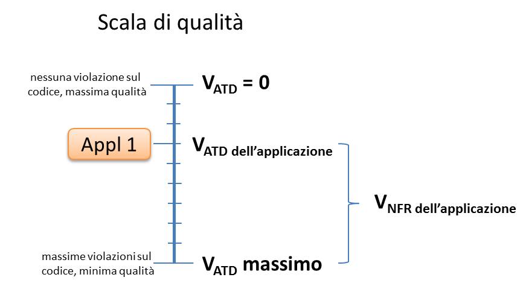

Guida tecnica all’uso di metriche per il software applicativo
sviluppato per conto delle pubbliche amministrazioni
**
Sommario
1.1 Finalità e struttura del documento 4
1.3 Il contesto di riferimento 6
1.3.1 Strumenti Consip a disposizione 7
2.1 Ricognizione a livello internazionale 12
2.2 Ricognizione delle metriche non funzionali disponibili 13
2.3 Analisi del modello strategico del Piano Triennale 22
2.4 Analisi di capitolati e schemi contrattuali 22
2.4.2 Suggerimenti e proposte 26
3.1 Classificazione dei requisiti 28
3.1.2 Requisiti e vincoli di progetto 29
3.1.4 Requisiti di sistema/ambiente 31
3.3 Classificazione delle metriche 32
3.4 Dimensioni del prodotto software 33
4.1 Importanza delle metriche di prodotto 35
4.2.1 Misure funzionali automatiche 37
4.4.1 Misurazioni di prestazione/efficienza 38
4.4.2 Misurazioni di usabilità 42
4.4.3 Misurazioni di affidabilità 47
4.4.4 Misurazioni di sicurezza 50
4.4.5 Misurazioni di manutenibilità 53
4.4.6 Misurazioni di idoneità funzionale 57
4.4.7 Misurazioni di portabilità 59
4.4.8 Misurazioni di compatibilità 61
4.5.3 Technical Environment 63
4.5.5 Metodo di conteggio (breve descrizione) 63
5 Coerenza con il Piano Triennale 66
6 Applicazioni operative ed esempi 71
6.1 Considerazioni generali 71
6.2 Assessment di parchi applicativi già esistenti 71
6.3 Sviluppo di nuove applicazioni 75
6.3.1 Formalizzazione dei requisiti non funzionali 75
6.3.2 Misura della dimensione complessiva e stima del valore dell’applicazione 76
6.4 Evoluzione di applicazioni esistenti 78
6.5.1 Manutenzione correttiva 79
6.5.2 Manutenzione preventiva 80
Premessa
Finalità e struttura del documento
Il presente documento costituisce un aggiornamento delle linee guida sul tema dello sviluppo di software applicativo, pubblicate dall’allora CNIPA nell’ambito della collana sulla qualità dei beni e servizi ICT per le acquisizioni della pubblica amministrazione. Il documento si classifica come “Guida tecnica” per differenziarlo dalle linee guida contenenti le regole tecniche e di indirizzo per l’attuazione del Codice dell’Amministrazione Digitale ai sensi dell’art. 71 del Codice stesso.
L’esigenza di aggiornare le precedenti linee guida nasce:
- dal tempo trascorso dall’ultima revisione del documento, notevole soprattutto se rapportato alla rapidità con cui notoriamente evolve il settore dell’ICT e gli standard disponibili;
- dalle criticità riscontrate in molti contratti per sviluppo applicativo, a volte derivanti anche da interpretazioni non corrette di indicazioni e passaggi delle precedenti linee guida;
- dall’attenzione, connessa anche alle contingenze economiche, al contenimento della spesa delle P.A. e al rapporto costi/benefici nelle acquisizioni e nei progetti delle amministrazioni;
- dalle novità introdotte, anche sotto l’aspetto strategico, dal Piano Triennale per l’Informatica nella Pubblica Amministrazione, pubblicato nel corso del 2017 (https://pianotriennale-ict.italia.it/).
I lettori cui questo documento è indirizzato sono in primo luogo le pubbliche amministrazioni che si trovano a sviluppare o mantenere un parco applicativo da utilizzare nell’ambito dei propri compiti istituzionali. I contenuti del documento sono però d’interesse anche per gli operatori del mercato ICT (aziende, sviluppatori, integratori, consulenti, …).
I contenuti del presente documento rappresentano indicazioni e suggerimenti d’ausilio a un percorso decisionale che resta sotto la piena responsabilità delle amministrazioni. Peraltro, la singola P.A. è il soggetto che meglio conosce le proprie esigenze ed è, quindi, in grado di declinare le indicazioni proposte nella presente guida tecnica in coerenza con il proprio contesto e con le caratteristiche delle iniziativi progettuali che sta conducendo.
Il presente documento è articolato nei seguenti capitoli:
- Premessa, che descrive il contesto di riferimento, la problematica affrontata e le finalità del documento;
- Il tavolo di lavoro, comprendente un resoconto delle attività svolte nei mesi che intercorrono dalla costituzione del tavolo fino alla pubblicazione della guida tecnica;
- Definizioni, ove si illustrano i concetti della tematica e si fornisce una terminologia unica di riferimento;
- Metriche e strumenti, che descrive le soluzioni e le metodologie disponibili per misurare le caratteristiche funzionali e non funzionali del software;
- Coerenza con il Piano Triennale, in cui si approfondiscono i punti di contatto tra le metriche del software e le indicazioni strategiche del Piano Triennale;
- Applicazioni operative ed esempi, in cui si analizzano scenari tipici, tratti dalla usuale operatività delle pubbliche amministrazioni, e si ipotizzano impieghi pratici delle metriche, metodologie e strumenti illustrati nella guida tecnica.
Glossario
| Termine | Definizione |
|---|---|
| ADD | Intervento su un prodotto o componente software che consiste nell’aggiunta di funzionalità e che quindi fa incrementare il numero dei punti funzione del prodotto o pacchetto. |
| AFP | Automated Function Point. Metodo di misura automatica, a partire dall’analisi statica del codice sorgente, del contenuto funzionale di un’applicazione. Nel 2016 questo metodo di misura è stato sottoposto da OMG al processo di approvazione dell’ISO. Attualmente è in short track per l’approvazione da parte dell’ISO (SO JTC1 SC7 WG6) col numero ISO 19515. |
| Agile | Il termine si riferisce a una metodologia di sviluppo del software in base alla quale i requisiti e le soluzioni, sviluppate per cicli iterativi, evolvono attraverso lo sforzo collaborativo di gruppi di lavoro inter-funzionali auto-organizzanti e dei loro clienti / utenti finali. La metodologia Agile facilita la pianificazione adattiva, lo sviluppo evolutivo, la consegna anticipata, il miglioramento continuo e incoraggia una risposta rapida e flessibile alle richieste di cambiamenti. |
| Assessment | Valutazione e/o accertamento di un bene patrimoniale (asset). In campo informatico, per assessment si intende l’attività di ricognizione dei sistemi hw/sw di un’organizzazione. |
| BFC | Base Functional Component. Elementi di base alla misurazione funzionale. Nella Function Point Analisys di IFPUG si classificano in External Input (vedi EI), External Output (vedi EO), External Enquiry (vedi EQ), External Interface File (vedi EIF), Internal Logical File (vedi ILF). |
| CAPEX | Capital Expense o Expenditure. Nella contabilità, rappresenta il costo per sviluppare o acquisire asset durevoli, ad esempio, la spesa necessaria all'acquisto di un prodotto software o alla sua realizzazione (sviluppo di software ad hoc). |
| Change Management | Gestione delle modifiche. È il sottoinsieme del project management che si occupa dell'utilizzo di metodi e procedure standardizzate per una efficiente e rapida gestione di tutti i cambiamenti, con lo scopo di minimizzare l'impatto di possibili imprevisti sui progetti. |
| CHG | Change, intervento su un prodotto o componente software che consiste nel modificare funzionalità già in esso presenti. In questo caso il numero di punti funzione complessivo del software oggetto dell’intervento può restare invariato, diminuire o aumentare. |
| CISQ | Consortium for IT Software Quality. È un organismo fondato dall’Object Management Group (vedi OMG) e dal Software Engineering Institute (vedi SEI) della Università Carnegie Mellon che si è occupato, a partire dal 2009, dello sviluppo di metodi di misurazione automatica del software. |
| Cocomo | Il Constructive Cost Model (CoCoMo) è un metodo utilizzato per elaborare stime nei progetti di sviluppo software. È descritto nel libro Software Engineering Economics di Barry Boehm del 1981. Il metodo considera vari parametri storici, derivati dall’analisi di un certo numero di progetti e pesati mediante una griglia di valutazione. Il calcolo dell’impegno viene effettuato con una formula specifica che produce il numero di mesi-persona necessari allo svolgimento del progetto. Esistono tre diversi modelli di cocomo che si differenziano per la raffinatezza e la precisione con cui vengono stimati i diversi valori: Basic, Intermediate e Advanced, chiamato anche Detailed. |
| COSMIC | COmmon Software Measurement International Consortium. È un’organizzazione che nasce da un’iniziativa volontaria di un gruppo internazionale di esperti nella misurazione del software. È anche un metodo di misura della dimensione funzionale del software al pari della FPA di IFPUG. Prevede i seguenti quattro elementi di conteggio funzionale: Entry, eXit, Read, Write. Maggiori dettagli sono disponibili sul sito COSMIC (https://cosmic-sizing.org/). |
| CR | Change Request. Richiesta di modifica da apportare a un prodotto o componente software che viene formalizzata per mezzo di una scheda nella quale si descrive in modo non ambiguo la modifica stessa. La gestione delle change request (vedi Change Management) viene in genere svolta da un’apposita commissione denominata “change management board” o “change control board” che decide se ciascuna change request deve o meno essere realizzata. |
| DEL | Intervento su un prodotto o componente software che consiste nell’eliminazione di funzionalità già in esso presenti e che quindi comporta una diminuzione del numero di punti funzione del prodotto o componente software. |
| EI | Nel metodo di conteggio IFPUG è un processo elementare di input. |
| EIF | Nel metodo di conteggio IFPUG è un gruppo logico di dati usato in sola lettura, esterno al confine applicativo. |
| EO | Nel metodo di conteggio IFPUG è un processo elementare di output. |
| EQ | Nel metodo di conteggio IFPUG è un processo elementare di interrogazione. |
| FPA | Function Point Analysis, metodo di conteggio dei Punti Funzione secondo IFPUG. |
| FUR | Functional User Requirement, requisito funzionale d’utente. |
| GUFPI-ISMA | Gruppo Utenti Function Point Italia - Italian Software Metrics Association. Il GUFPI-ISMA è l'associazione italiana per la promozione, la diffusione e lo sviluppo delle tecniche quantitative di misurazione del software, inclusi i metodi di misurazione della dimensione funzionale IFPUG e COSMIC (http://www.gufpi-isma.org) |
| IFPUG | International Function Point Users Group. Organizzazione senza scopo di lucro che si occupa dello sviluppo di due tipi di metodologie standard per il dimensionamento del prodotto software. Una di esse è definita nel manuale per il calcolo dei Punti Funzione (vedi PF). L’altra - ancora in evoluzione - è il “Software Non-functional Assessment Process” (vedi SNAP). IFPUG si occupa anche del governo del processo di certificazione dei CFPS/CFPP (Certified Function Point Specialist/Certified Function Point Practitioner) e SNAP, e ospita la International Software Measurement and Analysis Conference (vedi ISMA). Maggiori dettagli sono disponibili sul sito IFPUG (http://www.ifpug.org/). |
| ILF | Nel metodo di conteggio IFPUG è un gruppo logico di dati usato in lettura/scrittura interno al confine applicativo. |
| ISBSG | International Software Benchmarking Standards Group. Organizzazione fondata nel 1997 da un gruppo di associazioni nazionali di metriche del software, con lo scopo di promuovere l'uso dei dati del settore IT per migliorare i processi e i prodotti software. Gestisce dati di sviluppo / manutenzione del software IT. Questi dati, che provengono da organizzazioni IT internazionali considerate affidabili, possono essere utilizzati come riferimento per progetti IT (http://www.isbsg.org). |
| ISO | International Organization for Standardization. È la più importante organizzazione a livello mondiale per la definizione di norme tecniche. Maggiori dettagli sono disponibili sul sito ISO: www.iso.org. |
| KPI | Key Performance Indicator, indicatore di riferimento della prestazione. Vedi SLA. |
| Legacy | Riferito a un sistema informatico, un'applicazione software, un componente hardware che è un lascito del passato e pertanto risulta obsoleto, ma che continua a essere usato poiché non si intende o non si può rimpiazzarlo. |
| MARK-II | Il metodo di misura funzionale MARK-II (o più semplicemente MK II) è stato definito da Charles Symons nel 1991 e viene aggiornato dalla UK Software Metrics Association (http://www.uksma.org/). In questo metodo i FUR sono identificati, suddivisi in tre classi distinte (“input”, “exit” e “object”) e contati. I tre valori ottenuti sono “pesati” (moltiplicati per opportuni fattori moltiplicativi o “pesi”). La dimensione funzionale complessiva è ottenuta sommando i tre valori pesati. |
| MEPA | Mercato elettronico della pubblica amministrazione. |
| MEV | Manutenzione evolutiva del software. Comprende gli interventi volti a modificare, aggiungere o eliminare funzionalità di applicazioni esistenti. |
| Misurazione | Assegnazione di un numero o categoria a un attributo di un’entità per descriverla, usando una specifica unità di misura e regole di conteggio. Il valore assegnato all’attributo è la misura, definibile anche come risultato della misurazione. Nell’ambito del presente studio viene impiegato, in alternativa, anche il termine “metrica”. Metrica e misura, del resto, sono intesi come sinonimi in molta letteratura tecnica. Per maggiore precisione, si segnala che la ISO 15939 propende per un uso generalizzato del termine “misura” nel senso di misura diretta o base, mentre associa “metrica” a una misura derivata (definita come funzione di due o più misure base). Esempio: misurare in un certo istante la pressione sanguigna di un paziente produce una misura base; ripetere la misurazione ogni ora nel corso della giornata e calcolare la media produce una misura derivata o metrica (pressione media giornaliera). |
| NFR | Non Functional Requirement, requisito non funzionale di un prodotto o componente software. Gli NFR sono distinti dai requisiti funzionali - oggetto dell’analisi dei punti funzione - e dai requisiti di progetto. I requisiti non funzionali possono essere suddivisi in requisiti di qualità, requisiti di sistema/ambiente e requisiti tecnici. |
| OMG | Object Management Group. L’OMG è un consorzio internazionale no-profit fondato nel 1989 che si occupa di standard aperti. Gli standard di modellazione di OMG, tra cui Unified Modeling Language (UML) e Model Driven Architecture (MDA), sono orientati alla progettazione, la manutenzione di software e altri processi. |
| OPEX | Operating Expense o Expenditure. In contabilità, rappresenta il flusso di cassa in uscita per la realizzazione di interventi di natura ricorrente, ad esempio la spesa necessaria per la gestione di un prodotto o sistema. |
| P.A. | Pubblica Amministrazione. |
| Parco applicativo | L’insieme dei prodotti software di cui dispone una Pubblica Amministrazione a seguito di acquisizione di prodotti di mercato e/o a seguito di realizzazione di soluzioni software ad hoc. Nella presente guida tecnica è sinonimo di portafoglio applicativo. |
| PF | Punto Funzione (in inglese Function Point). Metrica del software definita per la prima volta nel 1975 da Allan Albrecht presso IBM per dimensionare i requisiti funzionali d’utente (vedi FUR) di un prodotto software durante la sua progettazione. Lo scopo era ottenere una stima più oggettiva dell'impegno richiesto. Successivamente l’evoluzione del metodo è stata presa in carico da IFPUG (vedi). Negli anni sono state sviluppate varianti del metodo originario (es. MARK-II, COSMIC). |
| Portafoglio (applicativo) | Vedi parco applicativo. |
| PT | Piano Triennale. |
| Quality Gate | Elemento di controllo previsto in alcune metodologie di project management. Si tratta di una “special milestone” (traguardo intermedio di progetto), che viene normalmente fissata all’avvio di una fase Fn che dipende fortemente dal risultato della fase precedente Fn-1. Consiste essenzialmente in un controllo di qualità dei risultati della fase Fn-1. Nei casi in cui detto controllo non venga superato, il progetto può essere annullato o sospeso. |
| RdO | Richiesta d’Offerta. |
| SCU | SNAP Counting Unit, Unità di conteggio SNAP. È l’oggetto elementare di cui vengono valutate complessità e dimensione. La SCU può essere un componente, un processo o un'attività identificata nell’ambito di una o più sotto-categorie SNAP. In alcuni casi, la SCU si identifica col processo elementare (in termini IFPUG). Una SCU può comprendere sia caratteristiche funzionali che non funzionali: in questi casi, il dimensionamento del processo elementare viene eseguito utilizzando la FPA per la parte funzionale, il metodo SNAP per la parte non funzionale. |
| SEI | Software Engineering Institute. Il SEI è un centro di ricerca e sviluppo con sede nel campus della Carnegie Mellon University di Pittsburgh. |
| SiFP | Simple Function Point è un metodo di misura funzionale del software, pensato per velocizzare i conteggi rispetto ad altri metodi quali FPA di IFPUG e COSMIC. Rispetto a FPA, il metodo prevede il conteggio di due sole tipologie di BFC (vedi): UGEP (Unspecified Generic Elementary Process) e UGDG (Unspecified Generic Data Group). |
| SiFPA | Simple Function Point Association è un’associazione senza scopo di lucro che si prefigge di promuovere e diffondere a livello mondiale il metodo dei Simple Function Point (vedi). |
| SLA | Service Level Agreement, accordo sul livello del servizio. Strumento contrattuale che, facendo uso di opportuni indicatori (vedi KPI), consente di specificare in modo quantitativo e non ambiguo le caratteristiche del servizio che il cliente richiede al fornitore. Ciascuno SLA è in genere associato a una penale, applicata in caso di non rispetto dello SLA stesso. |
| SNAP | Software Non-functional Assessment Process. Metodo di misura complementare alla FPA, sviluppato da IFPUG per misurare i requisiti non funzionali (vedi NFR) di un prodotto o componente software. |
| SNAP Point (SP) | Unità di misura del metodo SNAP. Il contenuto non funzionale di un’applicazione software conteggiato tramite SNAP si esprime in SNAP Point. |
| SQuaRE | Systems and software Quality Requirements and Evaluation è uno standard di qualità del software definito nel documento di specifica ISO/IEC 25010:2011, la cui ultima revisione risale al 2017. SQuaRE prevede due modelli:
|
| UFP | Unadjusted Function Point. Fino alla versione 4.2, il metodo FPA distingueva tra UFP e AFP (Adjusted Function Point). Quest’ultimo valore era ottenuto moltiplicando il numero di UFP per il cosiddetto “value adjustment factor” (VAF), fattore che teneva conto di 14 caratteristiche generali di sistema (GSC), essenzialmente caratteristiche non funzionali che, per definizione, non venivano prese in considerazione dal semplice conteggio degli UFP. Il VAF non è più utilizzato a partire dalla release 4.3 di FPA (gennaio 2010). |
Il contesto di riferimento
Nella generalità dei casi, le pubbliche amministrazioni italiane acquisiscono da fornitori esterni, stipulando appositi contratti, i servizi di:
- sviluppo applicativo;
- manutenzione (correttiva, migliorativa, adeguativa, evolutiva) di applicazioni informatiche.
Di norma il personale interno dell’amministrazione è coinvolto in alcune delle attività connesse ai servizi di cui sopra, ad esempio nella raccolta dei requisiti nei progetti di sviluppo applicativo; più raramente, personale interno collabora alla fase di analisi e progettazione delle applicazioni. Si riscontrano anche situazioni in cui al fornitore esterno sono affidate tutte le attività progettuali, compresa la raccolta dei requisiti.
Per il suo ruolo, AgID ha visibilità dei contratti della pubblica amministrazione centrale e, in casi rilevanti o legati a progettualità specifiche, anche di enti locali. Esaminando l’insieme di questi contratti si possono rilevare le seguenti caratteristiche:
- la maggioranza dei servizi di sviluppo e manutenzione viene acquisita dalle amministrazioni nell’ambito di contratti pluriennali di grandi dimensioni (anche in termini economici) in cui vengono fissati corrispettivi unitari, modalità di remunerazione, SLA e penali; tali atti costituiscono una “cornice” entro la quale si svolgono più progetti di realizzazione o evoluzione di applicativi software;
- la remunerazione dello sviluppo copre in genere anche un anno di manutenzione correttiva (garanzia) delle applicazioni rilasciate;
- nella maggioranza dei contratti il fornitore viene remunerato a misura, sulla base della dimensione del software rilasciato; quest’ultima grandezza viene misurata in Punti Funzione (nel seguito “PF”);
- si riscontrano anche numerosi contratti in cui il fornitore viene remunerato a tempo e spesa, sulla base delle giornate persona erogate e rendicontate;
- sono rari i contratti in cui è previsto un pagamento a corpo (si riscontrano solo in caso di iniziative circoscritte e ben definite già in fase di negoziazione con il fornitore);
- gran parte dei contratti vengono stipulati a seguito di procedure competitive, secondo quanto previsto dalla normativa in vigore;
- si riscontra un ricorso crescente agli strumenti messi a disposizione da Consip (Accordi Quadro, MePA, ecc.) anche a causa delle forti indicazioni date in questo senso dalla L. 28 dicembre 2015, n. 208.
Strumenti Consip a disposizione
Per acquisire servizi di sviluppo e manutenzione applicativa le amministrazioni possono ricorrere ai seguenti strumenti Consip [1];
- contratti SPC Cloud lotto 3 e lotto 4 (attivati tra l’aprile e l’agosto 2017);
- contratti-quadro per l’affidamento di servizi in ambito Sistemi Gestionali Integrati (5 lotti, aggiudicati nell’agosto 2017);
- accordo quadro per l’affidamento di servizi applicativi. Dei tre lotti geografici previsti, il lotto 1 “Centro” risulta esaurito; il lotto 2 “Nord” è stato prorogato fino al 6 dicembre 2018 (al novembre 2017 il quantitativo consumato era pari al 25%); il lotto 3 “Sud e Isole” è sub iudice (una prima sentenza della Corte di Giustizia Europea è stata emessa il 22 dicembre 2017; la nuova udienza di merito è stata fissata per il 7 marzo 2018; la sentenza definitiva è prevista per aprile 2018).
Risulta, al momento, in fase di esame delle offerte la gara per il nuovo accordo quadro per servizi applicativi (AQ Servizi Applicativi 2), che prevede 7 lotti. In questa nuova gara si prevede, come regola di base, la remunerazione sulla base dei Punti Funzione (nel cui prezzo offerto i concorrenti debbono considerare le caratteristiche di qualità sulla base del modello ISO 25010) oppure dei Giorni Persona.
Sono peraltro previsti, in questa nuova iniziativa, alcuni elementi di flessibilità. Si riporta ad esempio un passaggio dal capitolo 6 dell’allegato 5 al capitolato tecnico:
“Le Amministrazioni che dispongono di metodologie standardizzate e linee guida consolidate per una più precisa e controllata determinazione dell’effort possono modificare le regole cautelative sopra esposte. (…) A livello di Accordo Quadro vengono, pertanto, identificate le sole metriche di base e i fattori che ne determinano la misura, lasciando all'Amministrazione la facoltà di declinare in AS [2] tali fattori”.
Infine, si segnala che le amministrazioni pubbliche possono reperire sul MEPA, con il bando “Servizi Professionali”, competenze per supportarle nei progetti di sviluppo e manutenzione di software applicativo.
Le problematiche
Le criticità che più frequentemente si riscontrano, o che comunque l’Agenzia ha rilevato negli ultimi anni, nella gestione dei contratti pubblici per sviluppo e manutenzione di applicazioni informatiche sono:
- Carenza di competenze tecniche interne alle amministrazioni. Le P.A. soffrono di una cronica mancanza di personale informatico interno. Questa carenza, legata anche al mancato turn-over del personale e alla difficoltà di acquisire nuove risorse umane, mette a volte l’amministrazione in condizione di debolezza nei confronti delle controparti contrattuali, favorisce condizioni di lock-in e di perdita di controllo non solo delle attività progettuali ma anche del patrimonio di dati e applicazioni dell’amministrazione stessa.
- Carenza di competenze nella gestione di gare e contratti. Per gli stessi motivi di cui al punto precedente, alcune amministrazioni difettano di figure professionali in grado di scrivere capitolati e documentazione di gara adeguati, di verificare il rispetto dei livelli di servizio e di applicare efficacemente le clausole contrattuali. Con riferimento ai già citati Punti Funzione, alcune amministrazioni hanno difficoltà ad applicare correttamente questa metrica (che in effetti richiede competenze specifiche e un adeguato percorso formativo): si riscontrano contratti nel cui articolato si fa un uso erroneo della metrica dei Punti Funzione, tale da annullarne i vantaggi. In occasione di recenti convegni sullo stato dell’informatica pubblica, alcuni relatori hanno proposto, per superare queste criticità, il drastico abbandono della metrica dei Punti Funzione. Benché questa provocazione possa stimolare il dibattito, è chiaro che si tratta di una falsa soluzione, giacché il problema è di competenze e non di unità di misura. Per chiarire il punto con una metafora di senso comune, sarebbe come se per risolvere una situazione di sovrappeso si abolissero le bilance.
- Mancanza di strumenti e meccanismi contrattuali per garantire la qualità di quanto ricevuto dal fornitore. Benché, in via teorica, tutte le amministrazioni desiderino ottenere alti livelli di qualità nelle forniture, in pratica le amministrazioni non richiedono formalmente, con rare eccezioni, strumenti efficaci per raggiungere tale obiettivo, o non li utilizzano. Anche la semplice misurazione della qualità dei prodotti/servizi acquisiti non è sempre attuata, in quanto l’amministrazione non dispone di strumenti propri di verifica e di sufficiente know-how (a volte la misurazione è demandata al solo fornitore).
Con riferimento alle forniture di sviluppo software, l’unica metrica di prodotto al momento sufficientemente diffusa (i Punti Funzione) misura solo le funzionalità di un’applicazione; le dimensioni non funzionali (usabilità, prestazioni, manutenibilità, sicurezza, ecc.) sono fuori dal perimetro di applicazione dei PF. Ciò comporta che interventi su applicazioni finalizzati, ad esempio, ad aumentare l’usabilità, non vengono a oggi remunerati sulla base del risultato, perché non ci sono metriche di prodotto condivise adatte a misurare l’intervento. Tali attività vengono invece remunerate a corpo o a giorni persona.
- Eccessiva enfasi al prezzo. Negli ultimi anni si sono riscontrati, in gare per sviluppo applicativo, ribassi rilevanti rispetto alla base d’asta, a dispetto delle modalità di aggiudicazione (criterio dell’offerta economicamente più vantaggiosa) e del maggior peso assegnato alla qualità dell’offerta [3].
Ciò è senz’altro dipeso dalle condizioni competitive del mercato ICT. Tuttavia si possono avanzare altre spiegazioni. Ad esempio si riscontrano gare in cui il punteggio tecnico non viene assegnato in base a criteri oggettivi ma prendendo atto di dichiarazioni del fornitore. In questi casi tutte le offerte tecniche tendono a ottenere il massimo del punteggio (in quanto i concorrenti dichiarano massima qualità), con la conseguenza che torna a essere determinante, per vincere la gara, il ribasso rispetto alla base d’asta.
I contratti che vengono stipulati a seguito di queste gare presentano corrispettivi unitari nettamente inferiori alle medie di mercato. Durante l’erogazione della fornitura, però, spesso emergono discrepanze tra offerta e servizio reso. Tale situazione diviene critica se l’amministrazione cliente non ha competenze e strumenti per la gestione dei contratti tali da interloquire con efficacia coi fornitori, di precisare i requisiti e di verificarne il rispetto, di monitorare gli SLA minimi definiti a livello contrattuale o migliorativi proposti in sede di offerta.
Ultimamente le amministrazioni hanno cominciato a percepire questa criticità e sono alla ricerca di contromisure. Alcune P.A. puntano ad alzare le basi d’asta, ritenendo che corrispettivi unitari più alti motivino il fornitore “a rispettare il contratto sottoscritto”. Si tratta, com’è evidente, di una falsa soluzione, del tutto insufficiente se ad essa non vengono affiancati gli strumenti per misurare/verificare la qualità di cui al punto c).
- Mancata capitalizzazione del patrimonio applicativo delle amministrazioni. Molte P.A. detengono un parco applicativo di dimensioni rilevanti, magari frutto di una serie di progetti susseguitisi nel tempo e di ripetuti investimenti anche ingenti, ma non sanno come quantificare e valorizzare dal punto di vista finanziario questo loro asset. Ciò deriva in parte dalla perdita di controllo già citata al punto a), ma anche dal mancato utilizzo di metriche riconosciute in grado ad esempio di misurare la sicurezza (o la portabilità, o la riusabilità) di un parco applicativo.
- Difficoltà a distinguere tra investimenti e spese ricorrenti. Nella quasi totalità delle pubbliche amministrazioni, i costi per la manutenzione (correttiva, adeguativa, migliorativa) di un parco applicativo vengono considerati spese ricorrenti (OPEX). A volte, per il pagamento di queste attività è previsto un canone fisso. Com’è noto, già da anni alle amministrazioni viene chiesto, nelle manovre di bilancio, di tagliare le spese ricorrenti. Se le P.A. avessero a disposizione strumenti per quantificare i benefici degli interventi di manutenzione, questi ultimi potrebbero essere considerati investimenti, e il loro costo imputato di conseguenza come CAPEX.
- Difficoltà ad adeguarsi al modello strategico del Piano Triennale. Il modello strategico di evoluzione del sistema informativo delle P.A., presente nel Piano Triennale 2017-2019, introduce numerosi elementi di novità nell’ambito dei servizi di sviluppo e manutenzione di software applicativo. Ad esempio si prevede che le amministrazioni sviluppino le proprie applicazioni con approccio modulare, esponendo interfacce alle stesse sotto forma di API, in modo che soggetti terzi, pubblici o privati, possano integrarle per realizzare servizi a cittadini e imprese. In quest’ottica, oltre alle tradizionali caratteristiche funzionali del software (le sole misurabili, come detto, in Punti Funzione), assumono grande importanza aspetti quali la fruibilità delle API, la qualità della documentazione delle stesse, le prestazioni, la scalabilità, la sicurezza, l’accessibilità nel caso di servizi web, tutte caratteristiche per cui oggi non si fa uso di una metrica condivisa. Si ritiene che questo aspetto, ove non venga fronteggiato, determinerà criticità e ritardi nell’adeguamento delle P.A. alle indicazioni del Piano Triennale.
Finalità del documento
Tenendo presente le criticità elencate al paragrafo precedente, la presente guida tecnica si propone di:
- esaminare possibili integrazioni alle attuali metriche per il software applicativo (basate essenzialmente sulla misura delle funzionalità erogate), affiancando a queste ultime misure delle caratteristiche non funzionali del software, anche allo scopo di consentire l’attribuzione contabile dei costi di manutenzione del software, attualmente considerati spese ricorrenti, a investimenti;
- analizzare in che modo è possibile aggiornare le modalità di misurazione dei prodotti software per adattarsi al nuovo modello strategico di evoluzione dei sistemi informativi delle P.A., basato su uno sviluppo modulare e su interfacce API;
- studiare come le eventuali metriche alternative possono essere condivise dagli operatori di mercato e applicate alle acquisizioni della pubblica amministrazione, ad esempio legando una percentuale significativa della remunerazione del fornitore alla qualità dei prodotti realizzati e ai risultati effettivamente conseguiti.
Vale la pena segnalare che le amministrazioni, oggi come in passato, appaiono disponibili a seguire le linee guida dell’AgID, alla cui realizzazione – peraltro – collaborano insieme a soggetti appartenenti alla ricerca, all’industria e all’accademia. Nel corso degli anni le linee guida dell’Agenzia hanno contribuito, tra l’altro, a standardizzare l’approccio delle pubbliche amministrazioni alla definizione e gestione dei contratti.
La presente guida tecnica, in omogeneità con le precedenti pubblicazioni dell’AgID di questo tipo, non hanno pretesa di completezza documentale, esaustività e massimo rigore sulla tematica in esame. Al contrario, esse rappresentano una sintesi di prima fruibilità delle asserzioni della letteratura tecnica in materia. Esse sono indirizzate a una categoria ben definita di lettori (dirigenti e funzionari della pubblica amministrazione), pertanto sono focalizzate sulle esigenze e sul contesto pubblico; perseguendo anche finalità didattiche, il livello della trattazione è stato reso, ove possibile, comprensibile al più ampio pubblico, soprattutto tramite una serie di esempi, indicazioni operative e suggerimenti pratici. Ove il lettore voglia andare più in dettaglio e/o cerchi una narrazione tecnica più rigorosa, verranno forniti riferimenti a testi o siti web su cui approfondire.
Il tavolo di lavoro
Il presente documento è stato redatto dal Tavolo di lavoro dell’Agenzia per l’Italia Digitale, istituito con determinazione del Direttore generale n. 165 del 9 giugno 2017. Al Tavolo di lavoro, coordinato da Francesco Grasso, hanno partecipato per l’AgID Francesca Villani, Gaetano Bruno, Salvatore Del Pizzo, Giovanni Di Iasio.
Hanno fatto parte del Tavolo di lavoro anche i seguenti esperti esterni, nominati nella medesima determinazione n. 165 e selezionati tra quanti avevano presentato la propria candidatura a seguito dell’avviso pubblicato dall’Agenzia sul proprio sito web il 4 maggio 2017:
- Ivana Beni, Almaviva;
- Giulio Borsari, Ministero della Giustizia [4];
- Luigi Buglione, GUFPI-ISMA;
- Michele Canalini, Consip;
- Marco Caprio, Agenzia delle Entrate;
- Carlo Contavalli, Digital Team (PCM);
- Iginia De Fent, Insiel;
- Sergio Di Martino, Università degli Studi di Napoli;
- Gianluca Ferri [5], SQS;
- Marco Geraci, CAST;
- Vittorio Goletti, FID;
- Gianfranco Lanza, CSI Piemonte;
- Gabriele Massarelli, Consip;
- Roberto Meli, DPO [6];
- Antonio Messina, Agenzia delle Entrate;
- Domenico Natale, UNINFO;
- Simone Piunno, Digital Team (PCM);
- Antonella Rampini, Consip;
- Michele Slocovich, OMG-CISQ.
Nel corso delle attività, svoltesi tra il giugno 2017 e il febbraio 2018, il Tavolo di lavoro ha effettuato 5 riunioni aperte ai componenti esterni. Nel luglio 2017 si è tenuta un’audizione di Francesco Teseo e Giuseppe Lo Presti di Accenture, durante la quale è stata illustrata l’esperienza di detta società nel campo oggetto d’indagine. Nel febbraio 2018 si è tenuta un’audizione di Andrea Gelli, della società QSM Switzerland, che ha rappresentato lo stato dell’arte delle gare pubbliche nella Confederazione Elvetica. Oltre a tali incontri, l’interazione tra i componenti del Tavolo di lavoro è avvenuta tramite scambio di documenti e strumenti di collaboration remota.
Le attività del Tavolo di lavoro si sono articolate nelle seguenti fasi:
- ricognizione a livello internazionale di esperienze e casi di studio sulle metriche del software;
- ricognizione di metriche non funzionali, confronto di strumenti, metodologie, proposte a disposizione;
- analisi del modello strategico del Piano Triennale, con lo studio delle possibili applicazioni a tale modello delle metriche non funzionali;
- studio dell’impatto delle metriche non funzionali su capitolati e schemi contrattuali delle pubbliche amministrazioni;
- redazione del testo finale del documento.
La guida tecnica è stata approvata dall’Agenzia per l’Italia Digitale con determinazione n. xx del xxx.
Analogamente ad altri documenti di natura tecnica pubblicati in passato dall’Agenzia, la presente guida tecnica sarà aggiornata in rapporto all’evoluzione delle tecnologie ICT e del contesto normativo/organizzativo delle pubbliche amministrazioni italiane.
Ricognizione a livello internazionale
Come prima attività, il Tavolo di lavoro ha effettuato una ricognizione presso alcune pubbliche amministrazioni estere che svolgono funzioni analoghe ad AgID e organismi di altri Paesi che si occupano di standard per la misurazione del software.
I destinatari della ricognizione sono stati individuati nel corso della prima riunione del Tavolo di lavoro, attingendo a riferimenti istituzionali e all’esperienza dei partecipanti esterni del Tavolo che fanno parte di comitati e organizzazioni internazionali. Ai destinatari è stata inoltrata una richiesta a mezzo posta elettronica, illustrando le finalità dello studio in corso e chiedendo contributi sulla tematica.
In particolare sono state chieste:
- informazioni riguardo le modalità utilizzate per la misurazione del software;
- se sono state sperimentate metriche per le caratteristiche non funzionali del software.
Nella tabella che segue sono riepilogati i destinatari della ricognizione.
Tabella 1: destinatari della ricognizione internazionale
| Organizzazione | Riferimento |
|---|---|
| Directeur de l’Agence du numérique – Francia | agence.numerique@finances.gouv.fr |
| Secretary at the Federal Ministry of the Interior and Federal Government Commissioner for Information Technology - Germania | Besucherdienst@bmi.bund.de |
| Government Digital Service – UK | kevin.cunnington@digital.cabinet-office.gov.uk |
| Office of the Government Chief Information Officer (OGCIO) - Irlanda | barry.lowry@per.gov.ie |
| Director of the Digital Services Unit; National Architecture for Digital Services – Finlandia | Kristiina.Luukkonen@vm.fi |
| KERC - Korea-EU Research Centre | ockwon@etri.re.kr |
| EU-Japan Centre for Industrial Cooperation | fabrizio.mura@eu-japan.gr.jp |
| Ministerio de Modernización Gobierno Digital - Argentina | digital@modernizacion.gob.ar |
| Ministerio de Hacienda y Función Pública - Secretaría General de Administración Digital - Subdirección General de Impulso de la Administración Digital y Servicios al Ciudadano – Spagna | secretaria.sgiadsc@seap.minhap.es |
| Minister of Digital Affairs – Polonia | apiasecki@ibemag.pl |
| Minister of Entrepreneurship and Information Technology of the Republic of Estonia | info@mkm.ee |
| AEMES (associazione spagnola per la governance, la misurazione delle tecnologie dell'informazione e la gestione) | admon@aemes.org |
| ASSEMI (ASSociation pour l'Etude des Métriques Informatiques) - Francia | Secretariat@assemi.org |
| DASMA (Deutschsprachige Anwendergruppe für Software-Metrik und Aufwandschätzung e.V.) – Germania | info@dasma.org |
| ITSA (Korea Information Technology Service Industry Association) | hijeong@itsa.or.kr |
| NESMA (Netherlands Software Metrics users Association) - Olanda | office@nesma.org;https://nesma.org/2018/01/non-functional-requirements/ |
| PSMO (Associazione polacca per le misure del software) | kontakt@psmo.pl |
| JFPUG (Japan Function Point User Group) | office@jfpug.gr.jp |
| Programme Office eGovernment Switzerland | info@egovernment.ch anna.faoro@egovernment.ch |
Non tutti gli interpellati hanno risposto. In alcuni casi, forse a causa della insufficiente conoscenza della tematica, le risposte ricevute non sono sembrate pertinenti. Nella tabella che segue sono sintetizzati i contributi più significativi tra quelli acquisiti.
Tabella 2: esiti della ricognizione internazionale
| Nazione / Rispondente | Sintesi delle informazioni trasmesse |
|---|---|
| Estonia | Abbiamo ricevuto informazioni e alcuni documenti riguardanti la gestione dei processi e la definizione di standard nazionali per i contratti stipulati dalle P.A. estoni. Il rispondente non si è espresso sulle metriche non funzionali e sul loro eventuale utilizzo. |
| Gran Bretagna | La risposta riguarda essenzialmente la piattaforma utilizzata per misurare la qualità dei servizi offerti dalle amministrazioni. Nulla è stato detto dell’utilizzo di metriche del software. |
| Giappone (EU-Japan Centre for Industrial Cooperation) | Il rispondente ha precisato che la sua organizzazione è piccola e non svolge misurazioni del software. Le motivazioni sono:
|
| Giappone (IFPUG) | Il Japanese Function Point User Group conferma quanto alla riga precedente. Da parte dell’industria ICT si segnala interesse per la tematica, ma in sostanza non sono state avviate azioni concrete. JFPUG conferma inoltre che i requisiti non funzionali sono molto spesso trascurati nelle fasi iniziali dei progetti, per poi emergere nelle fasi successive. Riguardo a SNAP, JFPUG è stato piuttosto esplicito nell’affermare che il metodo presenta criticità. |
| Irlanda | Gli irlandesi riconoscono che i requisiti non funzionali siano spesso trascurati nella fase di analisi, creando seri problemi nelle fasi successive dei progetti di realizzazione del software. Peraltro, essi nutrono dubbi sulla possibilità di misurarli agevolmente. In particolare hanno una conoscenza solo teorica del metodo SNAP, che appare, a loro giudizio, piuttosto complesso e strettamente collegato alla metrica dei Punti Funzione. In conclusione, esprimono perplessità sui benefici dell’applicazione di SNAP, soprattutto in considerazione dello sforzo necessario alla sua applicazione in progetti ICT complessi come quelli tipici delle P.A.; ritengono più importante che i requisiti non funzionali siano tutti correttamente identificati nella fase di analisi e implementati nelle fasi successive dei progetti. |
| Olanda | Il NESMA (Nederlands Software Metrics users Association) segnala che al suo interno è attivo un gruppo di specialisti e architetti software che stanno lavorando sull’argomento delle metriche non funzionali. Il NESMA ha messo a punto un framework, presentato alla conferenza IWSM (International Workshop on Statistical Modelling) di Göteborg. La presentazione e il relativo articolo sono stati trasmessi e acquisiti dal Tavolo di lavoro. In estrema sintesi, essi propongono un approccio teorico sulla misurazione della dimensione funzionale / non funzionale del software e la stima dei corrispondenti costi di realizzazione. Esprimono inoltre riserve sul metodo SNAP (considerato ancora non stabile) e su COSMIC (giudicato incompleto). |
| Svizzera | Nella Confederazione Elvetica le procedure di appalto sono regolate dall’Ufficio federale delle costruzioni e della logistica (UFCL) in base all’Accordo sugli appalti pubblici (GATT-WTO) entrato in vigore per la Svizzera il 1° gennaio 1996. Obiettivo delle PA è ottenere una stima dei costi del progetto prima della gara d’appalto, considerando: – Le funzionalità, misurate con la FPA; – I tempi progettuali desiderati; – Le disponibilità di budget; – La qualità richiesta durante l’esercizio. Gli schemi contrattuali prevedono, in genere, che la remunerazione dei fornitori aggiudicatari venga effettuata a corpo, pur con la possibilità di introdurre varianti al progetto con il meccanismo delle “change request”. Ciò è giustificato dal fatto che la determinazione delle basi d’asta è sufficientemente precisa. In genere le Pubbliche Amministrazioni svizzere si affidano a società esterne che le affiancano nelle fasi di preparazione delle procedure di gara e di determinazione della basi d’asta, e che si occupano del monitoraggio successivo all’aggiudicazione. |
A seguito della ricognizione effettuata e dalla lettura dei contributi pervenuti, si può affermare quanto segue:
- poter misurare i requisiti non funzionali di un software è un’esigenza sentita dalla maggior parte delle amministrazioni pubbliche dei Paesi rispondenti, tuttavia non sembra emergere un reale impiego di metriche o sperimentazioni degne di nota;
- i metodi attualmente disponibili sono giudicati non sufficientemente maturi; si avverte la necessità di un loro consolidamento, o almeno di una loro integrazione, prima di suggerirne l’uso;
- l’Italia, con la costituzione del presente Tavolo di lavoro, può ritenersi in posizione più avanzata sull’argomento rispetto alle nazioni interpellate.
Ricognizione delle metriche non funzionali disponibili
La seconda attività svolta dal Tavolo di lavoro è stata la raccolta di documentazione tecnica inerente l’oggetto dello studio, in particolare inerente le metriche per quantificare le caratteristiche non funzionali del software.
Si è proceduto:
- ricercando documentazione in rete;
- acquisendo contributi proposti dai componenti non AgID del Tavolo di lavoro;
- tramite confronto con altri tavoli di lavoro presenti in AgID o a cui l’AgID partecipa (es. GLU – Gruppo di Lavoro sull’Usabilità della Funzione Pubblica e MiSE);
- svolgendo due audizioni di società private.
I documenti raccolti sono elencati nella tabella che segue.
Tabella 3: elenco documenti acquisiti
| Titolo | Autore/Fonte | Data |
|---|---|---|
| “Il Software non è un frutto” dalla rivista “il Project Manager” | Roberto Meli | apr-15 |
| “Metric Views” | IFPUG | ago-12 |
| 10 metrics for improving the level of management | Pekka Forselius - Risto Nevalainen (FISMA Finlandia) | 2012 |
| 8 Steps to Measure ADM Vendor Deliverables | CAST | |
| A fact-based approach to portfolio rationalization | Bill Dickenson (Strategyontheweb.com) - Scott Moore (IBM) - Gregory J Chiarella (IBM) | 2015 |
| A Shortcut to estimating Non-functional Requirements? | Frank Vogelezang – NESMA (Olanda) | 25/10/2017 |
| A Shortcut to Estimating Non-Functional Requirements? - Architecture Driven Estimation as the Key to Good Cost Predictions | F.W. Vogelezang - E. van der Vliet - R. Nijland - E.R.Poort - H.R.J.Mols - J. de Vries (Olanda) | ott-17 |
| Accord cadre 2016 pour le support et la maintenance du si chorus ccme partie 1 : cahier des clauses administratives particulieres ET partie 2 : cahier des clauses techniques particulieres | Ministero delle Finanze e dei conti Pubblici (Francia) | 2016 |
| Agile-4-FSM - Improving estimates by a 4-pieces puzzle | Luigi Buglione | 17/05/2012 |
| Agility-and-Reliability-Need-Not-Be-Mutual-Exclusive | Satish Dani - Venkat Nagarajan (CAST) | 2015 |
| Agreement for the provision of Services (Sole Entity Multiple Purchase) | Victorian Government Purchasing Board (VGPB) – Dipartimento del Tesoro e della Finanza | 2017 |
| Allegato 1.5 Regole di programmazione | RAI | 2016 |
| Allegato 2 CAPITOLATO TECNICO RdO MEPA per l’acquisizione di servizi professionali per il supporto alla validazione delle stime dimensionali per lo sviluppo applicativo e la manutenzione evolutiva - 15154SVI - N007/15 - | Banca d’Italia - Eurosistema | 2016 |
| Allegato 2.1 LOTTO 2 – Descrizione Sistemi componenti e dimensioni della fornitura | RAI | 2016 |
| Allegato 2.7 Strumenti a supporto | RAI | 2015 |
| Amendment of solicitation/modification of contract | Dipartimento di Stato U.S. | 06/02/2017 |
| Application sourcing vendor performance report | CAST | 2015 |
| Appmarq: Benchmark Your Applications - To Industry Peers | CAST | 20/07/2017 |
| Asset Management Accountability Framework | Victorian Government Purchasing Board (VGPB) – Dipartimento del Tesoro e della Finanza | feb-16 |
| ATDM Workshop - CISQ Automated Technical Debt Measure presentation | CISQ | giu-16 |
| Automated Enhancement Points 1.0 Specification presentation | CISQ | |
| Automated Enhancement Points V1.0 | OMG | 03/04/2017 |
| Automated Function Points (AFP) Version 1.0 | OMG | 03/01/2014 |
| Automated Function Points Calculation - Dimensional Software Measurement Program | CAST | |
| Automated Source Code (in Reliability, Performance Efficiency, Security, Maintainability) Measures 1.0 | CISQ | |
| Automated Source Code Maintainability MeasureTM (ASCMMTM) V1.0 | OMG | 01/01/2016 |
| Automated Source Code Performance Efficiency Measure TM (ASCPEMTM) V1.0 | OMG | 02/01/2016 |
| Automated Source Code Reliability Measure TM (ASCRMTM) V1.0 | OMG | 03/01/2016 |
| Automated Source Code Security Measure TM (ASCSMTM) V1.0 | OMG | 04/01/2016 |
| Balancing uncertainty of context in ERP project estimation: an approach and a case study | Maya Daneva (Computer Science Department, University of Twente) | 2010 |
| Best Practices Contrattuali -Vol. 1: Principi ed Assunzioni - Linee guida e suggerimenti per un uso corretto delle misure e degli aspetti di misurazione nei contratti ICT. (document, presentazione ed excel di appendice) | Luigi Buglione - Michele Canalini - Tommaso Iorio - Gianfranco Lanza - Guido Moretto | 25/02/2016 |
| Boosting Software Quality in Insurance IT Systems: Practical Solutions to Application Quality Problems | Paul Camille Bentz (Allianz) | mar-10 |
| Capitolato Tecnico – Procedura aperta per l’affidamento dei servizi per la gestione degli strumenti – lotto 3 | RAI | 2014 |
| CAPITOLATO TECNICO e ALLEGATO 1–LIVELLI DI SERVIZIO al Capitolato Tecnico - Procedura aperta, di carattere comunitario, ai sensi dell’art. 55, comma 5, del D.L.vo 163/2006 per l’affidamento di servizi di Application Development and Maintenance del software applicativo - Indicatori di qualità della fornitura | INPS | 2016 |
| Capitolato TecnicoLotto1“Servizi a progetto per lo sviluppodei Sistemi Informativi RAI–Ambito Istituzionale” | RAI | 2015 |
| Case Study: Bank of New York Mellon adopt CAST Application Intelligence Platform (AIP) to speed time to market and improve governance of outsourcing relationships | CAST | 2011 |
| CAST AIP – Health Factors Overview | CAST | |
| CAST Application Intelligence Platform Overview for the Architect | CAST | 2013 |
| CAST brings transparency and quality assurance to Spanish Social Services IT | CAST | |
| CAST Business Case | CAST | nov-16 |
| CAST CWE for FDA | CAST | |
| CAST Implementazioni reali degli standard OMG/CISQ - AgID-Tavolo di lavoro sulle Metriche | Marco Geraci | 28/07/2017 |
| CAST improves efficiencies in a multi-sourced environment for Government of Catalonia | CAST | |
| CAST Mips Reduction Index | CAST | lug-17 |
| CAST Worldwide Application Software Quality Study – 2010 | CAST | 2010 |
| CISQ in azione per Agile & DevOpsContributo CAST al Gruppo 3 | CAST | mar-17 |
| CISQ Quality Characteristic Measures and the ISO/IEC 25000 Series | Bill Curtis (Consortium for IT Software Quality) | |
| CISQ Recommendation Guide - Effective Software Quality Metrics for ADM Service Level Agreements | CISQ | |
| CloudReady Index (CRI) | CAST | |
| Come governare meglio i contratti dell'Ict | Luigi Buglione sulla rivista CORCOM | gen-17 |
| Conclusions and recommendations of the Dutch temporary committee on government ICT projects | Camera dei rappresentanti dei Paesi Bassi | 15/10/2014 |
| Considerazioni e commenti sulla disamina dell’ISO 25023. | Domenico Natale | ott-17 |
| Consular Systems Modernization Solicitation - SAQMMA16Q0152 | Dipartimento di Stato U.S. | 05/05/2017 |
| Consulta Licitações de TIC | Governo del Brasile | 23/05/2016 |
| Contributo GUFPI-ISMA per un modello di integrazione | GUFPI-ISMA | 2017 |
| Contributo GUFPI-ISMA per un modello di integrazione - Il Quadro Generale: un progetto di...”servizio”! v03/v04 | Luigi Buglione | 2017 |
| Contributo GUFPI-ISMA per un modello di integrazione - Schema ‘123’+Schema ‘ABC’...è la somma che fa il totale! Alcuni spunti per le modalità di gestione e corresponsione | Luigi Buglione | |
| CRASH Benchmark Report 2015 – SAP(CAST Research on Application Software Health) | CAST | 2015 |
| CRASH Report2017 Global Sample | CAST | 2017 |
| CRASH Special Report - Impact of Java EE Frameworks on the Structural Quality of Applications | CAST | apr-13 |
| Data Manipulation: la componente assente della misura funzionale!isura funzionale! | Luigi Lavazza (Università degli Studi dellÍnsubria) - Roberto Meli | 15/12/2016 |
| Deep Dive on Sizing with:-Automated Function Points -Automated Enhancement Points | CAST | |
| Designing a Measurement Method for the Portability Non-Functional Requirement (NFR) | Feras AbuTalib - Alain Abran - Dennis Giannacopoulos | 2013 |
| Developing ICT Investments – Technical Guidance | Victorian Government Purchasing Board (VGPB) – Dipartimento del Tesoro e della Finanza | 2012 |
| DevOps &ITIL - Friends or Foes? | Chiara Mainolfi - Luigi Buglione (itSMF Italia) | 28/02/2017 |
| DevOps Motivations and Barriers: Costs and Quality More Important Than Speed | Hewlett Packard | 2016 |
| Documentazione della Gara a “Procedura aperta per la conclusione di un accordo quadro, suddiviso in 7 lotti, avente a oggetto l’affidamento dei servizi applicativi it per le pubbliche amministrazioni” | CONSIP | lug-17 |
| Documenti vari su casi comuni di applicazioni di punti funzione FPA e SNAP (http://www.ifpug.org/itips-utips/) | IFPUG | |
| Documents Eligible for IFPUG Certification Extension Credits (CEC) - Step Procedura Conteggio IFPUG CPM v4.3.x | IFPUG | |
| DRAFT MANUAL ON POLICIES AND PROCEDURES FOR PROCUREMENT IN EGOVERNANCE | Ministero dell'Industria e dell'Information Technology (DeitY) Governo dell'India | 2016 |
| Dramatically Reducing Software Vulnerabilities - Report to the White House Office of Science and Technology Policy | Paul E. Black - Lee Badger - Barbara Guttman - Elizabeth Fong (National Institute of Standards and Technology) | |
| E&QFP® - Early & Quick Function Points for IFPUG method - Reference Manual 1.1 | DPO | 2012 |
| eCommerce Benchmark Report - Sample Benchmark Report | CAST | 28/09/2016 |
| Effective Productivity:Manual and Automatic Functional Measures, “Risk -Adjusted” | Francesco della Gatta – Michele Slocovich | 19/05/2017 |
| Elaborazione DPO su COSMIC/IFPUG Glossary of NFR and Project terms v1 | Roberto Meli | lug-17 |
| Elenco dei riferimenti di utilizzo di Function Points e Cosmic nelle attività governative | Polonia | 2013 |
| Estimating Packaged Software a Framework - Version1.0 | NESMA (Olanda) | 03/10/2016 |
| Estimating Packaged Softwarea Framework | NESMA | 2016 |
| Estimation | Luigi Buglione - Christof Ebert | 25/06/2012 |
| Flavors of the CAST Business Case - Measured value among CAST customers | CAST | |
| IFPUG SNAP v2.3.0 (Software Non-functional Assessment Process) Quick Guide | IFPUG | 2015 |
| From Software Sizing to Productivity Measurement | CAST | |
| Gara 3/2014/LI -Procedura aperta ai sensi del D.Lgs. n. 163/2006 per l’affidamento dei servizi di supporto al demand management, sviluppo, manutenzione, assistenzaper la realizzazione dei modelli di e-government (allegati 1.2, 1.3, 1.4, 1.6, 1A, 1B, 1C, 1D) | Lombardia Informatica | 2015 |
| Gara n. 9103 Servizi informatici per la manutenzione ordinaria ed evolutiva delle Applicazioni informatiche del GSE SPECIFICA TECNICA | Gestore dei Servizi Energetici – GSE S.p.A. | 2016 |
| General conditions for the provision of Services | Victorian Government Purchasing Board (VGPB) – Dipartimento del Tesoro e della Finanza | 2017 |
| Glossary of terms for Non-Functional Requirements and Project Requirements used in software project performance measurement, benchmarking and estimating | COSMIC/IFPUG | set-15 |
| Governance della Qualità e misurazione FP, l’esperienza di GSE | Cristiano Nicola Sticca | 14/05/2015 |
| Green IT Index - CAST | CAST | |
| Guideline for the use of COSMIC FSM to manage AGILE projects | COSMIC | set-11 |
| Guideline for the use of software metrics in contract | NESMA | 2015 |
| Guidelines - Specific guidance on how to use the COSMIC method | COSMIC | |
| IBM and CAST improve quality, reduce risk and costs of application portfolio at National Grid | IBM | ott-11 |
| Improving the User Story Agile Technique Using the INVEST Criteria | Luigi Buglione - Alain Abran | 2013 |
| Improving the User Story Agile Technique Using the INVEST Criteria (23° International Workshop on Software Measurement (IWSM) and 8th International Conference on Software Process and Product Measurement (MENSURA)) | Luigi Buglione - Alain Abran | 23/10/2013 |
| Incorporating CAST Outputs into Service Level Agreements (SLAs) | CAST | |
| Information technology — Software measurement — Functional size measurement — Part 5: Determination of functional domains for use with functional size measurement | ISO/IEC TR 14143-5 | 01/04/2004 |
| Is a ‘fixed price’ Agile contract possible? How function points can be used to help create contracts for tech projects where Agile methodologies are being used | Ian Brightwell (CIO) | 10/08/2017 |
| IT Policy Report | Innovation and Technology Caucus (Texas) | mag-17 |
| Kodeks dobrych praktyk Polskiego Stowarzyszenia Miar Oprogramowania | Jarosław Świerczek (Presidente dell'Associazione polacca di misure del software) | |
| Leverage CAST AIP in Agile Development | Philippe Guerin (CAST) | |
| Linee Guida CISQ - Metriche di qualità del software per SLA efficaci nei contratti ADM | CISQ | 2015 |
| Linee Guida per l’accessibilità e l’usabilità di siti ed applicazioni web | SOGEI | 26/11/2013 |
| Link alla rivista “Tutto Misure” (Misurare per...credere: una breve overview della Misurazione nel mondo ICT, Quanto è grande un requisito? Parte 1 –Requisiti funzionali, Quanto è grande un requisito? Parte 2 –Requisiti funzionali - i metodi FSM, Quanto è grande un requisito? Parte 3 –Requisiti non-funzionali, Quanto è grande un requisito? Parte 4 –Misurare i requisiti non-funzionali: IFPUG SNAP, Quanto è grande un requisito? Parte 5 -Misurare i requisiti non-funzionali: Benchmarking e Profili non-funzionali, Metrologia e Contratti: Parte 1 –Misurare per Gestire, Metrologia e Contratti: Parte 2 –Livelli di Servizio, Metrologia e Contratti: Parte 3–Ambiti, confini applicativi e strati/partizioni, Metrologia e Contratti: Parte 4–Measurement by Assets (MbA): come e quanto misurare?) | Luigi Buglione | Dal 2014 al 2017 |
| Managing Agile at Scale - A briefing for Software Executives and Chief Information Officers | COSMIC -IFPUG - Nesma | lug-17 |
| Maximize the synergies between ITIL® and DevOps | AXELOS | ago-14 |
| Measuring application development productivity | Allan J. Albrecht | 1999 |
| Measuring Information Technology (IT) Project Performances in Texas - House Bill (HB) 3275 Implications (a position paper) | Herb Krasner - Bob Futrell | 12/07/2017 |
| Metric Cards for Automotive Software Projects | Automotive SPIN Italy | ott-12 |
| Metrologia e Contratti - Parte 4 – Measurement by Assets (MbA): come e quanto misurare? | Luigi Buglione | feb-17 |
| Misurare il software | Luigi Buglione | feb-08 |
| Mitigate Business Risk and Unlock Software Potential with Contextual Software Analysis | Peter Kaminski (Cutter Consortium) | apr-17 |
| Mitigating Software-Related Business Risk Requires Systems Perspective | Peter Kaminski (Cutter Consortium) | apr-17 |
| Modalità con cui una metrica non attualmente presente nella ISO/IEC 25023 può essere definita “conforme”, nonché a chi spetta verificare/certificare questa conformità | Domenico Natale | ott-17 |
| Modello di Costo Integrato | DATA PROCESSING ORGANIZATION | |
| National Science and Technology Council - Networking and Information Technology Research and Development Program | FEDERAL CYBERSECURITY RESEARCH AND DEVELOPMENT STRATEGIC PLAN | 05/02/2016 |
| Onderzoeksrapporten van Policy Research Corporation in het kader van het parlementair onderzoek ICT-projecten bij de overheid | Commissionato dalla commissione temporanea delle TIC, Camera degli Stati Generali (Olanda) | ott-14 |
| Output- and Outcome-Based Service Delivery and Commercial Models | Cognizant | apr-14 |
| Parlementair onderzoek naar ICT-projecten bij de overheid | Seconda Camera degli Stati Generali (Olanda) | 2014 |
| Parliamentary Investigation into Governmental ICT-projects - A great need for FPA and Estimating | René Notten - Camera dei rappresentanti dei Paesi Bassi | 08/10/2014 |
| PUBLIC PROCUREMENT LAW | Autorità per gli appalti pubblici (PPA) - Turchia | gen-12 |
| Qualità del Codice Sorgente | SQS Italy – SQS Nederland | 10/05/2017 |
| RAI -Direzione ICT Sviluppo e manutenzione applicazioni - L’esperienza con CAST AIP | Anna Maria Fassi (RAI ICT) | 03/06/2013 |
| Reducing the Cycle Time for Change in Health Care Insurance -A Conversation with Kelly Cannon, former Vice President, Shared Application Services at Kaiser Permanente, CIO, Enterprise Infrastructure at Nationwide Insurance, and CIO at Wausau Insurance. | CAST | |
| Regulation Systems Compliance and Integrity (“Regulation SCI”) | The Securities and Exchange Commission | 03/02/2015 |
| Risk and AFP Measurement in a digital transformation program, Allianz Italia use case | Piergiacomo Ferrari | 03/05/2016 |
| Scaled agile: experiences and perspectives | Michele Slocovich | 06/06/2017 |
| Simple Function Point Functional Size Measurement Method - Esempi di applicazione del metodo | Comitato Editoriale dell'associazione SiFPA (Simple Function Point Association) | 2014 |
| Simple Function Point Functional Size Measurement Method - Manuale di Riferimento | Comitato Editoriale dell'associazione SiFPA (Simple Function Point Association) | 2014 |
| SNAP Counting Spreadsheet V0210_d4_2003 | IFPUG | 2003 |
| SNAP Vizi privati e pubbliche virtù - Brainstorming sul grado di maturazione e applicabilità delle varie sottocategorie | Gianfranco Lanza - GUFPI - ISMA | 2017 |
| Software assurance into Department of Defense Contracts | Dipartimento della Difesa U.S. | feb-16 |
| Software Fail Watch: 2016 in Review | Tricentis | 2017 |
| Software Function, Source Lines of Code, and Development Effort Prediction: A Software Science Validation | Estratto dall’articolo di Allan J. Albrecht e John E. Gaffney Jr. | 1983 |
| Software Metrics & Software Metrology | Alain Abran | 2010 |
| Software Non-functional Assessment Process (SNAP) Assessment Practices Manual - Release 2.3 | IFPUG | mag-15 |
| Software or Service? - That’s the question! | Luigi Buglione - Alain Abran - Christiane Gresse von Wangenheim - Fergal McCaffery - ean C.R.Hauck | 05/10/2015 |
| Software Product Quality Evaluation and Certification Ecosystem | ISO/IEC 25000 | 14/03/2015 |
| Some thoughts on Productivity in ICT projects | Luigi Buglione | 23/08/2010 |
| Some thoughts on Productivity in ICT projects: measurable entities, measurable requirements, possible impacts | Luigi Buglione | 03/10/2007 |
| Standard Software Development Agreement – Rules of Procedure version 1.0 - general conditions | Ministero degli affari economici e delle comunicazioni dell’Estonia | |
| Standard Software Development Agreement – Rules of Procedure version 1.0 - rules of procedure | Ministero degli affari economici e delle comunicazioni dell’Estonia | |
| Statement of Work & Request for Quotes | GSA (General Services Administration) | 17/05/2017 |
| Success Stories: AXA | CAST | 2011 |
| Tassonomia, riflessioni e confronti a seguito della riunione il 28 luglio 2017 del 1 e del 22 agosto | Domenico Natale | ago-17 |
| Tavolo di Lavoro AgID sulle metriche contrattuali - Sintesi dei contributi CISQ/OMG – Gruppi 1 e 2 | Michele Slocovich | ago-17 |
| Technical Debt | CAST | 2012 |
| Technical Debt (da http://it-cisq.org/standards/technical-debt/) | CISQ | |
| Template terms for using automated function points in software adm contracts | CISQ - David Consulting Group | 10/02/2014 |
| Tesi di Laura: “Qualità dei prodotti software: confronto tra gli standard ISO 9126 e 25010” | Paolo Maione | 2017 |
| The ‘functional’ side of Security - How to apply FPA to a typical non-functional attribute | Luigi Buglione | 15/09/2017 |
| The Analysis and Proposed Modifications to ISO/IEC 25030—Software Engineering—Software Quality Requirements and Evaluation—Quality Requirements | Karen Mou Kui - Khaled Ben Ali - Witold Suryn | 22/04/2016 |
| The COSMIC Functional Size Measurement Method Version 4.0 Measurement Manual | COSMIC | apr-14 |
| The CRASH Report - 2011/12 (CAST Report on Application Software Health) | CAST | 2011 |
| The CRASH Report 2014-2015 (CAST Research on Application Software Health) - The Global State of Structural Quality in IT Applications | CAST | 2014 |
| The Next Frontier: Measuring and Evaluating the Non-Functional Productivity | Luigi Buglione | |
| The Significance of IFPUG Base Functionality Types in Effort Estimation - An Empirical Study | Luigi Buglione - Cigdem Gencel | 13/09/2010 |
| The Texas Information Technology (IT) Forum – A Focus on IT Procurement | Herb Krasner | 01/02/2017 |
| The Texas IT Forum – After Action Report | Herb Krasner | 01/02/2017 |
| Tierce maintenance de l’application « GENESIS » et prestations associées («TMA GENESIS 2015» )Cahier des clauses administrative sparticulières | Ministero della Giustizia (Francia) | 05/02/2015 |
| Top10 Metrics - Metric Cards | Luigi Buglione | 01/04/2011 |
| TURKISH PUBLIC PROCUREMENT LAW - Basic Concepts and Principles | Turchia | |
| Tutto ciò che non è Funzionale | GUFPI - ISMA | lug-17 |
| Use The Concept Of Technical Debt To Drive More Effective Application Delivery | Mike Gilpin (Forrester Research) | 16/09/2013 |
| Use The Concept Of Technical Debt To Drive More Effective Application Delivery | Mike Gilpin | 16/09/2013 |
| Using Software Measurement in SLAs: Integrating CISQ Size and Structural Quality - Measures into Contractual Relationships | CISQ |
Prima di esaminare i documenti acquisiti, essi sono stati selezionati escludendo:
- quelli troppo datati, per ridurre il rischio di recepire eventuali concetti obsoleti o superati dall’evoluzione della tematica;
- quelli il cui contenuto non risulta affine agli obiettivi del Tavolo di lavoro (descritti al §1.5), in modo da focalizzare lo studio e massimizzare l’efficacia dei risultati;
- i documenti riferiti a contesti significativamente diversi dal settore pubblico, i cui contenuti non sono coerenti con le normative vigenti (anche se, in via teorica, alcune indicazioni della presente guida tecnica potrebbero tradursi in proposte per il legislatore).
Nella tabella che segue sono elencati i documenti così filtrati e giudicati più rilevanti. Per ogni documento è riportato un breve abstract utile per inquadrarne i contenuti.
Tabella 4: sintesi dei documenti più rilevanti
| Titolo | Documentazione della Gara a “Procedura aperta per la conclusione di un accordo quadro, suddiviso in 7 lotti, avente a oggetto l’affidamento dei servizi applicativi IT per le pubbliche amministrazioni” |
|---|---|
| Autore/Fonte | CONSIP |
| Sintesi | Nella documentazione, oltre i documenti standard per la gara per l’affidamento dei servizi applicativi IT per le pubbliche amministrazioni, vengono riportate le metriche dei Punti Funzione IFPUG (attualmente release 4.3) per i servizi di sviluppo e manutenzione evolutiva di software, ivi includendo la qualità del sw – modello ISO 25010 - oppure i Giorni Persona. |
| Titolo | Automated Function Points Calculation - Dimensional Software Measurement Program |
| Autore/Fonte | CAST |
| Sintesi | Questo documento, partendo dall’utilizzo dei Function Point nei diversi scenari, analizza il processo di calcolo degli Automated Function Points partendo dalla ISO 19515. Definisce quali sono le regole, le fasi e gli output per il conteggio automatico dei Function Point. Spiega in modo puntuale il processo di calibrazione e illustra degli esempi di applicazioni di questo metodo. |
| Titolo | CAST AIP – Health Factors Overview |
| Autore/Fonte | CAST |
| Sintesi | Il documento fornisce una descrizione di sintesi delle metriche di qualità e quantità del sw definite nella piattaforma CAST AIP (CAST Application Intelligence Platform). Queste metriche vengono definite da CAST come fattori di “health” (Trasferibilità, Changeability, Robustezza, Prestazioni, Sicurezza, Indice di manutenibilità, Dimensioni tecniche) di misura di un’applicazione. Per ognuno di questi fattori ne viene fornita la definizione e viene descritto la modalità di misurazione. |
| Titolo | Technical Debt |
| Autore/Fonte | CAST |
| Sintesi | Questo documento costituisce una breve presentazione della caratteristica “Technical Debt”, nella quale se ne da una definizione, si presentano le “violation” che non devono accadere per questa caratteristica e infine viene riportata la formula di calcolo per il “Technical Debt”. |
| Titolo | Green IT Index |
| Autore/Fonte | CAST |
| Sintesi | Questo documento è una presentazione della soluzione di CAST basata sull’indice “Green IT” definito da CAST come un criterio di business in grado di aggregare regole di qualità e criteri tecnici che hanno impatto sull’efficienza di un sw, e sulla robustezza di un applicativo. Inoltre fornisce un breve cenno sui criteri tecnici di efficienza e robustezza dell’indice “Green IT”. |
| Titolo | Mips Reduction Index |
| Autore/Fonte | CAST |
| Sintesi | Questa presentazione spiega il “Mips Reduction Index” (Million Instructions Per Second) che costituisce una delle caratteristiche di CAST. Illustra come è possibile ottimizzare il consumo del mainframe; introduce il database Appmarq come un repository di benchmarking, considerando ogni applicazione mainframe come un database di riferimento. Inoltre evidenzia i fattori di rischio all’assessment di un software e quelli legati alla dimensione funzionale. Infine descrive l’insieme dei criteri tecnici che si possono seguire per avere una “riduzione del consumo della potenza di calcolo”. |
| Titolo | eCommerce Benchmark Report - Sample Benchmark Report |
| Autore/Fonte | CAST |
| Sintesi | Questo documento è una presentazione al database Appmarq di CAST, ne spiega come è stato costituito, quali caratteristiche di qualità possiede, quanti e quali dati sono presenti al suo interno. Vengono descritti i risultati di benchmark dei fattori di “health” di CAST (Criteri tecnici, TQI (Total Quality Index), Trasferibilità, Changeability, Robustezza, Efficienza, Sicurezza) rispetto alle righe di codice e l’elenco delle regole che non devono avvenire rispetto ai fattori “health” |
| Titolo | The COSMIC Functional Size Measurement Method - Version 4.0 Measurement Manual |
| Autore/Fonte | COSMIC |
| Sintesi | Questo documento costituisce un manuale del metodo COSMIC di misurazione della dimensione funzionale di un software. Spiega quali possono essere i tipi di software per i quali può essere utilizzato il metodo COSMIC, definisce i ‘Functional User Requirements’ (‘FUR’) che il metodo COSMIC intende misurare e come devono essere mappati affinché possono essere misurati con questo metodo, il processo di misurazione, le regole legate alla misurazione e infine gli ambiti di applicazioni. |
| Titolo | Best Practices Contrattuali -Vol. 1: Principi ed Assunzioni - Linee guida e suggerimenti per un uso corretto delle misure e degli aspetti di misurazione nei contratti ICT. |
| Autore/Fonte | Luigi Buglione - Michele Canalini - Tommaso Iorio - Gianfranco Lanza - Guido Moretto |
| Sintesi | Questo documento riporta pertanto i principali principi e assunzioni da considerare a partire dalla stesura di un capitolato fino alla gestione del progetto di lavoro conseguente all’aggiudicazione di una data attività. In particolare a partire dai requisiti utente, di cui ne differenzia la tipologia (Schema ABC), presenta i diversi metodi per la misurazione delle dimensioni funzionali e non di un software e seguendo tutti gli elementi di un capitolato, ne descrive quali sono gli elementi misurabili e/o da considerare. Inoltre viene riportato (link a un excel di lavoro) un esempio per l’auto-valutazione delle prassi adottate nel proprio contratto. Il foglio di calcolo elenca i PA (Principi & Assunzioni) riportati nel documento. La valutazione delle PA alimenta il foglio che calcola la distribuzione dei valori assoluti e percentuali, generando una valutazione di alto livello con due parametri: Copertura dei Principi/Assunzioni e Qualità della Copertura. Nel foglio di calcolo viene anche riportato un istogramma (generato in automatico) che permette di individuare aree di forza e di possibile miglioramento in un contratto/progetto. |
| Titolo | Software Non-functional Assessment Process (SNAP) - Assessment Practices Manual Release 2.3 |
| Autore/Fonte | IFPUG |
| Sintesi | Questo documento costituisce un manuale del metodo SNAP, nella quale viene presentato il metodo, illustrati degli esempi e riportato l’appendice dei termini, come si rapporta il processo di conteggio degli SNAP rispetto ai Function Point con delle tabelle pratiche di regole e esempi utili a determinare la modalità di conteggio dei Function Point e SNAP. |
| Titolo | The Next Frontier: Measuring and Evaluating the Non-Functional Productivity |
| Autore/Fonte | Luigi Buglione |
| Sintesi | Questo documento spiega le ragioni e immette dei suggerimenti per misurare la produttività non funzionale, partendo analizzando la produttività dei requisiti utente funzionali e non e con l’applicazione di SNAP e il confronto con i Function Point ne presenta la soluzione illustrando l’uso dei Function Point e SNAP insieme in un unico progetto. |
| Titolo | Simple Function Point Functional Size Measurement Method - Manuale di Riferimento SiFP-01.00-RM-IT-01.01 |
| Autore/Fonte | SIFP |
| Sintesi | Il documento descrive il metodo di misurazione della dimensione funzionale del software denominato SiFP (Simple Function Point), ne riporta i principi su cui si fonda, l'ambito di applicazione, il modello del software alla base della misurazione, la descrizione dei tipi di Base Functional Components (BFC), la procedura operativa di misura, la funzione di assegnazione e aggregazione dei valori elementari, il processo di misurazione più in generale, le modalità di documentazione standard della misura e la convertibilità del metodo. |
| Titolo | E&QFP® - Early & Quick Function Points for IFPUG method - Reference Manual 1.1 |
| Autore/Fonte | DPO |
| Sintesi | Questo documento costituisce un manuale del metodo E&QFP per la stima dei Function Point. Il manuale ne descrive il metodo e i principi su cui si basa E&QFP i diversi livelli di granularità della stima (o dettaglio), i diversi livelli di aggregazione delle componenti del metodo e le tabelle con riferimento valori corrispondenti a ciascun livello. Inoltre il documento descrive i possibili scenari di stima e ne illustra il workflow per la misurazione con pratici suggerimenti. Mostra anche alcune delle stime più appropriate per il controllo della misurazione basate su modelli del ciclo di vita del software. Illustra esempi di casi di studio e scenari di applicazione E & QFP a diversi livelli di stima. |
| Titolo | Glossary of terms for Non-Functional Requirements and Project Requirements used in software project performance measurement, benchmarking and estimating - version 1.0 |
| Autore/Fonte | COSMIC/IFPUG |
| Sintesi | È un documento che definisce e classifica la terminologia da utilizzare per i requisiti non funzionali e di progetto utilizzati nella misurazione, benchmarking e stima delle performance di un progetto software. La tassonomia adottata fa riferimento in particolare ai requisiti utente funzionali (FUR), ai requisiti non funzionali (NFR) e ai requisiti di progetto e vincoli (PRC). |
| Titolo | Linee Guida CISQ - Metriche di qualità del software per SLA efficaci nei contratti ADM |
| Autore/Fonte | CISQ |
| Sintesi | Questo documento illustra come devono essere concepiti gli SLA rispetto ai contratti di “application development and maintenance” (ADM). Spiega inoltre come devono essere elaborate le metriche di riferimento e rispetto a queste caratteristiche viene fornito come esempio l’uso degli Automated Function Points (AFP) standardizzati dal CISQ. Infatti vengono di seguito definiti gli SLA per caratteristiche di Qualità (Security, Reliability, Performance Efficiency, Maintainability). Per ognuna di queste caratteristiche viene fornita una griglia delle violazioni delle buone pratiche di scrittura del codice a livello di componente e a quello di struttura per AFP. |
Le risultanze più significative emerse da questa fase di ricognizione sono:
- Nel corso degli ultimi anni la tematica della misurazione del software è stata esaminata e approfondita da una pluralità di soggetti (aziende private, enti pubblici/governativi, ricercatori, consulenti, strutture del mondo accademico). Tali soggetti hanno operato in modo disomogeneo, anche partendo da concetti e definizioni distanti tra loro. Come conseguenza, oggi esistono numerose “scuole di pensiero” parzialmente in contrapposizione, che seguono ciascuna una propria evoluzione e che è difficile integrare. Si riscontra sovrabbondanza anche di proposte di soluzioni e metodologie, poche delle quali hanno raggiunto un grado di diffusione tale da poterne valutare oggettivamente l’efficacia. Anche solo un confronto tra le varie soluzioni disponibili è arduo, mancando persino un’unica tassonomia di riferimento.
- Anche con riferimento alle sole metriche, esiste una pluralità di definizioni e classificazioni spesso incoerenti tra loro, che va risolta prima di intraprendere qualunque analisi.
- La tematica è oggettivamente ampia e soggetta a evoluzione molto rapida. Essa comprende non solo questioni tecniche, ma anche economiche, giuridiche e di mercato.
- I soggetti che si occupano della tematica hanno ruoli distinti (sviluppatori di software, venditori, integratori, clienti, normatori, utenti finali). Essi sono, legittimamente, portatori di interessi diversi, a volte in contrasto tra loro, e ciò si riflette anche su come la tematica viene percepita e sulla posizione espressa dalle varie tipologie di soggetti.
Sulla base delle risultanze di cui sopra e delle esperienze maturate nel settore dai partecipanti, il Tavolo di lavoro ha individuato e condiviso le seguenti asserzioni:
- Occorre delimitare con attenzione il perimetro dello studio. Nello specifico, il Tavolo sceglie di occuparsi delle metriche di prodotto, escludendo quindi le metriche di processo e di servizio. Ciò non significa che queste ultime vengano reputate poco importanti: semplicemente, nell’economia dei lavori ci si concentrerà sulle metriche di prodotto, delegando l’approfondimento delle altre a successive iniziative.
- Allo stesso modo, si limita il perimetro dello studio al software applicativo realizzato ad hoc, benché alcune delle considerazioni espresse possano riguardare anche prodotti di mercato venduti a licenza d’uso.
- Tenuto conto dei precedenti due punti, le metriche su cui il Tavolo di lavoro concentra il suo esame devono consentire di quantificare le caratteristiche di un software e dunque il suo “valore” [7] come bene dell’amministrazione che lo ha commissionato e/o lo detiene.
- Sono d’interesse per il Tavolo metriche diffuse, se possibile conformi a standard [8] riconosciuti, comprensibili all’utente e non solo alle figure tecniche, adeguate al modo di operare della pubblica amministrazione e alla normativa in vigore, che non richiedano investimenti eccessivi per la loro applicazione.
- Sono d’interesse per il Tavolo metriche facilmente fruibili e semplici da utilizzare, come già rappresentato al §1.5. In altre parole, sono d’interesse metriche che si prestino a un uso flessibile, applicabile a contesti d’uso tra loro assai diversi e scalabile, cioè adattabile ad acquisizioni di piccola e grande rilevanza.
- Sono d’interesse metriche da utilizzare:
- ex-ante (in fase di definizione dei requisiti del software che deve essere realizzato/mantenuto);
- ex-post (per verifiche e collaudi del software rilasciato/mantenuto);
- in fase di assessment di parchi applicativi già esistenti, sia per valorizzarli a scopo contabile (affinché risultino in stato patrimoniale come asset delle PA), sia per identificare aree di miglioramento e di intervento sul software, per successivi interventi di manutenzione evolutiva o migliorativa.
- Benché possano essere citate, a titolo informativo e come esempi utili a declinare concetti teorici, alcune soluzioni di mercato, non rientra nel perimetro di questo studio valutare o comparare tra loro prodotti proprietari.
- Il perimetro dello studio include modelli di valorizzazione economica del software, almeno per quanto riguarda gli aspetti metodologici. Tuttavia non rientra nel mandato di questo Tavolo fornire riferimenti di prezzo, tariffe o altre informazioni di mercato.
Analisi del modello strategico del Piano Triennale
Come terza attività, il Tavolo di lavoro ha effettuato una lettura accurata e una disamina del testo del Piano Triennale, estrapolando:
- i passaggi che hanno attinenza coi progetti di sviluppo e manutenzione di applicazioni software;
- le indicazioni che determinano o impongono l’uso di metriche del software;
- le metriche più adatte, tra quelle a disposizione, a fungere da fattore abilitante per il raggiungimento degli obiettivi del Piano Triennale.
Tra le varie indicazioni del Piano, si è approfondito in particolare l’uso di metodologie innovative (es. Agile) per lo sviluppo di software. Su questo argomento il Tavolo ha effettuato una ricerca nella letteratura tecnica e tra le fonti disponibili in rete, con l’obiettivo di analizzare le connessioni (fattori positivi, criticità e opportunità) tra le metodologie innovative propugnate dal Piano Triennale e le metriche per il software.
I risultati dell’analisi svolta sono riportati al capitolo 5.
Analisi di capitolati e schemi contrattuali
Nell’ambito della documentazione raccolta dal Tavolo di lavoro, sono stati oggetto di specifica analisi schemi di contratto, capitolati e altra documentazione di gara riguardante attività di sviluppo e manutenzione di software applicativo.
Come primo obiettivo, si è cercato di capire in che modo viene attualmente regolato, nella documentazione contrattuale della P.A., l’uso di metriche del software. Successivamente, sulla scorta delle criticità riscontrate, sono stati formulati alcuni suggerimenti, di ordine generale, sulla scrittura di capitolati e articolati contrattuali.
Situazione attuale
Come anticipato al §1.3, l’uso di metriche del software nei contratti e nei capitolati delle P.A. è, nella stragrande maggioranza dei casi, limitato ai Punti Funzione. Le amministrazioni, in molti casi, sono consapevoli dei limiti di questa metrica, tuttavia è prevalente un approccio “conservativo”: le P.A. preferiscono attestarsi su clausole e articolati contrattuali consolidati, ben diffusi o in qualche modo “ufficializzati” anziché sperimentare contenuti innovativi, a volte percepiti come possibile fonte di contenziosi.
Esistono peraltro alcuni esempi d’innovazione in questo ambito. Essi verranno citati nei paragrafi che seguono.
Esempio 1: linee guida Lombardia Informatica
Tra il materiale pervenuto al Tavolo di lavoro, appare utile estrarre alcuni contenuti del documento “METODOLOGIE E LINEE GUIDA DI MISURA DEI FUNCTION POINT”, redatto da Lombardia Informatica, allegato alla gara 3/2014/LI per l’affidamento dei servizi di supporto al demand management, sviluppo, manutenzione, assistenza per la realizzazione dei modelli di e-government della Regione Lombardia.
Nel suddetto documento (citato a titolo di esempio, senza entrare nel merito delle scelte effettuate dai suoi redattori) vengono anzitutto definiti 4 “livelli di misurazione” delle funzionalità del software, vale a dire:
- misura approssimata (stima);
- misura grezza (stima);
- misura dettagliata;
- misura approfondita.
Ogni livello di misurazione tiene conto delle informazioni disponibili nelle varie fasi del progetto: al crescere delle informazioni disponibili aumenta di precisione e di complessità nel conteggio.
Il documento prescrive che le misure richieste all’accettazione di nuovi sviluppi e manutenzioni evolutive siano di livello “dettagliate”. Per obiettivi di controllo si usano invece misure di livello “approfondito”. Per entrambi i livelli si prevede il metodo di misurazione IFPUG 4.3.1.
In fasi iniziali possono essere richieste al fornitore misure (o meglio “stime”) di livello “approssimato” o “grezzo”. Il livello “grezzo” è considerato accettabile per la prima valorizzazione richiesta al fornitore. Per le stime si prevede l’impiego del metodo Early & Quick Function Point (E&QFP) [9]. Per il livello “grezzo” è anche possibile l’uso del metodo Simple Function Point, brevemente descritto al successivo §4.2.
Un concetto interessante presente in questo documento è la distinzione tra “misura funzionale” (in UFP) del software e “misura funzionale contrattuale” (MFC) dello stesso. Mentre la prima misura deriva dall’applicazione del metodo dei Punti Funzione IFPUG, la seconda misura tiene conto dei tre fattori seguenti:
- riuso (sia generico che per incorporamento di servizi offerti da altre applicazioni), che diminuisce la MFC rispetto alla misura funzionale; il documento fissa le percentuali di abbattimento degli UFP da applicare nei vari scenari che possono verificarsi;
- replica (ad esempio la necessità di duplicare la medesima funzionalità su più piattaforme), che aumenta la MFC rispetto alla misura funzionale; anche in questo caso il documento fissa la percentuale di innalzamento degli UFP da applicare nei vari scenari possibili;
- change request (CR), vale a dire varianti di requisiti in corso d’opera, che aumentano la MFC.
Riguardo all’ultimo fattore (CR), il documento stabilisce le seguenti regole di conteggio, da applicarsi in caso di variazioni di requisiti in corso d’opera:
- le funzionalità aggiunte (ADD) dovranno essere sia quelle individuate originariamente che quelle introdotte dalle CR;
- le funzionalità modificate (CHG) dovranno essere sia quelle individuate originariamente che quelle introdotte successivamente dalle CR;
- le funzionalità cancellate (DEL) dovranno essere sia quelle individuate originariamente che quelle introdotte successivamente dalle CR;
- una funzionalità classificata come ADD o CHG che sia stata modificata due o più volte attraverso CR verrà moltiplicata per 1,4;
- una funzionalità aggiunta con un cambiamento dei requisiti (ADD) che sia poi cancellata successivamente con un nuovo cambiamento dei requisiti sarà abbattuta del 50% e sarà identificata per escluderla dall'aggiornamento del patrimonio;
- una funzionalità cancellata (DEL) che venga ripristinata con un cambiamento dei requisiti successivo non sarà conteggiata.
Per passare dalla misura funzionale in UFP alla MFC, il documento di Lombardia Informatica propone la formula:
MFC = Σ:sub:`i` (UFP x SAC:sub:`riuso` x SAC:sub:`replica` x SAC:sub:`CR`):sub:`i`
Dove:
- SAC: Size Adjustment Coefficient;
- UFP: Unadjusted Function Point, rilasciati o da rilasciarsi, calcolati per ogni funzione secondo i dettami del metodo standard IFPUG;
- SACriuso è il fattore di abbattimento che si intende riconoscere alla funzionalità che gode di riuso;
- SACreplica è il fattore di incremento che si intende riconoscere alla funzionalità che deve essere resa disponibile su due o più canali di fruizione;
- SACCR è il fattore di abbattimento o di incremento relativo alla funzionalità oggetto di CR.
Infine, nel documento vengono introdotti fattori correttivi al corrispettivo unitario contrattuale del Punto Funzione. Nell’ambito del medesimo contratto, è previsto che interventi progettuali distinti possano avere caratteristiche differenti, con impatto sulla produttività e dunque sul corrispettivo dell’intervento stesso. All’attivazione di ciascun intervento, cliente e fornitore verificano che le caratteristiche dell’intervento si discostino da quelle “nominali”. In tal caso, al corrispettivo unitario contrattuale vengono applicati i coefficienti correttivi riportati nella tabella che segue. L’approccio deriva palesemente dal metodo Cocomo 2.1, le celle in bianco contengono i valori che sono stati ritenuti applicabili al caso di Lombardia Informatica.
Tabella 5: coefficienti correttivi da Cocomo

Il corrispettivo unitario da applicare nel singolo intervento si calcola moltiplicando il corrispettivo “nominale” per i coefficienti riportati in tabella.
Riassumendo, Lombardia Informatica usa misure e stime delle caratteristiche funzionali, passa alla misura “contrattuale” MFC per tener conto di riuso, repliche e change request. Infine applica fattori correttivi al corrispettivo unitario considerando l’impatto delle caratteristiche di qualità del software, tecniche e di progetto. Per quest’ultimo passo utilizza metriche “discrete” tratte dal metodo Cocomo.
Esempio 2: l’approccio Sogei per l’usabilità
Tra il materiale preso in esame, il Tavolo di lavoro ha analizzato il documento Sogei “Linee guida per l’accessibilità e l’usabilità di siti ed applicazioni web” (DA-00-WE-01 26 novembre 2013) [10], che ha l’obiettivo di fissare indicazioni e soglie minime accettabili che fornitori e sviluppatori sono tenuti a rispettare per rendere accessibili, ai sensi della normativa vigente, informazioni e servizi resi disponibili mediante siti, applicazioni web nonché prodotti a scaffale.
Nel documento sono richiamati i 12 requisiti di accessibilità stabiliti dalla normativa; per ciascuno di essi sono fornite indicazioni tecniche per la corretta applicazione e verifica/test degli stessi.
In appendice, il documento contiene i modelli che il fornitore deve consegnare compilati a Sogei, in sede di collaudo, per dichiarare la conformità alla normativa del sito/applicazione rilasciato.
Nel merito, si ritiene che l’approccio di Sogei sia utile come base di partenza. Un’evoluzione interessante potrebbe consistere nel derivare, dai modelli in appendice al documento, indicatori per quantificare il grado di conformità di un prodotto software ai requisiti di accessibilità (in prospettiva, metriche di accessibilità).
La disponibilità di tali metriche sarebbe utilissima:
- per misurare il livello di accessibilità di parchi applicativi esistenti;
- per fissare quantitativamente il livello di accessibilità desiderato (una volta superato il minimo da rispettare) per un software da sviluppare;
- per definire in maniera oggettiva, in progetti per migliorare l’accessibilità di un software, il lavoro da effettuare (come differenza tra la misura iniziale e quella desiderata), e per stimare l’impegno e dunque i costi relativi.
Esempio 3: SIN-AGEA
Il terzo contributo preso in esame è il documento “Istruzioni operative: metodologia e linee guida per la misurazione del software” del 5 febbraio 2014, redatto dalla società SIN e utilizzato nell’ambito del contratto quadro con L’Agenzia per le Erogazioni in Agricoltura (AGEA), sia per i conteggi effettuati da SIN per AGEA, sia per i contratti con fornitori esterni per i quali SIN effettua funzioni amministrative e di governo, come da atto esecutivo A08-01 del contratto di servizio quadro AGEA-SIN del 17 novembre 2008.
In generale il documento appare rifarsi alle regole di conteggio IFPUG versione 4.3.1. Prevede anche, per le stime, l’uso del metodo Early & Quick Function Point 3.1. Fornisce poi suggerimenti operativi su come effettuare il conteggio nelle casistiche:
- presenza di middleware;
- applicazioni datawarehouse;
- applicazioni web based;
- applicazioni GIS;
- architetture a componenti.
In tutti questi casi non si discosta significativamente dai contenuti del documento di Lombardia Informatica di cui al §2.4.1.1)
Appare invece seguire un diverso approccio nell’introduzione della c.d. “Misura Funzionale Adeguata” (MFA).
A differenza del caso di Lombardia Informatica (che definiva una misura funzionale contrattuale e un insieme di corrispettivi unitari per la remunerazione del fornitore), in questo caso il corrispettivo unitario del PF è fissato contrattualmente al medesimo valore per tutte le tipologie di applicazione (cioè è indipendente dalle caratteristiche non funzionali). Pertanto, per tenere conto di queste ultime, la modifica avviene sulla misura, passando da UFP a MFA con la formula:
MFA = UFP * FattAd
Il fattore di adeguamento (FattAd) tiene conto:
- del riuso e della replicazione di funzionalità;
- delle modifiche in corso d’opera (CR);
- di requisiti tecnici e di qualità del software.
L’ultimo gruppo include, secondo il documento, i seguenti elementi (tratti dal metodo Cocomo):
- Affidabilità (RELY);
- Complessità (CPLX);
- Riusabilità (RUSE);
- Prestazioni (TIME);
- Utilizzo di Tool.
Il documento specifica che l’uso o meno del fattore di adeguamento deve essere stabilito in fase di attivazione del singolo intervento, insieme alla categoria di funzioni su cui va usato e ai relativi valori.
Il riuso, la replicazione di funzionalità e le CR sono trattate in modo sostanzialmente analogo al caso di Lombardia Informatica, cui si rimanda. Anche per i requisiti tecnici e di qualità, nel documento si fa uso dei coefficienti del metodo Cocomo: è presente una lista di valori analoga a quella di Tabella 3, con in più una riga relativa al requisito TIME (vincoli sui tempi di esecuzione). Si segnala che per il requisito TOOL (Utilizzo di tool, applicato soprattutto nelle applicazioni di datawarehouse) il documento non prevede l’utilizzo dei coefficienti Cocomo, bensì fissa i seguenti valori:
- 0,6 per tutte le funzioni e i file logici già conteggiati (tipo operazione = CHG);
- 0,8 per EO ed EQ di nuova realizzazione (tipo operazione = ADD).
La MFA del singolo elemento di conteggio è calcolata moltiplicando il numero di UFP del singolo elemento per il fattore di adeguamento. La MFA totale è calcolata sommando le MFA dei singoli elementi (il documento fornisce anche alcuni esempi pratici di conteggio e adeguamento). Infine, la MFA così ottenuta viene moltiplicata per il corrispettivo unitario previsto contrattualmente, per calcolare l’importo da corrispondere al fornitore.
In conclusione, il percorso metodologico previsto in questo esempio è simile a quello di Lombardia Informatica, ma include una “forzatura concettuale” perché deve comunque adeguarsi a un articolato contrattuale rigido che prevede un unico valore per il corrispettivo unitario del PF.
Suggerimenti e proposte
Sulla scorta di quanto sopra, si può anticipare qualche indicazione di ordine generale per la redazione di capitolati e schemi contrattuali. Per indicazioni di dettaglio relativi alle singole tipologie progettuali in cui si declinano le attività di sviluppo e manutenzione applicativa, si rimanda al capitolo 6.
Nella scrittura dei requisiti del software da realizzare (o del servizio di manutenzione da erogare) le amministrazioni devono impiegare, ove possibile, definizioni di tipo quantitativo, identificando gli elementi misurabili, fissando soglie oggettive e valori univoci. Per chiarire con un esempio, un requisito dalla definizione vaga e qualitativa del tipo “L’applicazione dovrà essere scalabile” (dizione effettivamente rilevata in più di un capitolato pubblico) non è accettabile: una formulazione quantitativa della stessa esigenza potrebbe essere, ad esempio, “L’applicazione dovrà tollerare un aumento del 100% del numero di utenti connessi con un degrado prestazionale inferiore al 10% misurato sui tempi di risposta”.
La medesima cura va applicata alla scrittura degli SLA, indicando ove possibile le metriche per la loro misurazione e controllo. In alcuni contesti, l’amministrazione potrà chiedere allo stesso partecipante alla gara di proporre metriche e metodologie per la misurazione degli SLA: tali elementi potranno concorrere ad attribuire il punteggio tecnico dell’offerta in esame.
I contratti di sviluppo e manutenzione applicativa dovrebbero passare dal modello di retribuzione basato sulla dimensione funzionale del software prodotto (o in manutenzione), a modelli più articolati che introducano meccanismi di premialità legati alla qualità del prodotto rilasciato, ad esempio quote sospese degli importi, da pagare solo al raggiungimento di soglie definite di indicatori di qualità. Si rimanda al capitolo 6 per applicazioni pratiche di questa raccomandazione.
In generale, gli attuali schemi contrattuali sembrano troppo rigidi. Si sono rilevati casi di contratti di sviluppo applicativo in cui l’unica metrica prevista (i Punti Funzione) era palesemente inadatta a quantificare attività facenti parte della fornitura (es. realizzazione di documentazione utente e tutorial, installazione su sedi periferiche, parametrizzazione di prodotti di mercato) con la conseguenza che – nel corso delle attività – l’amministrazione si è trovata nella necessità di trattare i PF come unità monetaria e di effettuare “conversioni” quantomeno arbitrarie per riuscire ad applicare comunque le clausole contrattuali.
Una maggiore flessibilità dei contratti eviterebbe applicazioni incorrette o negoziazioni successive tra amministrazione e fornitore per consentire la gestione del progetto nell’ambito di una “gabbia” contrattuale troppo stretta.
Definizioni
Nel corso della ricognizione svolta dal Tavolo di lavoro si è riscontrata una molteplicità di definizioni, concetti e gerarchie, a volte disomogenee tra loro. Il Tavolo di lavoro ha condiviso l’esigenza di fissare, anzitutto, una tassonomia. Si è provveduto dunque a selezionare un insieme di definizioni, dipendenze e relazioni, tra quelle proposte nella letteratura tecnica, che (senza pretesa di completezza o validità superiore alle altre) possano risolvere le ambiguità di terminologia, consentire la comprensione del presente documento ai lettori cui è destinato, fornire un linguaggio comune alle amministrazioni e alle aziende fornitrici di servizi ICT.
Anzitutto appare utile rimarcare la differenza tra:
- progetto di sviluppo o di manutenzione di software, che consiste in una serie di attività, con un inizio temporale e una fine, un obiettivo, risorse e un responsabile;
- processo di sviluppo o manutenzione, che consiste in una sequenza strutturata di fasi, che può essere definito in accordo a una metodologia o a uno standard, in cui sono stabiliti ruoli, modalità di esecuzione e comunicazione, controlli e rilasci;
- prodotto software, composto da un codice sorgente, da un eseguibile, da tabelle di configurazione e da documentazione connessa.
Un progetto può essere condotto tramite un processo standardizzato o definito in un apposito documento (Piano) e avere come obiettivo la realizzazione di un prodotto software.
Classificazione dei requisiti
Nell’ambito dei progetti di sviluppo o di manutenzione applicativa, è utile poter classificare i requisiti espressi dall’utente nelle categorie riportate nella figura che segue. Tale classificazione, con minime varianti, è condivisa da gran parte delle fonti esaminate nella ricognizione.

Figura 1 - classificazione dei requisiti in un progetto di sviluppo o manutenzione
Requisiti funzionali
I FUR (Functional User Requirement) descrivono le funzionalità del software in termini di:
- servizi che il software stesso deve fornire;
- risposte che l’utente aspetta dal software in determinate condizioni;
- risultati che il software deve produrre in risposta a specifici input.
Tabella 6: esempio di FUR
| ID Requisito | Descrizione |
|---|---|
| RF1 | Premendo il tasto “salva”, il documento corrente viene salvato sul disco fisso |
Requisiti e vincoli di progetto
I PRC (Project Requirement and Constraint) sono requisiti e vincoli che non afferiscono direttamente al prodotto software, bensì definiscono caratteristiche del progetto di sviluppo o manutenzione. Rientrano in questa categoria:
- obiettivi temporali del progetto (schedulazione, date di consegna);
- risorse a disposizione (budget, competenze degli sviluppatori, esperienza del capo progetto);
- strumenti e metodologie di conduzione del progetto (processo di produzione, uso di CASE, rischi e dipendenze da altre iniziative al di fuori del controllo del responsabile di progetto).
Tabella 7: esempi di PRC
| ID Requisito/Vincolo | Descrizione |
|---|---|
| RP1 | Termine indifferibile (giorno xxx) per il rilascio della versione definitiva. |
| RP2 | Nella prima fase l’utente non ha chiare le proprie esigenze, è necessario procedere per affinamenti successivi. |
| RP3 | I programmatori a disposizione non conoscono una delle tecnologie previste nel progetto. |
Requisiti di qualità
I requisiti di qualità sono il sottoinsieme dei NFR (Non Functional Requirement) che descrivono le caratteristiche di qualità del prodotto software da sviluppare o mantenere.
Per la definizione di “caratteristiche di qualità del prodotto software” si rimanda alla norma ISO/IEC 25010, che identifica gli elementi riportati nella tabella che segue [11].
Tabella 8 - Caratteristiche e sottocaratteristiche di qualità ISO/IEC 25010
| Caratteristica | Sottocaratteristica | Descrizione |
|---|---|---|
| Prestazioni/efficienza | Tempi di risposta | Rispetto dei requisiti per quanto concerne i tempi di risposta e di elaborazione e il throughput. |
| Consumo di risorse | Rispetto dei requisiti per quanto concerne la quantità e i tipi di risorse utilizzate. | |
| Capacità | Rispetto dei requisiti per quanto riguarda i limiti massimi di un prodotto o i parametri di un sistema. Nota: i parametri possono includere il numero di elementi che è possibile memorizzare, il numero di utenti simultanei, la larghezza di banda della comunicazione, la velocità effettiva delle transazioni e la dimensione del database. |
|
| Usabilità | Appropriatezza, riconoscibilità | Livello di riconoscibilità dell’adeguatezza del prodotto/sistema rispetto alle esigenze degli utenti. Nota 1: la riconoscibilità dell’adeguatezza dipende dalla capacità di riconoscere l'adeguatezza del prodotto e le funzioni del sistema, dalle impressioni iniziali degli utenti e/o dalle caratteristiche della documentazione. Nota 2: le informazioni fornite possono includere dimostrazioni, tutorial, documentazione o, per un sito web, la descrizione della home page. |
| Apprendibilità | Grado di adeguatezza del prodotto/sistema a essere utilizzato da determinati utenti al fine di raggiungere determinati obiettivi di apprendimento e su come utilizzarlo con soddisfazione, efficacia, efficienza e senza rischi. Nota: è il grado in cui il prodotto/sistema può essere utilizzato da utenti specifici per raggiungere determinati obiettivi di apprendimento su come usare il prodotto/sistema con soddisfazione, in modo efficace ed efficiente, senza rischi in uno specificato contesto. |
|
| Operabilità | Livello di facilità e controllabilità del prodotto/sistema durante il suo utilizzo. Nota: l'operabilità è assimilabile alla controllabilità, alla tolleranza agli errori dell’utente e alla conformità con le aspettative dell'utente stesso. |
|
| Protezione dall’errore utente | Livello di protezione dagli errori e prevenzione degli errori che l’utente può commettere. | |
| Estetica dell’interfaccia utente | Gradevolezza dell’uso dell’interfaccia utente. Nota: Proprietà del prodotto/sistema che favoriscono il piacere e la soddisfazione dell'utente, Es. uso di colori appropriati e adeguato disegno grafico dell’interfaccia. |
|
| Accessibilità | Capacità del sistema/prodotto di essere utilizzato da utenti con la più ampia gamma di caratteristiche e capacità al fine di raggiungere un obiettivo in uno specifico contesto di utilizzo. Nota 1: le caratteristiche e capacità includono le disabilità associate all'età. Nota 2: è il grado in cui un prodotto o un sistema può essere utilizzato da utenti con disabilità specifiche per raggiungere obiettivi specifici con efficacia, efficienza, assenza di rischio e soddisfazione. |
|
| Affidabilità | Maturità | Quanto il prodotto o la componente soddisfa le esigenze di affidabilità durante il normale funzionamento. Nota: il concetto di maturità può anche essere applicato ad altre caratteristiche di qualità per indicare quanto dette caratteristiche soddisfano le esigenze, durante il normale funzionamento. |
| Disponibilità | Livello di operatività e accessibilità del sistema/prodotto/ componente. Nota: esternamente, la disponibilità può essere valutata in base alla quantità di tempo totale durante il quale il sistema, il prodotto o il componente si trova in uno stato attivo. La disponibilità è quindi una combinazione di maturità (che dipende dalla frequenza di malfunzioni), tolleranza agli errori e recuperabilità (che dipende dal tempo di inattività successivo a ciascun guasto). |
|
| Tolleranza agli errori | Capacità di sistema/prodotto/componente di funzionare come previsto nonostante la presenza di errori hardware o software. | |
| Recuperabilità | In caso di guasto e interruzione del funzionamento, è la capacità del prodotto/sistema di recuperare i dati direttamente interessati e ripristinare lo stato di funzionamento desiderato. Nota: in caso di errore, i sistemi informatici possono rimanere inutilizzabili per un determinato periodo di tempo. La misura di questo intervallo di tempo è una indicazione delle caratteristiche di recuperabilità. |
|
| Sicurezza | Riservatezza | Livello al quale il prodotto/sistema garantisce che un insieme di dati siano accessibili solo agli utenti in possesso delle autorizzazioni per accedervi. |
| Integrità | Capacità del prodotto/sistema/componente di impedire l'accesso non autorizzato o la modifica di programmi/dati. | |
| Non ripudio | Capacità di poter dimostrare che azioni o eventi hanno avuto luogo, in modo che detti eventi e azioni non possano essere ripudiati successivamente. | |
| Responsabilità | Capacità di poter verificare che le azioni svolte da una determinata entità siano effettivamente state svolte da detta entità. | |
| Autenticità | Capacità di poter dimostrare che l’identità di un determinato soggetto corrisponda a quella rivendicata dal soggetto stesso. | |
| Manutenibilità | Modularità | Caratteristica di un programma per computer di essere costituito da componenti discreti in modo tale che una modifica su un componente abbia un impatto minimo su altri componenti. |
| Riusabilità | Caratteristica di un asset di poter essere utilizzato in più di un sistema o nella costruzione di altri asset. | |
| Analizzabilità | Grado di efficacia ed efficienza con cui è possibile valutare l'impatto che un cambiamento effettuato su una o più componenti di un prodotto/sistema può avere sul prodotto/sistema stesso. Oppure per individuare le carenze e/o le cause di possibili guasti e/o per identificare eventuali componenti da modificare Nota: l'implementazione può includere la fornitura di meccanismi che consentano al prodotto/sistema di analizzare i propri errori e fornire report prima del verificarsi di errori o di altri eventi. |
|
| Modificabilità | Caratteristica di un prodotto o un sistema di poter essere modificato in modo efficace ed efficiente senza introdurre difetti o degradarne la qualità. Nota 1: l'implementazione della modifica include la codifica, la progettazione, la documentazione e la verifica. Nota 2: modularità e analizzabilità possono influenzare la modificabilità. Nota 3: la modificabilità è una combinazione di mutabilità e stabilità. |
|
| Testabilità | Grado di efficacia ed efficienza con cui possono essere stabiliti i criteri di prova per un sistema, prodotto o componente, e possono essere eseguiti specifici test per determinare se tali criteri sono stati soddisfatti. | |
| Idoneità funzionale | Copertura | Livello di copertura di tutte le attività e obiettivi utente da parte delle funzioni definite. |
| Correttezza | Livello al quale un prodotto o un sistema fornisce i risultati corretti con il grado di precisione necessario. | |
| Adeguatezza | Livello al quale le funzioni consentono di svolgere i compiti e gli obiettivi specificati. Esempio: all’utente sono proposti solo i passi necessari a completare un’attività, escludendo i passi superflui. |
|
| Compatibilità | Coesistenza | Capacità di un prodotto di svolgere le funzioni richieste in modo efficiente, condividendo un ambiente e risorse con altri prodotti, senza impatto negativo su questi ultimi. |
| Interoperabilità | Capacità di due o più sistemi, prodotti o componenti di scambiarsi informazioni e utilizzare le informazioni scambiate. | |
| Portabilità | Adattabilità | Capacità di un prodotto/sistema di poter essere adattato in modo efficace ed efficiente a funzionare su hardware e con software differenti da quelli iniziali o in altri ambienti operativi o in contesti di utilizzo diversi. Nota 1: l'adattabilità include la scalabilità interna (ad esempio campi dello schermo, tabelle, volumi delle transazioni, formati dei report, ecc.). Nota 2: gli adattamenti includono quelli effettuati da personale di supporto specializzato e quelli effettuati da personale operativo o dagli utenti finali. |
| Installabilità | Grado di efficacia ed efficienza con cui un prodotto o sistema può essere installato e/o disinstallato con successo in un determinato ambiente. Nota 1: se il prodotto o il sistema deve essere installato da un utente finale, l'installabilità può influire sull'adeguatezza e sull'operabilità funzionale risultanti. |
|
| Sostituibilità | Capacità di un prodotto di sostituire un altro prodotto software con lo stesso scopo e nello stesso ambiente. Nota 1: la sostituzione di una nuova versione di un prodotto software è importante per l'utente durante l'aggiornamento. Nota 2: la sostituibilità può includere attributi sia di installabilità che di adattabilità. Nota 3: la sostituibilità riduce il rischio di lock-in, prevedendo che altri prodotti software possano essere utilizzati al posto di quello attuale, ad esempio mediante l'uso di formati di file standardizzati. |
Tabella 9: esempio di requisito di qualità
| ID Requisito | Descrizione |
|---|---|
| RQ1 | Il tempo di risposta del sistema all'inserimento della password utente deve essere inferiore a 10 sec |
Requisiti di sistema/ambiente
Questa classe di requisiti descrive:
- il dominio dell’applicazione (es. software di contabilità, business intelligence, ecc.);
- il contesto di utilizzo (numero e tipologia di utenti, modalità di accesso);
- elementi legati all’ambiente fisico in cui il software deve operare.
Tabella 10: esempio di requisiti di sistema/ambiente
| ID Requisito | Descrizione |
|---|---|
| RS1 | Il software dovrà operare su dispositivi portatili in ambienti con scarsa illuminazione |
| RS2 | Il parco utenti comprende 10 amministratori e 1000 utenti di contabilità |
Requisiti tecnici
Questa classe di requisiti descrive le tecnologie e gli standard (DBMS, middleware, networking) di cui il software deve tenere conto.
Tabella 11: esempio di requisiti tecnici
| ID Requisito | Descrizione |
|---|---|
| RT1 | I documenti da rilasciare devono essere conformi al modello xxx. |
| RT2 | Il software dovrà operare in ambiente Linux e DBMS MySql |
Aspetti della qualità
La norma ISO 25010 distingue i seguenti aspetti della qualità di un prodotto software:
- qualità esterna: riguarda il comportamento dinamico del prodotto nell’ambiente d’uso reale o simulato; descrive o qualifica le prestazioni e l’operatività del prodotto in esecuzione, che viene visto come black-box;
- qualità interna (o intrinseca): esprime le proprietà intrinseche, statiche, ossia indipendenti dal contesto di esecuzione e uso, direttamente misurabili ad esempio sul codice sorgente, pertanto senza la necessità di eseguire il software;
- qualità in uso (o percepita): esprime il livello con cui il prodotto si dimostra utile all’utente nel suo contesto d’uso, ovvero “l’efficacia e l’efficienza con cui serve le sue esigenze, a fronte di una sicurezza e di una soddisfazione nell’utilizzo”. Rappresenta quindi il punto di vista dell’utente finale, e include per definizione elementi soggettivi. È verificabile solo negli ambienti d’uso, reali e non simulati, analizzando l’interazione utente-macchina.
Esempi:
- la percentuale di righe di commento in un codice sorgente è una caratteristica di qualità interna;
- la complessità del codice sorgente è una caratteristica di qualità interna;
- il numero di errori riscontrati nel codice sorgente è una caratteristica di qualità interna;
- la non corretta strutturazione del codice sorgente può avere impatto negativo sulla qualità interna;
- il grado di portabilità di un software può essere misurato analizzando il codice sorgente alla ricerca di legami con specificità della piattaforma su cui esso opera (si tratta in questo caso di qualità interna); in alternativa si può contare su quante piattaforme il software può operare senza interventi (si tratta in questo caso di qualità esterna); o ancora, si può verificare la portabilità dal punto di vista dell’utente che deve eseguire il porting, misurando il tempo e/o l’impegno speso per effettuare il porting stesso (si tratta in questo caso di qualità in uso);
- il numero di errori del software riscontrati durante le fasi di test è una caratteristica di qualità esterna;
- il tempo medio di esecuzione di uno script di installazione di un software è una caratteristica di qualità esterna;
- il tempo medio intercorrente tra un blocco dell’esecuzione e il successivo è una caratteristica di qualità esterna;
- il tempo medio di apprendimento di un software è una caratteristica di qualità in uso.
- il tempo di risposta massimo di una funzionalità al variare del numero di utenti che contemporaneamente utilizzano un software è una caratteristica di qualità in uso;
- la soddisfazione dell’utente finale nell’utilizzo del software è una caratteristica della qualità in uso.
La norma ISO definisce anche la “qualità del dato” (descritta dalla ISO 25012, complementare alla ISO 25010), che non viene qui illustrata in quanto esterna al perimetro di questo studio.
Classificazione delle metriche
Nella definizione ISO/IEC/IEEE 24765:2017 Systems and software engineering-Vocabulary, una metrica è “una misura quantitativa del grado di possesso di uno specifico attributo da parte di un sistema, un componente, un processo”. Essa si applica, quindi, assegnando un valore univoco (scelto entro un intervallo di valori fissato a priori) a un attributo del software, concreto e oggettivamente valutabile.
Con riferimento alla classificazione del paragrafo precedente, si possono distinguere:
- metriche interne (statiche, o strutturali): utili per misurare le proprietà statiche e intrinseche del software (qualità interna); si applicano alle specifiche o al codice sorgente (tecniche di analisi statica, ispezione diretta), alla documentazione e ai grafi di flusso di controllo; queste metriche sono usate durante le fasi [12] di Analisi, Design e Codifica, sempre dal punto di vista degli sviluppatori, non considerano il comportamento in fase di esecuzione, ma solo gli attributi statici e strutturali;
- metriche esterne (dinamiche, o operative): misurano il comportamento dinamico del software, osservandolo in fase di esecuzione, nell’ambiente, reale o simulato, di utilizzo (qualità esterna); vengono impiegate a partire dalla fase di progettazione di dettaglio in poi, da parte di sviluppatori e/o utenti; i risultati di tali misurazioni sono influenzate dal livello di qualità interna raggiunto;
- metriche in uso: misurano il grado di qualità percepita dall’utente finale, nello specifico contesto d’uso previsto per il prodotto; si fissa uno specifico scenario d’uso e si osserva l’effetto dell’esecuzione del prodotto sull’utente. Si ribadisce che la qualità in uso rappresenta l’effetto combinato di più caratteristiche di qualità interna ed esterna. Le metriche in uso sono impiegabili solo al momento del rilascio del prodotto, nell’ambiente reale di messa in esercizio.
Per fornire un esempio pratico di tale classificazione, si consideri la caratteristica di qualità “Affidabilità”. Essa è misurabile sia da metriche interne che esterne. Esternamente si potrebbe procedere rilevando, in un determinato intervallo di tempo, durante l’esecuzione del software, il numero medio di fallimenti, l’intensità media del fallimento (ossia il numero di fallimenti nell’unità di tempo), l’intervallo medio tra due successivi fallimenti. Internamente, invece, si potrebbe procedere con ispezioni del codice sorgente e revisioni della documentazione, per valutare, staticamente, il livello di tolleranza ai guasti.
Dimensioni del prodotto software
La figura che segue illustra nella forma di un diagramma E-R le relazioni che, nel presente studio, si identificano tra le entità “prodotto software”, “progetto” (generalizzazione di “progetto di sviluppo” e “progetto di manutenzione” [13]) e i loro attributi.
Sulla dimensione di un prodotto software influiscono i requisiti funzionali e non funzionali del prodotto stesso. A sua volta, la dimensione ha impatto sul valore di mercato del prodotto software. I requisiti e vincoli di progetto influiscono sull’impegno di progetto. A sua volta, quest’ultimo determina (in massima parte) il costo del progetto stesso.
Nel diagramma di figura 2 (ideato per modellare lo scenario tipico dei contratti con pagamento “a misura” delle pubbliche amministrazioni), il costo di un progetto di sviluppo di un prodotto software non ha relazione diretta con il valore di quest’ultimo. Con tale assunto si vuole svincolare, a livello concettuale:
- il costo del progetto, attributo di competenza e visibilità del fornitore;
- il valore del prodotto software, attributo di interesse dell’amministrazione cliente, che quantifica monetariamente le necessità che l’amministrazione aveva espresso in termini di funzionalità e requisiti di qualità/tecnici, e che il prodotto software rilasciato fornisce.

Figura 2: relazione tra progetti e prodotti software
Si ritiene che questa separazione concettuale possa aiutare a risolvere alcune delle criticità rappresentate al §1.4. In particolare, si ritiene che svincolare il costo del progetto dal valore del prodotto possa motivare il fornitore a migliorare i propri processi produttivi così da abbattere i costi a parità di ricavi. A oggi, infatti, molti dei contratti pubblici che prevedono pagamenti “a misura” vengono poi gestiti, retroattivamente, in modo da coprire comunque i costi come ci si trovasse in forniture a tempo e spesa: in questi casi il fornitore non ha alcuna motivazione a rendersi più efficiente, ma anzi tende ad aumentare l’impegno erogato per essere pagato di più.
È anche vero che, in una situazione “sana”, il valore di un software commissionato ad hoc (vale a dire l’importo che viene pagato dal cliente) deve sostenere il costo di produzione e il margine del fornitore. In altri termini, deve essere verificata la diseguaglianza:
Valore del prodotto sw > Costo di produzione
Se così non è, oppure se la differenza tra valore e costo di produzione è insufficiente come margine per il fornitore, siamo in presenza di un’anomalia. Si noti che situazioni di questo tipo si verificano talvolta nei progetti delle pubbliche amministrazioni, ad esempio nell’ambito di grandi contratti poliennali che includono numerosi progetti: in questi casi, costi superiori ai ricavi in un singolo progetto devono trovare compensazione negli altri progetti del contratto o in voci separate dello stesso, ma – come detto - possono anche motivare il fornitore a ottimizzare i suoi processi interni per comprimere i costi e riportarsi in una situazione di redditività.
Metriche e strumenti
Nel presente capitolo si illustrano in sintesi le metriche che sono state analizzate dal Tavolo di lavoro. Per ciascuna metrica si riportano proprietà, possibili contesti d’uso, vantaggi e criticità. Non si ha pretesa di esprimere valutazioni definitive, né di ordinare le metriche analizzate in una scala di merito. L’obiettivo del capitolo è invece presentare un ventaglio di possibili soluzioni alle esigenze delle P.A., tra cui le amministrazioni stesse possano scegliere, di volta in volta, sulla base delle proprie caratteristiche, delle iniziative in corso, delle risorse e competenze a disposizione.
Si precisa che le metriche che verranno di seguito presentate non sono necessariamente alternative tra loro ed esaustive. Benché presentino aree di sovrapposizione, è senz’altro possibile utilizzarne più di una in maniera complementare, sfruttando opportunamente le loro caratteristiche, per ottenere il risultato voluto, che non sarà solo legato alla quantificazione dei corrispettivi per il fornitore, ma anche alla definizione efficace di livelli di servizio. Nel capitolo 6 si forniranno esempi in tal senso.
Importanza delle metriche di prodotto
Come detto, il Tavolo di lavoro ha focalizzato l’analisi sulle metriche del software inteso come prodotto. Si ritiene opportuno ribadire e approfondire qui di seguito la motivazione di questa scelta.
Riprendendo quanto osservato nel §1.3, nelle usuali forniture di sviluppo e manutenzione di prodotti software delle P.A. si riscontrano le seguenti modalità di remunerazione del fornitore:
- a corpo;
- a tempo e spesa;
- a misura.
La prima modalità è applicabile ai casi in cui l’oggetto della fornitura è definito nel dettaglio già in fase di negoziazione e non si prevedono variazioni significative dello stesso. Si tratta di circostanze piuttosto rare nei contratti delle P.A.
La seconda modalità deriva storicamente dai contratti per fornitura di risorse umane (body rental). In generale è semplice da utilizzare e risulta particolarmente flessibile in contesti di incertezza e di veloce evoluzione dei requisiti. Tuttavia, applicarla a progetti di sviluppo software significa non incentivare il fornitore a rendere efficiente i suoi processi (paradossalmente, con questa modalità di remunerazione il fornitore viene pagato di più se è meno produttivo).
La terza modalità (a misura) rappresenta una buona mediazione tra le precedenti, in quanto consente flessibilità a fronte di incompleta definizione dell’oggetto della fornitura, ma lega il pagamento alla misura di ciò che viene rilasciato dal fornitore, mitigando perciò il rischio di extra-costi e motivando il fornitore verso l’efficienza. Tuttavia, perché questa modalità sia applicabile, occorre non solo disporre di metriche di prodotto, ma anche saperle adoperare correttamente. Come osservato al §1.4, in numerosi contratti pubblici si riscontrano pagamenti a misura che, declinati in maniera incompleta e/o gestiti incongruamente, si trasformano poi di fatto in pagamenti a tempo e spesa.
In conclusione, approfondire le metriche di prodotto e fare chiarezza sul loro uso vuol dire senz’altro fornire alle P.A. strumenti utili per il contenimento dei costi e il successo delle iniziative pubbliche. L’obiettivo finale, come già detto, è mettere in grado le P.A. di acquisire software pagandolo in base al valore (misurabile) di quest’ultimo.
Al momento, va detto, non è possibile fornire formule o euristiche di corrispondenza tra valore di un software e prezzo congruo (che peraltro è una grandezza che non si può imporre ma che dipende da dinamiche di mercato).
Si può però suggerire, nell’ambito della pubblica amministrazione e non solo, una raccolta di dati storici di progetti informatici e di elaborazione statistica dei dati raccolti. Ad esempio si potrebbe analizzare progetti di manutenzione migliorativa, mettendo in relazione quanto si è speso in tali progetti e la misura dei risultati ottenuti. Ciò consentirebbe, in prospettiva, di poter effettuare stime sui nuovi progetti e definire basi d’asta nel caso di messa a gara degli stessi. Questa proposta verrà approfondita nel capitolo 6.
Misure funzionali
Per quanto riguarda le misure dei FUR (requisiti funzionali dei prodotti software), il Tavolo di lavoro ha convenuto che i Punti Funzione rappresentano tuttora una metrica valida. Nonostante le criticità nell’uso che sono state citate al §1.4, non appare ragionevole proporne l’abbandono o la sostituzione, anche sulla scorta dell’attuale ampio utilizzo in gare e contratti, e dei grandi investimenti effettuati dalle pubbliche amministrazioni in formazione sul tema. Si ritiene semmai che vada raccomandato e verificato un uso corretto della metrica nei vari contesti possibili [14].
In estrema sintesi, i PF misurano le dimensioni del software quantificando le funzionalità in esso contenute e visibili dall’utente.
La caratteristica più positiva di questa metrica, che si ritiene ne abbia favorito l’odierna diffusione, è che essa è stata creata per l’utente finale e non per lo sviluppatore: come detto, infatti, i PF misurano il contenuto funzionale percepito dall’esterno del prodotto, senza relazione con scelte implementative o tecnicalità di linguaggio o piattaforma. Ciò consente di ottenere misure funzionali affidabili anche in fasi relativamente anticipate del ciclo di vita del software (nei momenti di pre-analisi, analisi e progettazione), e inoltre agevola la comunicazione tra i vari attori coinvolti nel processo di realizzazione e manutenzione del software.
Il meccanismo di conteggio, tuttavia, è oggettivamente non intuitivo e presenta elementi di farraginosità, tant’è che occorre una specifica competenza e certificazione per effettuare il conteggio. Si riscontrano inoltre elementi di ambiguità legati al livello di elicitazione dei requisiti (processo di acquisizione di informazioni sul sistema da sviluppare).
Al §2.4.1.1 si è citato il metodo Simple Function Point (SiFP). Si tratta di una tecnica di misura funzionale del software, nata nel 2010, dichiarata conforme ai principi della famiglia di norme ISO/IEC 14143. Il metodo è di pubblico dominio ed è gestito da un'associazione internazionale no-profit denominata SiFPA. Si rimanda al sito dell’associazione (www.sifpa.org) per dettagli e una descrizione completa.
Focalizzato sulla semplicità di applicazione, SiFP è correlato alla metodica IFPUG, per cui in teoria organizzazioni che hanno investito in competenze e misure IFPUG potrebbero, migrando a SiFP, sfruttare gli investimenti pregressi. Chi propone questo metodo afferma che:
- rende meno invasiva la misura del software rispetto ai processi produttivi pur mantenendo le stesse prestazioni di IFPUG;
- l'apprendimento si riduce (il manuale di riferimento, ad esempio, consiste in 81 pagine rispetto alle 546 pagine del manuale IFPUG);
- alcuni studi riscontrano una sostanziale equivalenza statistica del metodo SiFP rispetto a quello IFPUG.
Riguardo all’ultimo punto occorre precisare il significato di “equivalenza statistica”. Negli studi citati sono state confrontate misure IFPUG e misure SiFP per un portafoglio composto da un numero elevato di progetti. Le differenze tra le due misure non sono trascurabili nel singolo progetto (lo studio evidenziava discrepanze anche del 50%), bensì si bilanciano, o meglio si compensano: in alcuni progetti il conteggio SiFP risulta superiore al conteggio IFPUG, in altri avviene l’opposto; la differenza media, e altre statistiche derivate da quest’ultima, risultano perciò esigue.
È immediato vedere un impiego di SiFP nella misura funzionale di un parco applicativo ingente ove un conteggio “classico” risulterebbe troppo oneroso (es. assessment di portafogli applicativi su sistemi legacy). Viceversa, nell’ambito di un singolo progetto, bisogna tenere presente le possibili divergenze puntuali rispetto a conteggi IFPUG. Eventualmente si può pensare a un impiego di SiFP come metodo di stima (ancorché SiFP sia nato come metodo di misura e non di stima), ma non per il conteggio finale che dovrebbe necessitare di maggiore accuratezza. Per altri esempi di applicazione si rimanda al capitolo 6.
Misure funzionali automatiche
L’Object Management Group (OMG) ha approvato nel 2014 la tecnica AFP (Automated Function Point) definita da CISQ per la misurazione automatica della dimensione funzionale del software. Tale tecnica, sviluppata sulla base del manuale di conteggio IFPUG versione 4.3.1, prevede che la misura sia effettuata sul codice sorgente e sulle strutture dati, tramite algoritmi di riconoscimento delle transazioni applicative, alle quali vengono applicati gli stessi criteri di IFPUG per ciò che riguarda la classificazione dei componenti funzionali (BFC) e l’attribuzione della complessità agli stessi.
OMG dichiara che:
- l’uso di strumenti che implementano la tecnica AFP permette, in specifici casi, di abbattere il costo d’adozione di metriche funzionali;
- è possibile l’utilizzo di questa tecnica a valle della realizzazione di software applicativi, per un controllo di congruenza del numero delle funzionalità rilasciate rispetto a quanto stimato manualmente ex ante sulla base delle specifiche (per esempi pratici si rimanda al capitolo 6);
- la tecnica è già stata utilizzata in numerosi progetti; i risultati si sono dimostrati coerenti con i conteggi manuali IFPUG, con valori all’interno della tolleranza prevista da IFPUG stesso (±10%) [15].
Misure non funzionali
Con riferimento alla classificazione dei requisiti del §3.1 (figura 1), le metriche non funzionali sono indirizzate a misurare i requisiti non funzionali del software. Nel seguito si presentano le principali metriche non funzionali analizzate dal tavolo di lavoro.
La norma ISO 25023
La norma ISO 25023 (ISO/IEC 25023:2016 Systems and software engineering - Measurement of system and software product quality) propone circa 80 metriche, che coprono tutte le sottocaratteristiche definite dalla ISO 25010 (ISO/IEC 25010:2011 Systems and software engineering - System and software quality models).
Si osserva, peraltro, che l’uso di concetti derivanti dalle norme ISO non è una novità. Già nelle precedenti linee guida emesse da questa agenzia (allora CNIPA) si suggeriva l’impiego di metriche e indicatori derivati dalla norma in vigore all’epoca (ISO 9126:2001 Software engineering — Product quality [16]). La differenza sostanziale è che le precedenti linee guida suggerivano tali metriche e indicatori come base per definire SLA contrattuali. Oggi invece si vuole affermare che queste metriche concorrono a misurare il “valore”:
- di un nuovo software commissionato da una P.A. a un fornitore;
- di interventi di manutenzione migliorativa (ottimizzazione) su un software già esistente;
- di un software facente parte del parco applicativo di una P.A. (che deve essere valorizzato come asset della stessa).
Nel seguito, per ogni sottocaratteristica, si riporta un estratto della ISO 25023 (tradotto in italiano per maggiore comprensione, ma tenendo presente che in caso di controversie fa testo la norma originaria in inglese) e si esprimono considerazioni e suggerimenti a riguardo.
Vale il caso di ricordare, con riferimento a tutte le caratteristiche, che la ISO 25023 consente cancellazioni, modifiche o aggiunte di ulteriori metriche mantenendo comunque la conformità allo standard, purché le diverse scelte vengano accompagnate esplicitamente da motivazioni razionali. Molte di tali motivazioni sono già riportate a scopo esemplificativo nel presente documento.
Misurazioni di prestazione/efficienza
La ISO 25010 individua, nell’ambito della caratteristica di qualità “prestazioni/efficienza”, le seguenti sottocaratteristiche:
- Tempi di risposta;
- Consumo di risorse;
- Capacità.
Per ciascuna di queste sottocaratteristiche, la ISO 25023 propone alcune metriche [17], che vengono illustrate nei paragrafi che seguono, fornendo per ciascuna di esse indicazioni e suggerimenti d’uso nel contesto del Tavolo di lavoro (vale a dire, analisi e valutazione quantitativa di applicazioni software considerate in termini di prodotto).
Metriche per “tempi di risposta”
Per la prima delle tre sottocaratteristiche, la ISO 25023 propone 5 metriche, pensate per misurare i tempi di elaborazione di un software [18] nell’erogazione delle sue funzioni.
Tabella 12: metriche per tempi di risposta
| ID | Nome | Descrizione | Formula |
|---|---|---|---|
| PTb-1-G | Tempo medio di risposta | Tempo medio impiegato da un software per rispondere a una richiesta utente o svolgere un’attività di sistema | AgID non è stata autorizzata a riportare nel presente documento le formule della 25023: si rimanda pertanto alla norma originaria |
| PTb-2-G | Adeguatezza del tempo di risposta | Rapporto tra il tempo medio di risposta e il tempo previsto dai requisiti | |
| PTb-3-G | Tempo medio di completamento | Tempo medio impiegato da un software per completare l’esecuzione di una transazione o di un processo asincrono | |
| PTb-4-G | Adeguatezza del tempo di completamento | Rapporto tra il tempo medio di completamento e il tempo previsto dai requisiti | |
| PTb-5-G | Volume medio di transazioni | Numero medio di transazioni completato nell’intervallo temporale di osservazione |
Note
Il primo indicatore è adatto a misurare elaborazioni sincrone (l’utente attiva una funzionalità e deve ricevere subito il risultato), mentre il terzo è relativo a elaborazioni asincrone (l’utente attiva una transazione e riceve il risultato in tempi differiti).
PTb-2-G e PTb-4-G sono indicatori derivati: si tratta del rapporto tra gli indicatori 1 e 2 e i corrispondenti valori attesi e/o specificati nei requisiti. L’indicatore 5 è adatto a misurare l’efficienza di processi batch.
In generale, occorre tenere presente che il tempo di risposta di un sistema informatico non dipende dalla sola efficienza del software, ma da un insieme di fattori (di seguito indicati per comodità Feff) quali capacità elaborativa dell’hardware, carico del sistema, numero di utenti connessi, latenza di rete, indicizzazione del DB, ecc.). Pertanto, se l’esigenza è confrontare l’efficienza di più software diversi o posizionare l’efficienza di un singolo software su una scala di riferimento, occorre verificare che le misure vengano prese a parità di condizioni, vale a dire garantendo che i fattori Feff su elencati presentino valori omogenei e ben specificati. Si tratta dell’approccio che di prassi viene seguito quando si effettuano benchmark di sistemi IT e piattaforme elaborative (es. TPC, SPEC).
Analogamente, occorre tenere presente che il tempo di risposta/completamento dipende dalla tipologia di richiesta/transazione che viene elaborata. Gli indicatori proposti dalla ISO 25023 propongono infatti valori medi, calcolati effettuando n misure diverse, una per ciascuna delle n tipologie di richiesta/transazione rilevanti. Sono comunque ipotizzabili casi in cui interessa misurare separatamente i tempi di risposta/completamento per tipologie di richiesta/transazione differenti, e non mediare il risultato di tali misure.
Si noti che in quasi tutte le definizioni di metriche, la ISO 25023 fa uso di valori medi. Dal punto di vista statistico, nella maggioranza dei contesti si ritiene più rappresentativo il valore mediano. Questa considerazione si applica anche ai paragrafi che seguono.
Quando è opportuno utilizzare queste metriche?
Per ridurre i tempi di risposta di un sistema, spesso è più semplice e meno oneroso intervenire sui fattori Feff, ad esempio aumentando la potenza elaborativa dell’hardware, il throughput della rete o il livello di indicizzazione del DB.
Esistono però casi in cui non si può intervenire sui fattori Feff, ad esempio in sviluppi applicativi ove la piattaforma elaborativa e la connettività disponibile rappresentano vincoli imprescindibili di progetto. In questi casi è opportuno definire requisiti di efficienza, nelle condizioni al contorno specificate, per il software da realizzare. In tali requisiti il cliente dovrà fissare i tempi di risposta attesi, specificando anche come s’intende verificare, a posteriori, il rispetto di detti requisiti.
Un altro caso ove queste metriche appaiono utili sono i progetti di ottimizzazione di un software già esistente (interventi di manutenzione migliorativa). In questi casi, si suggerisce di misurare gli indicatori (ad esempio PTb-1-G o PTb-3-G) prima dell’intervento e di formalizzare il risultato atteso sotto forma di valore che si vuole ottenere per tali indicatori. Al termine dell’intervento, si effettueranno test (si suggerisce di esplicitare contrattualmente come tali test verranno svolti) e si misurerà l’efficienza del software modificato. Si potrà anche legare contrattualmente parte della remunerazione del fornitore alla misura del miglioramento ottenuto (valore finale dell’indicatore meno valore iniziale dello stesso): si ritiene che ciò possa garantire maggiormente il ritorno dell’investimento rispetto al modello attuale che prevede, di prassi, di retribuire interventi di manutenzione migliorativa sulla base delle giornate persona erogate.
Sembra utile segnalare, su questo argomento, che esistono strumenti automatici per la conduzione di test prestazionali e di carico.
Infine, è evidente che questi indicatori sono adatti, in termini ISO, a misure di qualità esterna. Ove si voglia invece compiere misure di qualità interna, si deve ricorrere a metodi di analisi statica del codice sorgente del software da valutare. Sono disponibili sul mercato numerose tecniche e strumenti automatici che compiono questo lavoro, in generale verificando il rispetto, da parte del codice sorgente, di vincoli e buone pratiche di programmazione legate all’efficienza.
Metriche per “consumo di risorse”
Per la seconda delle tre sottocaratteristiche, la ISO 25023 propone 4 metriche, pensate per misurare la quantità di risorse (processore, memoria, I/O, banda) utilizzate da un software nell’erogazione delle sue funzionalità.
Tabella 13: metriche per consumo di risorse
| ID | Nome | Descrizione | Formula |
|---|---|---|---|
| PRu-1-G | Consumo medio di potenza elaborativa | Tempo medio di CPU utilizzato per compiere un’elaborazione | Non disponibile per mancata autorizzazione (vedi tabella 12), si rimanda alla norma originaria |
| PRu-2-G | Consumo medio di memoria | Volume di memoria usato per compiere un’elaborazione in rapporto alla memoria disponibile. | |
| PRu-3-G | Consumo medio di I/O | Tempo medio di dispositivi di I/O utilizzato per compiere un’elaborazione | |
| PRu-4-S | Consumo medio di banda | Banda media utilizzata, in rapporto alla banda disponibile, per compiere un’elaborazione |
Note
Si osserva anzitutto che i quattro indicatori prevedono di effettuare n misure e di calcolare un valore medio. Questo perché, come nel caso del paragrafo precedente, tipologie diverse di elaborazione possono presentare consumi diversi. Anche in questo caso, si suggerisce di identificare chiaramente quali sono le tipologie di elaborazione rilevanti ai fini della valutazione, e di decidere se è utile calcolare un valore medio o se piuttosto abbia senso misurare separatamente il consumo delle varie tipologie di elaborazione.
Si osserva poi che tutti e quattro gli indicatori misurano non un consumo assoluto, bensì un consumo in rapporto alla disponibilità complessiva della risorsa in esame (tempo, memoria, banda). Questa circostanza introduce complessità nella formula e anche qualche dubbio, giacché non è intuitivo che la disponibilità della risorsa in esame vari sulla singola osservazione (sul punto, la norma ISO non è molto chiara).
Si segnala infine che la formula dell’indicatore PRu-4-S (qui non riportata, si rimanda alla norma ISO originaria) sembra incoerente con la definizione: sarebbe ragionevole infatti attendersi una formula simile alle precedenti, vale a dire mediata su un numero n di osservazioni.
In generale, questi indicatori sembrano molto tecnici e ardui da misurare. L’impressione, comunque, è che aspetti del genere possano esulare dall’analisi di software applicativo, giacché la gestione delle risorse oggi si affronta a livello di middleware e di sistemi di virtualizzazione. In futuro, con l’affermarsi dell’approccio cloud, la misura del consumo di risorse della singola applicazione sarà ancora meno rilevante.
Infine, è utile segnalare che esistono strumenti automatici che misurano il consumo di risorse di un’applicazione software. Il più noto è “Gestione attività” di Windows, ma un gran numero di sistemi di gestione sistemistica (es. SNMP, consolle di virtualizzazione server, enterprise manager, …) offrono funzionalità di questo genere.
Quando è opportuno utilizzare queste metriche?
I quattro indicatori di tabella 13 possono essere utili per pianificare/verificare attività di tuning di sistemi e ottimizzazione di applicazioni, oppure in studi di capacity planning. Tuttavia, tranne casi particolari, si ritiene che la loro natura molto “tecnica” li renda poco adatti al contesto delle forniture di sviluppo software applicativo della pubblica amministrazione.
In generale, si ritiene che misurare l’efficienza di una singola applicazione nell’utilizzo delle risorse a disposizione avesse senso quando i sistemi ICT erano “a silos” e prevedevano un hardware dedicato per ogni singola applicazione. Oggi, come già detto, queste problematiche si affrontano al livello di sistemi di virtualizzazione, e in futuro saranno del tutto superate (o meglio, rese trasparenti per l’utente finale) dal modello cloud.
Ciò non vuol dire che, in assoluto, questa sottocaratteristica non sia rilevante. Può ad esempio servire per identificare buone pratiche di programmazione (legate probabilmente anche al linguaggio, middleware e piattaforma utilizzati) e definire uno standard qualitativo di sviluppo in aziende produttrici di software. Ma in questi contesti, che sono fuori dal perimetro del presente studio, ha probabilmente più senso effettuare misure di qualità interna, usando non i 4 indicatori di tabella 13 ma verificando, tramite analisi statica del codice sorgente, il rispetto delle buone pratiche di efficienza definite.
Metriche per “capacità”
Per l’ultima sottocaratteristica, la ISO 25023 propone 3 metriche, pensate per misurare i limiti di un software, con particolare riferimento al massimo numero di utenti e transazioni concorrenti.
Tabella 14: metriche per capacità
| ID | Nome | Descrizione | Formula |
|---|---|---|---|
| PCa-1-G | Capacità di svolgimento transazioni | Numero di transazioni completate nella finestra temporale di osservazione | n.d. (si rimanda alla norma ISO) |
| PCa-2-G | Capacità di accesso utenti | Numero massimo di utenti concorrenti accettati dal sistema per ogni osservazione | |
| PCa-3-S | Adeguatezza di aumento degli accessi | Numero di utenti che possono essere aggiunti con successo nella finestra temporale di osservazione |
Note
La definizione dell’indicatore PCa-1-G non è molto chiara. Ci si aspetterebbe un valore medio, calcolato misurando separatamente varie tipologie di transazione. Anche la formula desta perplessità, perché fa supporre che nel periodo di osservazione ci siano più transazioni in esecuzione rispetto a quelle completate, ma il numero di transazioni in esecuzione non appare nella formula stessa. Sarebbe utile qualche esempio, che però la ISO 25023 non riporta. Inoltre, questo indicatore sembra parzialmente sovrapponibile all’indicatore PTb-5-G.
Con riferimento all’indicatore PCa-2-G, si potrebbe andar oltre la definizione statistica. La formula infatti sembra suggerire che il sistema in esame possa accettare un numero massimo di utenti concorrenti diverso in vari istanti di tempo. Ciò capita di frequente con l’approssimarsi della scadenza dell’invio di dati ai sistemi.
L’ultimo indicatore (PCa-3-S) sembra pensato per misurare la capacità del software in esame a far fronte a un rapido incremento del numero di utenti. A titolo di esempio, per un sito web informativo, ci si riferisce alla capacità di gestire notizie improvvise (es. terremoti, attacchi terroristici) che determinano picchi di accesso.
Problematiche del genere, però, difficilmente vengono gestite a livello applicativo: esistono soluzioni a livello di middleware, hardware e anche appliance (es. sistemi di load balancing) specializzati proprio per garantire questo tipo di prestazioni.
Quando è opportuno utilizzare queste metriche?
Per quanto detto, si ritiene che nel contesto di questo studio gli indicatori di capacità abbiano un’importanza residuale. Possono essere utili nei casi particolari in cui le problematiche di accesso concorrente (ove sussistano) debbano essere risolte a livello applicativo. In tali casi, si suggerisce di definire a livello di requisiti il valore atteso per gli indicatori PCa-2-G e PCa-3-S, specificando anche come dovranno essere effettuate le misure in fase di verifica (ad esempio utilizzando strumenti automatici che effettuano test di carico simulando pacchetti anche ingenti di utenti concorrenti).
Si ritiene tuttavia che scenari di questo tipo, diffusi in passato, siano superati nelle architetture attuali, e di certo saranno resi ancora più obsoleti andando verso soluzioni di tipo cloud.
Attenzione, non si vuole affermare che la capacità di un software sia una caratteristica irrilevante, ma semplicemente che sia un aspetto di prevalente interesse tecnico e forse trasparente per l’utente applicativo. In analogia a quanto detto nel precedente paragrafo, dal punto di vista strettamente tecnico ha forse più senso misurare la capacità come qualità interna, effettuando analisi statica del codice sorgente e verificando il rispetto di buone pratiche di programmazione.
Conclusioni su prestazione/efficienza
Per riassumere quanto detto, tra gli indicatori presentati per la caratteristica “prestazioni/efficienza”, nell’ambito e per le finalità di questo studio appaiono utili soprattutto gli indicatori di tabella 12. Tra essi si suggerisce di scegliere, in base alla tipologia di applicazione in esame:
- PTb-1-G (in caso ci sia prevalenza di elaborazioni sincrone),
- PTb-3-G (in caso di transazioni ed elaborazioni asincrone),
- PTb-5-G (in caso di elaborazioni massive e/o di tipo batch).
Gli altri indicatori, come detto, sembrano meno adatti alle finalità di questo studio e in parte obsoleti, a causa:
- dell’odierna grande disponibilità (e dunque minor costo) di hardware e connettività di rete;
- dell’affermarsi dei sistemi di virtualizzazione e soluzioni cloud;
- del modello architetturale verso cui devono tendere i sistemi informatici delle P.A., ove il livello applicativo è separato dagli aspetti infrastrutturali e di gestione delle risorse.
Misurazioni di usabilità
La ISO 25010 individua, nell’ambito della caratteristica “usabilità”, le seguenti sottocaratteristiche:
- appropriatezza - riconoscibilità;
- apprendibilità;
- operabilità;
- protezione dall’errore utente;
- estetica dell’interfaccia utente;
- accessibilità.
Per ciascuna di queste sottocaratteristiche, la ISO 25023 propone alcune metriche. Nei paragrafi che seguono tali metriche vengono analizzate, fornendo per ciascuna di esse indicazioni e suggerimenti d’uso.
Metriche per “appropriatezza - riconoscibilità”
Per la prima delle cinque sottocaratteristiche, la ISO 25023 propone 3 metriche, pensate per misurare quanto un software [19] appare intuitivo all’utente, nel senso che mostra all’utente come deve essere usato per raggiungere l’obiettivo.
Tabella 15: metriche per appropriatezza - riconoscibilità
| ID | Nome | Descrizione | Formula |
|---|---|---|---|
| UAp-1-G | Completezza di descrizione | Percentuale degli scenari d’uso descritta nella documentazione | n.d. (si rimanda alla norma ISO) |
| UAp-2-S | Capacità di dimostrazione | Percentuale delle funzioni che ha capacità di dimostrazione (es. opzione demo) per mostrare il suo effetto agli utenti. | |
| UAp-3-S | Auto-descrittività | Percentuale delle pagine indirizzabili (landing page) di un sito web che spiega lo scopo del sito. |
Note
La “documentazione” citata nella descrizione della prima metrica è senz’altro il manuale o la guida per l’utente. Formato e qualità della documentazione hanno ovviamente altre modalità di misura: qui sembra rilevante solo la completezza. Inoltre sembra valere l’assunto che tutti gli scenari d’uso abbiano la medesima importanza, il che in molti contesti potrebbe essere una semplificazione eccessiva.
La seconda metrica presenta aspetti indefiniti: occorre infatti definire, da parte del responsabile dei requisiti di qualità, che per una funzione è utile la capacità di dimostrazione.
La terza metrica è palesemente indirizzata a misurare l’usabilità di un sito web. Peraltro il concetto di “landing page”, nel contesto del nostro studio, deve essere inteso in senso più generico dell’accezione usuale nel marketing (landing page = pagina di destinazione di una campagna pubblicitaria), e per questo è stato tradotto in “pagine indirizzabili”.
Quando è opportuno utilizzare queste metriche?
La prima metrica sembra di uso immediato, sebbene come detto presenti alcune semplificazioni che potrebbero risultare eccessive.
La seconda metrica potrebbe riferirsi alla completezza di un eventuale “tutorial” che illustri l’uso dell’applicazione: il grado di copertura delle funzioni disponibili da parte di questo tutorial misura senz’altro la sottocaratteristica in esame.
La terza metrica, come detto, sembra derivare da concetti di marketing. Non sembra di immediata applicazione nel contesto della pubblica amministrazione.
Metriche per “apprendibilità”
Per la seconda delle cinque sottocaratteristiche, la ISO 25023 propone 4 metriche, pensate per valutare la facilità di apprendimento dell’utilizzo di un software, vale a dire la capacità dello stesso di aiutare l’utente nel percorso di apprendimento.
Tabella 16: metriche per apprendibilità
| ID | Nome | Descrizione | Formula |
|---|---|---|---|
| ULe-1-G | Completezza della guida utente | Percentuale delle funzioni che è descritta (nella documentazione o nell’help) con un dettaglio tale da consentire all’utente di utilizzarle. | n.d. (si rimanda alla norma ISO) |
| ULe-2-S | Valori di default nei campi di input | Percentuale di campi di input che vengono riempiti automaticamente con valori di default. | |
| ULe-3-S | Comprensibilità dei messaggi d’errore | Percentuale dei messaggi d’errore che dichiarano la ragione dell’errore e suggeriscono come risolverlo. | |
| ULe-4-S | Interfaccia utente auto-esplicativa | Percentuale degli elementi di informazione e dei passi che sono presentati all’utente inesperto in modo che questi possa completare un’attività senza un addestramento preliminare o assistenza esterna. |
Note
La prima metrica è simile alla UAp-1-G.
L’ultima metrica presenta aspetti indefiniti (andrà definito se le attività da completare sono della stessa rilevanza) nonché un certo grado di soggettività; soprattutto appare dipendere dalle competenze dell’utente.
Quando è opportuno utilizzare queste metriche?
La metrica ULe-1-G può essere usata in alternativa alla UAp-1-G. Le metriche 2 e 3 appaiono semplici e di applicazione immediata. Viceversa, la metrica ULe-4-S appare di uso molto problematico, soprattutto nelle verifiche (probabilmente richiede test multipli su campioni significativi dell’utenza).
Metriche per “operabilità”
Per la terza sottocaratteristica, la ISO 25023 propone 8 metriche, pensate per valutare la facilità con cui un software può essere eseguito e controllato. L’operabilità si può ulteriormente declinare, secondo ISO, in:
- idoneità a svolgere l’attività per cui il software è stato scritto;
- auto-descrittività;
- controllabilità del software;
- conformità del software alle aspettative dell’utente;
- tolleranza all’errore;
- idoneità alla personalizzazione.
Tabella 17: metriche per operabilità
| ID | Nome | Descrizione | Formula |
|---|---|---|---|
| UOp-1-G | Consistenza di comportamento | Misura della consistenza, per comportamento e apparenza, all’interno della singola attività e tra attività simili. | n.d. (si rimanda alla norma ISO) |
| UOp-2-G | Chiarezza nei messaggi | Percentuale dei messaggi che possono essere compresi facilmente. | |
| UOp-3-S | Personalizzabilità funzionale | Percentuale di funzioni e procedure che possono essere personalizzate dall’utente. | |
| UOp-4-S | Personalizzabilità dell’interfaccia utente | Percentuale degli elementi dell’interfaccia utente che possono essere personalizzati nell’aspetto. | |
| UOp-5-S | Capacità di monitoraggio | Percentuale degli stati di una funzione che possono essere monitorati durante l’esecuzione. | |
| UOp-6-S | Opzione “undo” | Percentuale di attività che dispongono di opzione di conferma o di “undo”. | |
| UOp-7-S | Abilità di capire la terminologia | Percentuale della terminologia usata nell’interfaccia utente che è familiare all’utente stesso. | |
| UOp-8-S | Consistenza dell’aspetto | Percentuale degli elementi dell’interfaccia utente che ha aspetto simile. Esempio: tasto “OK” posizionato nello stesso posto in tutte le schermate. |
Note
Le metriche 1 e 8 sembrano simili: la prima però si riferisce al comportamento dell’applicazione nello svolgimento di un’attività, mentre l’ultima al solo aspetto degli elementi dell’interfaccia utente. Si sottolinea che il concetto di “consistenza” è qui inteso come uniformità e coerenza. Ad esempio l’applicazione consente che due azioni vengano svolte tramite comandi di menù posizionati in modo simile e presentano i risultati nello stesso modo, allora si può parlare di consistenza di comportamento dell’applicazione. Viceversa, se tutte le schermate dell’applicazione hanno i medesimi colori e font, si parla di consistenza dell’aspetto. Stesso discorso vale per le metriche 3 (personalizzazione delle funzioni) e 4 (personalizzazione delle interfacce).
La metrica 5 ha una definizione poco chiara. Probabilmente si riferisce alla capacità di un’applicazione di mostrare lo stato in cui si trova, ad esempio visualizzando una clessidra quando è in elaborazione, oppure una barra di completamento per le attività che richiedono un certo tempo di completamento.
Quando è opportuno utilizzare queste metriche?
Le metriche di tabella 17 presentano elementi di soggettività, ad esempio ove si parla di consistenza e di chiarezza.
Si ritiene pertanto che un uso di queste metriche vada calibrato, dettagliando la definizione e minimizzando, anche con l’uso di declaratorie e regole (es. definendo per tutti gli elementi dell’interfaccia utente un modello da rispettare), gli aspetti soggettivi di cui sopra.
La metrica per cui la problematica evidenziata risulta più critica è la UOp-7-S. Si ritiene che l’uso di questa metrica debba limitarsi ai casi in cui l’utenza dell’applicazione sia perfettamente conosciuta e sia pertanto possibile definire una terminologia, o meglio un lessico, da rispettare. Attenzione: non si tratta di definire un dominio semantico unico per l’applicazione; questo semmai garantisce la consistenza di comportamento (metrica 1) nel senso che tutti i messaggi generati dall’applicazione usano gli stessi termini. Viceversa, la UOp-7-S misura quanti dei termini usati dall’applicazione siano comprensibili per l’utente, il che comporta che sia stato condotto uno studio dell’utenza e sia stata rilevata la sua terminologia.
Per quanto riguarda le metriche UOp-3-S e UOp-4-S, sembra opportuno ricordare che si sta parlando di personalizzazioni da parte dell’utente finale (ad esempio la possibilità di modificare le voci di menù, offerta normalmente dai programmi di office automation), non della personalizzazione di un applicativo generico prima di metterlo in produzione (in quest’ultimo caso si tratta di misurare l’idoneità funzionale e la manutenibilità, non l’usabilità).
Metriche per “protezione da errore utente”
Per questa sottocaratteristica, la ISO 25023 propone 3 metriche, pensate per verificare il grado con cui un’applicazione protegge se stessa dagli errori commessi dagli utenti finali durante l’esecuzione.
Tabella 18: metriche per protezione da errore utente
| ID | Nome | Descrizione | Formula |
|---|---|---|---|
| UEp-1-G | Evitare errori nelle operazioni dell’utente | Percentuale delle azioni e input degli utenti che sono protette dal causare malfunzionamenti. | n.d. (si rimanda alla norma ISO) |
| UEp-2-S | Correzione da errori di input dell’utente | Capacità di correggere dati di input errati suggerendo valori corretti | |
| UEp-3-S | Recuperabilità da errore dell’utente | Percentuale degli errori dell’utente che può essere corretta o recuperata dal sistema. |
Note
La definizione della metrica UEp-2-S richiede un chiarimento. Si suppone che si riferisca ad esempio alla funzionalità “correzione automatica degli errori ortografici” dei programmi di videoscrittura, oppure alle fattispecie simili all’esempio che segue: nel campo data, l’utente scrive “31 giugno”; poiché tale data è inesistente, il sistema corregge automaticamente in “1 luglio”.
Anche per la metrica UEp-3-S c’è qualche incertezza nella definizione. Giacché gli errori nell’input sono misurati dalla metrica 2, si suppone che questa misuri invece la protezione dagli errori nella sequenza di azioni da parte dell’utente (ad esempio l’utente effettua una transazione prima che la precedente sia conclusa).
Quando è opportuno utilizzare queste metriche?
La metrica 1 si applica ai casi in cui l’utente, attraverso azioni che comunque gli competono, potrebbe danneggiare il sistema. Tipico esempio: “Esplora risorse” di Windows è protetto da cancellazioni di file di sistema. Si sottolinea tuttavia che normalmente protezioni di questo tipo sono a carico del sistema operativo e del middleware, non del software applicativo.
La metrica 2, viceversa, sembra senz’altro utile e applicabile nel contesto di questo studio, anche se definire una casistica di tutti gli input erronei non è sempre agevole, specie nel caso di input molteplici e correlati tra loro.
La metrica 3 sembra ancora più complessa, giacché presuppone di avere identificato tutte le possibili sequenze di azioni richiamabili dall’utente. Peraltro, il tema della protezione da errori viene affrontato anche per la caratteristica “sicurezza”, forse con maggiore efficacia. Si rimanda pertanto al paragrafo corrispondente.
Metriche per “Estetica dell’interfaccia utente”
Per questa sottocaratteristica la ISO 25023 propone una sola metrica, ideata per misurare quanto l’interfaccia utente di una applicazione consenta un’interazione piacevole e soddisfacente.
Tabella 19: metriche per estetica dell’interfaccia utente
| ID | Nome | Descrizione | Formula |
|---|---|---|---|
| UIn-1-S | Apparenza estetica dell’interfaccia utente | Misura di quanto l’interfaccia utente e in generale il disegno dell’applicazione è piacevole. | n.d. (si rimanda alla norma ISO) |
Quando è opportuno utilizzare queste metriche?
La definizione di questa metrica è estremamente generica, quasi tautologica. In realtà il tema della gradevolezza estetica di un’interfaccia utente è stato molto approfondito in studi tecnici e di marketing. Coinvolge ad esempio la scelta dei font, dei colori, la posizione degli oggetti sullo schermo, la risoluzione delle immagini. Nell’ambito dell’usabilità è senz’altro l’aspetto più controverso ed empirico, perciò anche quello che meno si presta alle misurazioni di tipo oggettivo.
Si sconsiglia pertanto l’uso di questa metrica, e si rimanda invece ai numerosi studi sull’argomento disponibili in rete; in particolare sono applicabili i contenuti del portale designers.italia.it.
Metriche per “accessibilità”
Per l’ultima sottocaratteristica, la ISO 25023 propone 5 metriche, pensate per valutare il grado con cui l’applicazione in esame è adatta per l’uso di persone con disabilità o in generale con difficoltà d’interazione coi sistemi informatici.
Tabella 20: metriche per accessibilità
| ID | Nome | Descrizione | Formula |
|---|---|---|---|
| UAc-1-G | Accessibilità per utenti con disabilità cognitiva | Quota percentuale dell’applicazione che può essere usata con successo da persone con abilità cognitive limitate. (con l’impiego di tecnologia assistiva, se applicabile) | n.d. (si rimanda alla norma ISO) |
| UAc-2-G | Accessibilità per utenti con disabilità fisica | Quota percentuale dell’applicazione che può essere usata con successo da persone con abilità fisiche limitate. (con l’impiego di tecnologia assistiva, se applicabile) | |
| UAc-3-G | Accessibilità per utenti con disabilità uditiva | Quota percentuale dell’applicazione che può essere usata con successo da persone con abilità uditive limitate. (con l’impiego di tecnologia assistiva, se applicabile) | |
| UAc-4-G | Accessibilità per utenti con disabilità visiva | Quota percentuale dell’applicazione che può essere usata con successo da persone con abilità visive limitate. (con l’impiego di tecnologia assistiva, se applicabile) | |
| UAc-5-S | Adeguatezza dei linguaggi supportati | Percentuale dei linguaggi richiesti che è supportata. |
Note
L’accezione “con disabilità” va inteso in senso lato, includendo per esempio anche gli utenti oltre una certa età. Bisogna inoltre considerare che in determinate circostanze qualunque utente potrebbe subire diminuzioni nelle capacità d’interazione (ad esempio a seguito di ferite agli occhi o alle mani, in condizioni di oscurità, forti rumori o fenomeni atmosferici intensi).
L’ultima metrica è palesemente diversa dalle altre, in quanto si riferisce al multilinguismo. Desta perplessità che si misuri solo la percentuale di soddisfacimento dei requisiti, e non in assoluto quante lingue vanno supportate.
Quando è opportuno utilizzare queste metriche?
Come noto, in Italia la tematica dell’accessibilità ai sistemi informatici e ai servizi per il cittadino è regolata fin dal 2004 tramite linee guida tecniche, leggi e circolari. Di seguito si riportano i riferimenti più rilevanti:
- 9 gennaio 2004, n. 4;
- DPR 1 marzo 2005, n. 75;
- DM 8 luglio 2005;
- Allegato A: Verifica tecnica e requisiti di accessibilità delle applicazioni basate su tecnologie internet (aggiornato dal DM 20 marzo 2013 - GU Serie Generale n. 217 del 16-9-2013);
- Allegato B: Metodologia e criteri di valutazione per la verifica soggettiva dell’accessibilità delle applicazioni basate su tecnologie internet;
- Allegato D: Requisiti tecnici di accessibilità per l’ambiente operativo, le applicazioni e i prodotti a scaffale;
- Allegato E: Logo di accessibilità dei siti Web e delle applicazioni realizzate con tecnologie Internet.
- Delibera CNIPA 15 settembre 2005;
- DM 30 aprile 2008;
- Allegato B: Linee guida per l'accessibilità e la fruibilità del software didattico da parte degli alunni disabili.
- Circolare n. 2/215 dell’AgID su “Specifiche tecniche sull’hardware, il software e le tecnologie assistive delle postazioni di lavoro a disposizione del dipendente con disabilità”;
- Circolare n. 1/2016 dell’AgID;
- Circolare n. 3/2017 del 7 luglio 2017 su "Raccomandazioni e precisazioni sull'accessibilità digitale dei servizi pubblici erogati a sportello dalla Pubblica Amministrazione, in sintonia con i requisiti dei servizi online e dei servizi interni".
A fronte di questo scenario, le metriche proposte da ISO risultano più generiche e di minore approfondimento. Si ritiene pertanto che le amministrazioni debbano piuttosto seguire le indicazioni della letteratura citata e della normativa italiana (vedi anche il caso d’esempio Sogei citato al §2.4.1.2).
Conclusioni su usabilità
Le metriche proposte da ISO per l’usabilità sono soprattutto pensate per misure di qualità interne (ad esempio mediante analisi statica del codice sorgente, dei documenti di progetto o dei manuali dell’applicazione in esame). Ciò sembra ragionevole, giacché misure di usabilità nel senso di qualità in uso, condotte ad esempio tramite test su campioni del parco utenti, includono inevitabilmente aspetti soggettivi, legate alla percezione dei singoli utenti, che non è agevole riportare su una scala numerica.
Pertanto, le metriche proposte dalla ISO 25023 per l’usabilità appaiono rispondere in modo solo parziale all’esigenza di misurare questa caratteristica di un software. Esse si devono comunque affiancare al risultato (anche qualitativo) di test, rilevazioni, questionari o altri strumenti.
Ricapitolando le indicazioni dei precedenti paragrafi, tra le metriche della ISO per l’usabilità, nel contesto del nostro studio si suggerisce l’uso:
- della metrica UAp-1-G, o in alternativa della ULe-1-G;
- della metrica UAp-2-S;
- delle metriche ULe-2-S e ULe-3-S;
- della metrica UEp-2-S.
Per quanto riguarda le metriche di tabella 17, esse presentano elementi di soggettività che in parte vanificano l’oggettività della misura che caratterizza invece – come detto - le altre metriche proposte. Per un loro uso è pertanto necessaria una calibrazione, dettagliandone la definizione e minimizzando, anche con l’uso di declaratorie e regole, gli aspetti soggettivi.
Infine, vale la pena di puntualizzare che, nei progetti delle PA, il punto di vista dell’utente finale, benché importante, deve essere mediato da considerazioni strategiche e di opportunità, perché in molti contesti seguire pedissequamente i desiderata dell’utenza può comportare rischi economici.
Misurazioni di affidabilità
Si premette che la definizione ISO 25010 della caratteristica “affidabilità” è di tipo generale, e riguarda la capacità di un sistema, inteso in senso lato, di mantenersi funzionante in un determinato intervallo di tempo. Nell’ambito della pubblica amministrazione, e con riferimento ai contenuti del CAD e del Piano Triennale, il concetto di affidabilità viene declinato frequentemente nel senso di affidabilità di un servizio istituzionale, di un sito web, di un archivio o di un data center.
Ciò premesso, nel seguito ci si concentrerà, coerentemente con il perimetro di questo studio, sulle misure di affidabilità di un software applicativo sviluppato ad hoc per un committente pubblico.
La ISO 25010 individua, nell’ambito della caratteristica di qualità “affidabilità”, le seguenti sottocaratteristiche:
- maturità;
- disponibilità;
- tolleranza agli errori;
- recuperabilità.
Per ciascuna di queste sottocaratteristiche, la ISO 25023 propone alcune metriche, che vengono illustrate nei paragrafi che seguono, fornendo per ciascuna di esse indicazioni e suggerimenti d’uso.
Metriche per “maturità”
Le metriche proposte dalla ISO 25023 per questa sottocaratteristica sono riportate nella tabella che segue.
Tabella 21: metriche per maturità
| ID | Definizione | Descrizione | Formula |
|---|---|---|---|
| RMa-1-G | Correzione degli errori | Quale porzione di errori rilevati è stata corretta? | n.d. (si rimanda alla norma ISO) |
| RMa-2-G | Tempo medio intercorso tra due errori | Quanto tempo intercorre, in media, tra due errori in esercizio? | |
| RMa-3-G | Numero di errori | Quanti errori sono stati rilevati durante un periodo definito? | |
| RMa-4-S | Copertura dei test | Quale percentuale delle funzionalità e casi d’uso del software sono state coperte da test effettivamente svolti? |
Note
Si osserva che la metrica RMa-1-G e soprattutto la RMa-4-S sembrano adatte a misurare la qualità delle fasi di test e correzione. In altre parole, esse si possono interpretare anche come metriche di processo. Ciò non riduce la loro importanza, giacché è senz’altro condivisibile l’asserzione per cui un buon processo di test/correzione produce un software affidabile e dunque di migliore qualità.
Quando è opportuno utilizzare queste metriche?
Le metriche RMa-2-G e RMa-3-G sembrano adatte alla misura di affidabilità di un servizio offerto all’utente (qualità in uso) o di un sistema informatico visto nel suo complesso (peraltro, si tratta delle definizioni “classiche” riscontrabili nei testi di ingegneria dei sistemi). Utilizzarle per misurare l’affidabilità di un’applicazione software appare complesso, giacché si dovrebbe poter distinguere quali errori riscontrati sono relativi all’applicazione in esame e quali invece derivano, ad esempio, da malfunzionamenti dell’hardware, della rete, da un’inefficace configurazione del sistema operativo o del middleware, eccetera. Si potrebbe impiegarle, al limite:
- per confrontare l’affidabilità di due software applicativi a parità di tutte le condizioni al contorno, nell’ipotesi – appunto – di poter trascurare l’impatto dei malfunzionamenti derivanti da elementi diversi dal software;
- per misurare l’efficacia di un intervento di manutenzione correttiva, misurando il loro valore prima e dopo l’intervento stesso (sempre a parità di tutte le condizioni al contorno).
Le metriche RMa-1-G e RMa-4-S, pur essendo interpretabili come metriche di processo (completezza ed efficacia delle fasi di test e correzione), sono invece senz’altro utilizzabili per misurare l’affidabilità di un software:
- in fase di scrittura dei requisiti, imponendo ad esempio una soglia minima per RMa-1-G e RMa-4-S;
- in fase di collaudo del software rilasciato, verificando il rispetto dei vincoli di cui sopra;
- in fase di assessment, ovviamente disponendo della documentazione relativa (es. piani di test).
Metriche per “disponibilità”
Le metriche proposte dalla ISO 25023 per questa sottocaratteristica sono riportate nella tabella che segue.
Tabella 22: metriche per disponibilità
| ID | Definizione | Descrizione | Formula |
|---|---|---|---|
| RAv-1-G | Disponibilità del software | Per quale parte del tempo d’esercizio il software in esame è effettivamente disponibile? | n.d. (si rimanda alla norma ISO) |
| RAv-2-G | Tempo medio di malfunzionamento | Per quanto tempo il software è indisponibile a seguito di un malfunzionamento? | |
| RAv-3-S | Disponibilità del software in “giorni speciali” (ad esempio fine settimana o periodi festivi) | Per quanto tempo il software in esercizio è stato disponibile durante i giorni speciali? |
Quando è opportuno utilizzare queste metriche?
Le metriche RAv-1-G e RAv-2-G sembrano adatte a misurare la disponibilità di un servizio o di un sistema informatico visto nel suo complesso. Valgono le medesime considerazioni e suggerimenti d’uso espresse per le metriche RMa-2-G e RMa-3-G (metriche per “maturità”), in particolare la necessaria attenzione a confrontare misure raccolte in modo omogeneo e a parità di condizioni al contorno.
Per quanto concerne la metrica RAv-3-S, essa prevede un diverso comportamento nei giorni ordinari e nei giorni speciali, il che la rende adeguata a misurare la disponibilità di servizi in cui sia prevalente la componente umana (es. help desk, contact center). Nel contesto di questo studio appare, perciò, poco utile.
Metriche per “tolleranza agli errori”
Le metriche di tolleranza agli errori sono utilizzate per definire il grado in cui il sistema, prodotto o componente opera nel modo voluto nonostante l’occorrenza di eventuali eventi anomali. Nel contesto di questo studio, si vuole misurare fino a che punto un software applicativo sia in grado di proseguire nell’esecuzione gestendo opportunamente le anomalie.
Tabella 23: metriche per tolleranza agli errori
| ID | Definizione | Descrizione | Formula |
|---|---|---|---|
| RFt-1-G | Robustezza agli errori | Quale parte di tutti gli errori critici è stata messa sotto controllo | n.d. (si rimanda alla norma ISO) |
| RFt-2-S | Ridondanza dei componenti | Quale porzione dei componenti del sistema è installato in modo ridondante per evitare blocchi? | |
| RFt-3-S | Tempo medio di notifica degli errori | In quanto tempo il sistema riporta l’occorrenza dell’errore? |
Note
La metrica RFt-1-G misura quanti, tra gli errori definiti “critici” (vale a dire quelli che possono determinare blocchi del sistema), vengono gestiti dal software in esame, ad esempio generando un messaggio di errore ma consentendo comunque l’operatività. Questa tematica è definita, in letteratura tecnica, “gestione delle eccezioni”, e rappresenta una delle basi per la buona programmazione.
Quando è opportuno utilizzare queste metriche?
Benché molto tecnica, la metrica RFt-1-G è sicuramente utile per misurare il grado di affidabilità di un software. Si può fissare, in un requisito, un valore soglia di questo indicatore, e verificarne il rispetto in fase di collaudo.
La metrica RFt-2-S, per la definizione ordinaria di “ridondanza”, sembra adattarsi particolarmente ai sistemi hardware. Pertanto se ne sconsiglia l’uso nella generalità dei casi di sviluppo applicativo e interventi di manutenzione.
La metrica RFt-3-S sembra riguardare misure di affidabilità di un apparato industriale (un motore, un impianto di produzione, ecc.) in cui i malfunzionamenti vengono ad esempio rilevati da “sonde” che generano segnalazioni dirette a una consolle centralizzata. Si ritiene pertanto che, nel contesto di questo studio, un suo utilizzo sia poco opportuno.
Metriche per “recuperabilità”
Le metriche di recuperabilità sono utilizzate per definire il grado con cui, in caso di malfunzionamenti, un software può recuperare i dati e ristabilire lo stato desiderato.
Tabella 24: metriche per recuperabilità
| ID | Definizione | Descrizione | Formula |
|---|---|---|---|
| RRe-1-G | Tempo medio di recupero | Quanto tempo è necessario per recuperare dall’errore? | n.d. (si rimanda alla norma ISO) |
| RRe-2-S | Completezza del backup | Quale porzione dei dati è oggetto di backup regolarmente? |
Quando è opportuno utilizzare queste metriche?
Più che alla misura di qualità di un software, entrambe le metriche sembrano relative alle tematiche del Disaster Recovery e Business Continuity. La prima, in particolare, sembra concettualmente vicina allo RTO (Recovery Time Objective), classico indicatore che qualifica un sistema di DR.
Si ritiene pertanto che queste metriche non siano utili nel contesto di questo studio, e si rimanda invece, per approfondimenti sull’argomento, alle linee guida emesse da questa Agenzia sul Disaster Recovery e la Business Continuity.
Conclusioni su affidabilità
Sulla scorta delle considerazioni espresse, appaiono utili a misurare l’affidabilità di un software, nel contesto della pubblica amministrazione e nelle casistiche indicate, le metriche:
- RMa-1-G;
- RMa-4-S;
- RFt-1-G.
Le restanti metriche sono non adatte al contesto di questo studio o di utilizzo troppo complesso per le tipiche acquisizioni della pubblica amministrazione.
Le metriche di affidabilità, peraltro, potrebbero essere utilizzate per legare la remunerazione di interventi di manutenzione correttiva ai risultati effettivi degli stessi. Oggi, infatti, la manutenzione correttiva viene pagata a canone (in casi di servizi continuativi e per durate contrattuali significative) oppure a giorni persona, vale a dire con metriche di processo. Un approccio alternativo potrebbe essere:
- misurare l’affidabilità del software oggetto dell’intervento (ad esempio determinando quanto vale RMa-1-G);
- fissare, come requisito contrattuale, il risultato atteso dell’intervento (ad esempio il nuovo valore che dovrà raggiungere l’indicatore RMa-1-G);
- verificare, al termine dell’intervento, che il valore fissato sia stato raggiunto;
- pagare il fornitore in misura proporzionale al risultato ottenuto (e dunque al miglioramento nella qualità del software oggetto dell’intervento), non meramente in base alle giornate persona erogate dal fornitore.
Questo approccio consentirebbe anche di contabilizzare la manutenzione correttiva non più in termini di spesa ricorrente (OPEX), ma al contrario come investimento (CAPEX) finalizzato ad aumentare l’affidabilità del parco applicativo di proprietà dell’amministrazione, e di conseguenza la qualità/valore di tale asset.
Misurazioni di sicurezza
La ISO 25010 individua, nell’ambito della caratteristica di qualità “sicurezza”, le seguenti sottocaratteristiche:
- riservatezza;
- integrità;
- non ripudio;
- responsabilità;
- autenticità.
Per ciascuna di queste sottocaratteristiche, la ISO 25023 propone alcune metriche. Nei paragrafi che seguono vengono illustrate tali metriche, fornendo per ciascuna di esse indicazioni e suggerimenti d’uso.
Metriche per “riservatezza”
Per la prima delle cinque sottocaratteristiche, la ISO 25023 propone 3 metriche, pensate per misurare quanto un software garantisce che le informazioni siano accessibili solo agli utenti autorizzati.
Tabella 25: metriche per riservatezza
| ID | Nome | Descrizione | Formula |
|---|---|---|---|
| SCo-1-G | Controllo accessi | Percentuale di dati riservati protetti da accessi non autorizzati | n.d. (si rimanda alla norma ISO) |
| SCo-2-G | Correttezza della crittografia dei dati | Quanto correttamente viene implementata la procedura di crittografia / decrittografia dei dati. | |
| SCo-3-S | Robustezza degli algoritmi crittografici | Percentuale degli algoritmi crittografici validi sul totale degli algoritmi usati |
Note
Riservatezza in informatica significa gestire la sicurezza in modo tale da mitigare i rischi connessi all’accesso o all’uso delle informazioni in forma non autorizzata. Le metriche per garantire la riservatezza proposte dalla ISO 25023 puntano sulla necessità di utilizzare sistemi di cifratura e algoritmi crittografi efficaci (la ISO cita ad esempio quelli previsti dallo standard americano FIPS 140-2 [20]).
In Italia, i riferimenti per la sicurezza sono gli standard ISO/IEC IS-15408 (Common Criteria) e i criteri europei ITSEC (Information Technology Security Evaluation Criteria) e ITSEM (Information Technology Security Evaluation. Manual). Ne consegue che ha senso ricorrere a tale metrica per misurare in che percentuale gli algoritmi crittografici implementati sono conformi ai livelli di garanzia della valutazione di sicurezza basata sui Common Criteria variabili da un minimo di EAL1 (Evaluation Assurance Level 1) a un massimo di EAL7.
Quando è opportuno utilizzare queste metriche?
La P.A. può ricorrere all’uso di queste metriche qualora la caratteristica della riservatezza vada gestita a livello applicativo. In realtà, nella maggioranza dei sistemi informatici, le tematiche del controllo accessi e della cifratura dei dati sono affrontate a livello di sistema operativo o di middleware (ad esempio sono garantite dal DBMS). Pertanto si ritiene che l’uso di queste metriche sia limitato a casi residuali ove questo specifico aspetto della sicurezza è delegato all’applicazione da realizzare.
Metriche per “integrità”
Per la seconda delle cinque sottocaratteristiche, la ISO 25023 propone 3 metriche, pensate per valutare il grado a cui un sistema, un prodotto o un componente impedisce la modifica impropria dei dati.
Tabella 26: metriche per integrità
| ID | Nome | Descrizione | Formula |
|---|---|---|---|
| SIn-1-G | Integrità dei dati | Numero di dati corrotti o modificati a seguito di accesso non autorizzato | n.d. (si rimanda alla norma ISO) |
| SIn-2-G | Prevenzione della corruzione dei dati da eventi interni | Misura dell’efficacia dei metodi di prevenzione della corruzione dei dati | |
| SIn-3-S | Validità degli accessi alle strutture dati (array) | Numero degli accessi validi agli elementi di un array |
Note
La metrica SIn-3-S non è chiara né come descrizione né come formula. Si ipotizza che si riferisca alla possibilità di controllare che dati inseriti da un utente restino all’interno di un definito intervallo di validità (es. non accettare importi superiori alla soglia massima stabilita).
Quando è opportuno utilizzare queste metriche?
L’integrità dei dati, intesa come garanzia che l’informazione non subisca modifiche/cancellazioni erronee a seguito di errori o di azioni volontarie, ma anche a seguito di malfunzionamenti/danni dei sistemi tecnologici, è un requisito non funzionale. Esso si può soddisfare – secondo la letteratura tecnica tra cui le linee guida AgID - attraverso l’adozione di un modello di sicurezza che sia basato sull’analisi del rischio, impostato sulla definizione di processi e procedure di sicurezza.
Si ritiene pertanto che le P.A. debbano garantire l’integrità dei loro dati non a livello del software applicativo, bensì ad esempio adottando sistemi di gestione conformi alla ISO 27001 (ISO/IEC 27001:2013 Information technology - Security techniques - Information security management systems – Requirements) sulla sicurezza dei dati (come del resto alcune amministrazioni hanno già provveduto a fare). In questo senso, si ritiene che le metriche di tabella 26 abbiano scarsa rilevanza nel contesto dello studio.
Metriche per “non ripudio”
Per la terza sottocaratteristica, la ISO 25023 propone una metrica, pensata per valutare il grado con cui si può provare, a posteriori, che un evento/azione sia effettivamente accaduto.
Tabella 27: metriche per non ripudio
| ID | Nome | Descrizione |
|---|---|---|
| SNo-1-G | Uso della firma digitale | Percentuale di eventi che richiedono il non ripudio, e che utilizzano la firma digitale. |
Note
La firma digitale è intesa più genericamente dalla ISO 25023 come firma elettronica, mentre nell’ordinamento italiano la firma digitale è una fattispecie particolare di firma elettronica avanzata.
Quando è opportuno utilizzare queste metriche?
La metrica in esame appare allineata all’ordinamento italiano, che prevede appunto il ricorso alla firma digitale per garantire il principio di non ripudio. Tuttavia, data l’obbligatorietà di questa previsione, più che una metrica si tratta di un requisito mandatorio implicito nello sviluppo di sistemi informatici: tutti i casi di non ripudio devono essere affrontati con lo strumento della firma digitale, ergo questo indicatore deve essere sempre pari a 100.
Metriche per “responsabilità”
Per la quarta sottocaratteristica, la ISO 25023 propone 2 metriche, pensate per valutare il grado con cui determinate azioni di un soggetto possano essere – in modo inequivocabile – riferite al soggetto medesimo.
Tabella 28: metriche per responsabilità
| ID | Nome | Descrizione | Formula |
|---|---|---|---|
| SAc-1-G | Completezza della tracciabilità utente | Percentuale di tracciabilità utente all’accesso ai sistemi o alle informazioni | n.d. (si rimanda alla norma ISO) |
| SAc-2-G | Conservazione del registro di sistema | Durata di conservazione del registro di sistema in archivio |
Note
Con riferimento alla metrica SAc-2-G, la formula e la descrizione proposta non sono chiare. Si ipotizza che tale metrica intenda misurare la persistenza dei registri di log (quanto più a lungo essi vengono conservati, tanto più sicuro è il sistema).
Quando è opportuno utilizzare queste metriche?
La tematica della responsabilità è un aspetto tradizionale della sicurezza dei sistemi informatici, e senz’altro è d’interesse nella realizzazione di software applicativo per la P.A.
Si ritiene pertanto che le metriche di tabella 28 siano applicabili al contesto dello studio, e che possano essere utilizzate per misurare il livello di sicurezza di un software commissionato a un fornitore.
Metriche per “autenticità”
Per la quinta sottocaratteristica, la ISO 25023 propone 2 metriche, pensate per valutare il grado con cui l’identità di un soggetto o di una risorsa possa essere verificata.
Tabella 29: metriche per autenticità
| ID | Nome | Descrizione | Formula |
|---|---|---|---|
| SAu-1-G | Procedure di autenticazione | Grado di implementazione efficace di un sistema di autenticazione di un soggetto o di una risorsa | n.d. (si rimanda alla norma ISO) |
| SAu-2-G | Conformità alle regole di autenticazione | Percentuale di regole di autenticazione stabilite |
Quando è opportuno utilizzare queste metriche?
La tematica in questione (autenticità) è senz’altro importante nel contesto della pubblica amministrazione. Tuttavia, come noto, il modello strategico d’evoluzione del sistema informativo della P.A. prevede, per regolare questi aspetti, l’uso di SPID (Sistema Pubblico di Identità Digitale). Si ritiene pertanto che, nei futuri sviluppi applicativi, le amministrazioni non abbiano bisogno di utilizzare questa metrica, ma solo di richiedere (e verificare) il corretto uso di SPID.
Viceversa, questa metrica potrebbe avere senso per misurare, in attività di assessment di parchi applicativi pre-esistenti che non utilizzano SPID, il grado di sicurezza delle applicazioni oggetto di assessment.
Conclusioni su sicurezza
Com’è noto, la sicurezza di un sistema informatico è una tematica ampia che include aspetti molteplici, non solo tecnologici ma anche logistici e organizzativi (come suggerisce ad esempio lo standard ISO 27001). L’AgID, peraltro, presidia istituzionalmente l’argomento “sicurezza”, ha emesso linee guida e raccomandazioni in materia (per ultime, le Linee guida per lo sviluppo del software sicuro nella P.A., pubblicate il 21 novembre 2017), e mantiene un centro di competenza con il compito, tra l’altro, di studiare l’evoluzione della tematica e di aggiornare le indicazioni già emesse.
Ciò detto, le metriche proposte dalla ISO 25023 per la sicurezza appaiono di tipo generico e non del tutto adeguate al contesto di questo studio (misurare le caratteristiche di un software commissionato da un’amministrazione). Tra le metriche esaminate in questo capitolo, potrebbe aver senso l’uso:
- delle metriche di tabella 25, quando (circostanze particolari) la problematica del controllo accessi e della cifratura dei dati vada gestita a livello applicativo;
- delle metriche di tabella 28;
- delle metriche di tabella 29, solo per attività di assessment di parchi applicativi già esistenti che non prevedono l’uso di SPID.
In generale, è opportuno ricordare, che si può ricorrere ai Common Criteria per eseguire la valutazione e la certificazione di applicazioni software anche sul fronte della sicurezza delle stesse.
Misurazioni di manutenibilità
La ISO 25010 individua, per la caratteristica di qualità “manutenibilità”, le seguenti sottocaratteristiche:
- modularità;
- riusabilità;
- analizzabilità;
- modificabilità;
- testabilità.
Per ciascuna di queste sottocaratteristiche, la ISO 25023 propone alcune metriche, illustrate nei paragrafi che seguono. Per ogni metrica vengono fornite indicazioni e suggerimenti d’uso.
Metriche per “modularità”
Si tratta di metriche pensate per misurare il grado con cui un prodotto/sistema software è suddiviso in componenti tali che il cambiamento di uno di essi ha impatti minimali sugli altri.
Tabella 30: metriche per modularità
| ID | Nome | Descrizione | Formula |
|---|---|---|---|
| MMo-1-G | Accoppiamento di componenti | In un prodotto/sistema software quanto strettamente sono indipendenti i componenti e quanti componenti sono esenti da impatti da cambiamenti negli altri componenti? | n.d. (si rimanda alla norma ISO) |
| MMo-2-S | Adeguatezza della complessità ciclomatica | Quanti moduli software hanno una complessità ciclomatica accettabile? |
Note
La soglia stabilita per misurare MMo-2-S “adeguatezza della complessità ciclomatica” è usata per determinare se un dato valore di complessità ciclomatica è accettabile o meno per un certo modulo. Sarebbe opportuno definire tale soglia di accettabilità per il singolo progetto e, preferibilmente, un valore diverso a seconda del linguaggio di programmazione utilizzato e del tipo di modulo o di funzione.
Complessità ciclomatica
Nell’ingegneria del software (metriche del software), la complessità ciclomatica (CC) è usata per valutare la complessità di un algoritmo ed è basata sulla struttura del grafo che rappresenta l’algoritmo da misurare.
Riferendosi ad un grafo che rappresenta l’algoritmo e posto:
- v(G): numero ciclomatico relativo al grafo G
- L: numero di archi nel grafo
- N: numero di nodi del grafo
- P: numero dei componenti del grafo disconnessi
Si ha: v(G) = L – N + 2*P
In un grafo G fortemente connesso, la complessità ciclomatica è uguale al numero di percorsi linearmente indipendenti. Per una sequenza dove è presente un solo percorso (non ci sono scelte/opzioni) sarà necessario un solo caso di test. Se invece è presente un If loop allora avrò due scelte cioè due percorsi alternativi: se la condizione è vera verrà testato un percorso, se la condizione è falsa verrà testato l’altro. In generale se sono presenti tanti If loop allora avrò tante scelte che generano dei percorsi multipli, ad ognuno dei quali è associato un caso di test.
Di fatto, il concetto di CC è legato a quello della testabilità, infatti minore è la complessità e maggiore è la facilità di definizione/progettazione dei test.
Quando è opportuno utilizzare queste metriche?
La metrica MMo-2-S (adeguatezza della complessità ciclomatica) appare derivata dalla complessità ciclomatica, che è misurabile solo dopo la realizzazione del prodotto software e mediante analizzatori di codice sorgente.
L’uso della metrica MMo-1-G (accoppiamento di componenti) appare sostanzialmente come un modo per misurare la bontà del processo produttivo più che la qualità del prodotto. Potrebbe comunque essere un modo per spingere, e poi misurare, il fornitore all’uso di buone prassi nella strutturazione del processo produttivo. Questa metrica potrebbe avere un uso pratico non immediato per una P.A. poco strutturata e con basse competenze IT, che difficilmente sarebbe in grado di misurare in modo indipendente dal fornitore, se non affidandosi a una terza parte, l’indipendenza dei moduli del prodotto.
Un metodo empirico, applicabile anche in realtà meno strutturate, potrebbe essere sfruttare i dati raccolti dal sistema di tracciatura del processo di change/release management per misurare quanti cambiamenti in altri moduli sono indotti da una change request su un dato modulo.
La metrica MMo-1-G (accoppiamento di componenti) potrebbe essere utile a condizionare parte della remunerazione del fornitore: potrebbe ad esempio essere misurata nel corso del periodo di garanzia per stabilire la qualità del prodotto acquisito. Si potrebbe fissare una soglia ragionevolmente prossima a 1 e legare contrattualmente parte della remunerazione del fornitore alla misura ottenuta (es. valore finale dell’indicatore al termine del periodo di garanzia come indice predittivo della facilità di manutenzione, e quindi minori costi fino al termine del ciclo di vita del prodotto). Tale metrica potrebbe integrare l’attuale prassi di stima del canone di manutenzione sulla base del conteggio in Punti Funzione del prodotto da manutenere. Per approfondimenti si rimanda agli esempi del capitolo 6.
Metriche per “riusabilità”
Si tratta di metriche pensate per misurare il grado con cui un software può essere usato in più di un prodotto/sistema o per costruire altri software.
Tabella 31: metriche per riusabilità
| ID | Nome | Descrizione | Formula |
|---|---|---|---|
| MRe-1-G | Riusabilità degli asset | Quanti asset (moduli software autoconsistenti) in un sistema possono essere riusabili? | n.d. (si rimanda alla norma ISO) |
| MRe-2-S | Conformità alle regole di codifica | Quanti moduli software nel prodotto/sistema sviluppato sono conformi alle regole di codifica? |
Note
Le regole di codifica per uno specifico prodotto/sistema potrebbero includere regole che contribuiscono, ad esempio, alla modularità, tracciabilità, concisione del codice, ecc.
La valutazione della riusabilità di prodotti software è stata già trattata da AgID (allora DigitPA) nel documento “Linee guida per l’inserimento e il riuso di programmi informatici o parti di essi pubblicati nella banca dati dei programmi informatici riutilizzabili” nel quale sono anche contenuti vari indicatori per la misurazione della riusabilità di un software.
Quando è opportuno utilizzare queste metriche?
Le metriche consigliate da ISO appaiono semplici e di buon senso, ma sostanzialmente sono metriche derivate, che misurano più la qualità del processo produttivo che non del prodotto in se stesso.
Metriche per “analizzabilità”
Si tratta di metriche pensate per misurare il grado di efficacia ed efficienza con cui è possibile:
- analizzare/verificare gli impatti di un certo cambiamento a una o più parti di un prodotto/sistema software;
- diagnosticare difettosità o cause di errori nel prodotto/sistema;
- identificare parti da modificare per soddisfare una esigenza di cambiamento.
Tabella 32: metriche per analizzabilità
| ID | Nome | Descrizione | Formula |
|---|---|---|---|
| MAn-1-G | Completezza dei log di sistema | Quanto è estesa la copertura dei log di sistema al fine di tracciare le operazioni che avvengono nel prodotto/sistema? | n.d. (si rimanda alla norma ISO) |
| MAn-2-S | Efficacia delle funzioni di diagnosi | Quale proporzione delle funzioni di diagnosi soddisfa i requisiti di un’analisi causale? | |
| MAn-3-S | Sufficienza delle funzioni di diagnosi | A cosa si estendono le funzioni di diagnosi preparate? |
Note
Le misure di analizzabilità sono usate per stimare l’impegno dei manutentori, degli utenti o, in generale, le risorse spese nel provare a diagnosticare difettosità o cause di errori, oppure per identificare le parti da modificare.
Il concetto di “funzione di diagnosi” usato nella definizione di MAn-2-S e MAn-3-S appare poco definibile in modo univoco e preciso (in quanto molto dipendente dalla tecnologia di realizzazione del prodotto).
Per funzione di diagnosi si intendono funzioni che effettuano il cosiddetto “trap dell’errore” al fine di manifestare all’utente (eventualmente a una determinata classe di essi, ad esempio amministratori del prodotto) il verificarsi di condizioni anomale e che effettuano anche una prima diagnosi della causa d’errore. Tali metriche effettivamente possono contribuire alla valutazione della qualità di prodotto. Si osserva però che la misurazione di MAn-2-S e MAn-3-S richiede un’esperienza di esame della documentazione di prodotto e, probabilmente, di code inspection che potrebbe non essere alla portata di organizzazioni poco strutturate.
Quando è opportuno utilizzare queste metriche?
MAn-1-G (completezza dei log di sistema) è facilmente applicabile anche da non tecnici, anzi, la comprensione dei contenuti predisposti dal prodotto nei log da parte di non tecnici ai fini dell’analisi causale potrebbe costituire un’ulteriore elemento di qualità del prodotto stesso.
MAn-2-S (efficacia delle funzioni di diagnosi) e la terza MAn-3-S (sufficienza delle funzioni di diagnosi) appaiono, come detto sopra, di più difficile applicazione, con un significato meno percepibile dai non addetti ai lavori e probabilmente poco adatte al contesto della P.A.
Metriche per “modificabilità”
Si tratta di metriche pensate per misurare il grado con cui un software può essere efficacemente ed efficientemente modificato senza introdurre difetti o degrado della qualità in esercizio.
Tabella 33: metriche per modificabilità
| ID | Nome | Descrizione | Formula |
|---|---|---|---|
| MMd-1-G | Efficienza delle modifiche | Quanto efficientemente possono essere apportate le modifiche rispetto al tempo previsto? | n.d. (si rimanda alla norma ISO) |
| MMd-2-G | Correttezza delle modifiche | Quale proporzione delle modifiche è stato implementato correttamente? | |
| MMd-3-S | Capacità di modifica | Quanto sono estese le modifiche richieste realizzate in uno specifico periodo di tempo? |
Note
Le misure di modificabilità sono usate per verificare l’impegno dei manutentori o degli utenti nell’atto di eseguire una determinata modifica. Il tempo previsto per realizzare una specifica tipologia di modifica può essere basato su dati storici o su medie di settore industriale.
Quando è opportuno utilizzare queste metriche?
Le tre metriche proposte sono facilmente comprensibili e calcolabili e non richiedono strumenti a supporto particolarmente sofisticati: basta anche un semplice foglio excel che elabori i dati estratti dal sistema di tracciatura del processo di change/release management. Tuttavia appaiono più come metriche della qualità del processo di manutenzione attuato dal fornitore che della qualità del prodotto.
MMd-2-G (correttezza delle modifiche) rientra molto probabilmente tra le misure che qualsiasi committente di prodotti software è già abituato a rilevare per valutare la qualità del processo di manutenzione.
MMd-1-G (efficienza delle modifiche) e MMd-3-S (capacità di modifica) potrebbero essere di difficile applicazione da parte di organizzazioni non troppo strutturate poiché, per loro stessa natura, richiedono l’adozione di dati storici o di medie di settore per poter restituire misure soddisfacenti.
MMd-1-G (efficienza delle modifiche) e MMd-3-S (capacità di modifica) potrebbero però anche essere utilizzate come misura indiretta della qualità del prodotto al fine di condizionare parte della remunerazione del fornitore: potrebbero ad esempio essere misurate nel corso del periodo di garanzia per stabilire la qualità del prodotto acquisito. Si potrebbero fissare soglie e legare parte della remunerazione del fornitore alla misura ottenuta (es. valore finale dell’indicatore al termine del periodo di garanzia come indice predittivo della facilità di manutenzione, e quindi minori costi fino al termine del ciclo di vita del prodotto).
Tali metriche, come già osservato per MMo-1-G (accoppiamento di componenti) potrebbero integrare l’attuale prassi di stima del canone di manutenzione sulla base del conteggio in Punti Funzione del software da manutenere. Si rimanda agli esempi del capitolo 6 per approfondimenti.
Metriche per “testabilità”
Si tratta di metriche pensate per misurare il grado di efficacia e di efficienza con cui i criteri di test possono essere stabiliti per un componente software e i test possono essere effettuati per determinare se tali criteri sono soddisfatti.
Tabella 34: metriche per testabilità
| ID | Nome | Descrizione | Formula |
|---|---|---|---|
| MTe-1-G | Completezza della funzione di test | Quanto completamente sono implementate le funzioni e le strutture di test? | n.d. (si rimanda alla norma ISO) |
| MTe-2-S | Autonomia di testabilità | Quanto indipendentemente può essere testato il software? | |
| MTe-3-S | Ripetibilità dei test | Quanto facilmente possono essere rieseguite da capo le operazioni di test dopo una manutenzione? |
Note
Le misure di testabilità interna indicano un insieme di attributi per predire la quantità di funzioni autonome di ausilio ai test progettate e implementate presenti nel prodotto software.
Le misure di testabilità esterna sono usate per verificare attributi quali l’impegno dei manutentori o degli utenti per eseguire il test.
Quando è opportuno utilizzare queste metriche?
Tutte le metriche proposte appaiono semplici da comprendere e da misurare, ma sono molto più legate ai processi organizzativi di manutenzione attuati dal fornitore che alla qualità del prodotto software.
Conclusioni su manutenibilità
Riassumendo i contenuti dei paragrafi precedenti, tra le metriche proposte da ISO 25023 per la caratteristica “manutenibilità”, nel contesto della P.A. appaiono utili:
- MMo-2-S (adeguatezza della complessità ciclomatica), che però necessita di uno strumento per la misurazione;
- MMo-1-G (accoppiamento di componenti), che appare utile anche per integrare la stima del canone di manutenzione;
- MAn-1-G (completezza dei log di sistema);
- MMd-1-G (efficienza delle modifiche), anche per integrare la stima del canone di manutenzione;
- MMd-3-S (capacità di modifica), anche per integrare la stima del canone di manutenzione.
Misurazioni di idoneità funzionale
Preliminarmente occorre sottolineare che la caratteristica “idoneità funzionale” definita dalla ISO 25010 non coincide con il contenuto funzionale di un software. Si tratta invece di una caratteristica di qualità, per la quale la ISO 25010 individua le seguenti sottocaratteristiche:
- completezza;
- correttezza;
- adeguatezza.
Per ciascuna di queste sottocaratteristiche, la ISO 25023 propone alcune metriche. Nei paragrafi che seguono esse vengono illustrate, fornendo indicazioni e suggerimenti d’uso.
Metriche per “completezza”
Per la prima delle tre sottocaratteristiche, la ISO 25023 propone una metrica pensata per valutare il grado di copertura dell’insieme delle funzioni realizzate rispetto alle specifiche.
Tabella 35: metriche per completezza
| ID | Nome | Descrizione |
|---|---|---|
| FCp-1-G | Copertura funzionale | Percentuale di implementazione delle funzioni specificate. |
Quando è opportuno utilizzare queste metriche?
Questa metrica, peraltro molto intuitiva, può essere usata in due distinte fasi del ciclo di sviluppo. In una prima fase (analisi/design) può essere utilizzata per misurare la copertura delle specifiche funzionali rispetto all’insieme dei requisiti utente. In una seconda fase (implementazione/codifica) può essere usata per misurare la copertura del software rilasciato rispetto alla lista delle funzioni inclusa nel documento “specifiche funzionali”.

Figura 3: fasi del ciclo di sviluppo
La metrica SCp-1-G Inoltre può essere utile per misurare il grado d’avanzamento di un processo di sviluppo, o la percentuale di completamento di un software che viene rilasciato per iterazioni successive (es. metodologie Agili). A ogni iterazione potrebbe avere senso riportare la completezza di ciò che viene rilasciato.
Metriche per “correttezza”
Per la seconda delle tre sottocaratteristiche, la ISO 25023 propone una metrica pensata per valutare il grado con cui un software fornisce risultati corretti al grado di precisione necessario.
Tabella 36: metriche per correttezza
| ID | Nome | Descrizione |
|---|---|---|
| FCr-1-G | Correttezza funzionale | Percentuale di funzioni che forniscono risultati corretti. |
Note
La ISO 25023 specifica nelle note che per “funzione non corretta” s’intende quella funzione che non fornisce un risultato ragionevole e accettabile per il raggiungimento dello specifico obiettivo previsto.
Si ritiene di dover interpretare questa definizione, piuttosto vaga, nel senso di identificare le funzioni che, pur non determinando un’anomalia in esecuzione (es. il software va in blocco o termina impropriamente), fornisce un risultato difforme da ciò che ci si aspettava. Quindi non si tratta di difettosità del software, ma appunto di correttezza della funzione, ad esempio perché l’algoritmo di calcolo della funzione presenta criticità.
Quando è opportuno utilizzare queste metriche?
Si ritiene che questa metrica sia poco applicabile nel contesto dello studio. Ove infatti la funzione in esame fornisca sistematicamente valori errati, si tratta più propriamente di difettosità, che viene rilevata normalmente in fase di test e deve essere corretta. Se invece si teme che una funzione possa generare valori incorretti solo in alcune condizioni particolari (ad esempio, in software contabili, per il sovrapporsi di arrotondamenti successivi non previsti dall’algoritmo di calcolo), allora occorre effettuare un numero statisticamente significativo di prove in vari scenari d’uso. In quest’ultimo caso avrebbe magari senso una misura che indicasse, in senso statistico, la possibilità del verificarsi di calcoli non corretti (ma ciò non sembra l’obiettivo della metrica FCr-1-G).
Metriche per “adeguatezza”
Per la terza sottocaratteristica, la ISO 25023 propone 2 metriche pensate per valutare il grado secondo cui le funzioni agevolano la realizzazione di compiti e obiettivi specifici.
Tabella 37: metriche per adeguatezza
| ID | Nome | Descrizione | Formula |
|---|---|---|---|
| FAp-1-G | Adeguatezza funzionale dell’obiettivo d’uso | Percentuale delle funzioni richieste dall'utente che fornisce un risultato adeguato per raggiungere un obiettivo specifico di utilizzo. | n.d. (si rimanda alla norma ISO) |
| FAp-2-G | Adeguatezza funzionale del sistema | Percentuale delle funzioni richieste dall'utente per raggiungere i propri obiettivi che forniscono risultati adeguati. |
Note
Le due metriche di tabella fanno riferimento al concetto di efficacia nel software, cioè sono pensate per misurare quanto pienamente il software raggiunge i risultati per i quali viene utilizzato. Data la definizione, il grado di soggettività che esse includono è palese.
Inoltre le formule non sono chiare; in particolare la formula della metrica FAp-2-G (non qui riportata, fa riferimento la norma originaria) sembra complessa e di scarsa applicabilità.
Quando è opportuno utilizzare queste metriche?
Le metriche di tabella 37 appaiono complicate e soggettive. Si ritiene possibile un loro uso ove si voglia misurare, come indicatore di efficacia, la qualità del documento dei requisiti rispetto alle reali necessità dell’utente (in altri termini, quanto i requisiti sono efficaci nel descrivere le necessità dell’utente).
In questo senso, tuttavia, la metrica in questione si riferirebbe alla qualità del processo di sviluppo, in particolare alla qualità della fase di raccolta e definizione dei requisiti. Ma ciò è fuori dall’ambito di questo studio, che – come detto – si occupa di misure del software applicativo considerato come prodotto.
Conclusioni su idoneità funzionale
Di tutte le metriche proposte per l’idoneità funzionale, l’unica che sembra di agevole utilizzo è la SCp-1-G (copertura funzionale). Essa, molto intuitiva e d’immediata applicazione, potrebbe essere utile anche in caso di cicli di sviluppo iterativi (es. metodologie Agili), misurando lo stato di avanzamento del progetto tramite la copertura funzionale raggiunta dal software rilasciato al termine di ogni iterazione.
Misurazioni di portabilità
Le misure di portabilità sono utilizzate per valutare il grado di efficacia ed efficienza con cui un sistema, un prodotto/componente può essere trasferito da una piattaforma hardware, software o altro ambiente operativo o d’uso a un altro.
La ISO 25010 individua, per la caratteristica di qualità “portabilità”, le seguenti sottocaratteristiche:
- adattabilità;
- installabilità;
- sostituibilità.
Per ciascuna di queste sottocaratteristiche, la ISO 25023 propone alcune metriche, illustrate nei paragrafi che seguono. Per ogni metrica vengono fornite indicazioni e suggerimenti d’uso.
Metriche di adattabilità
Le metriche di adattabilità sono pensate per valutare il livello di facilità con cui un sistema o un prodotto può essere efficacemente ed efficientemente adattato per funzionare su una piattaforma hardware, software o un ambiente operativo o ambiente d’uso differente.
Tabella 38: metriche per adattabilità
| ID | Nome | Descrizione | Formula |
|---|---|---|---|
| PAd-1-G | Adattabilità ad un ambiente hardware | Percentuale delle funzioni i cui task sono completati durante i test e i cui risultati hanno soddisfatto i requisiti, rispetto al totale delle funzioni testate su un hardware differente da quello originario. | n.d. (si rimanda alla norma ISO) |
| PAd-2-G | Adattabilità ad un ambiente software | Percentuale delle funzioni i cui task sono completati durante i test e i cui risultati hanno soddisfatto i requisiti, rispetto al totale delle funzioni testate su una piattaforma software differente da quello originario. NOTA: La piattaforma software comprende, per esempio, il sistema operativo, il DBMS, il compilatore, il sistema di gestione della rete, ecc. |
|
| PAd-3-G | Adattabilità all’ambiente operativo | Percentuale delle funzioni i cui task sono completati durante i test e i cui risultati hanno soddisfatto i requisiti, rispetto al totale delle funzioni testate in un ambiente operativo differente da quello originario. |
Note
La definizione della terza metrica di tabella non appare chiara, in quanto non è specificato cosa si intende per “ambiente operativo”.
Quando è opportuno utilizzare queste metriche?
In progetti di porting di software applicativo, le metriche di cui sopra, in particolare le prime 2, sembrano utili per quantificare l’adattabilità del software all’ambiente di destinazione, e dunque anche per stimare l’impegno di progetto necessario. L’utilizzo di tali metriche impone peraltro la disponibilità di un piano di test completo. Per esempi di applicazioni si rimanda al §6.5.3.
Metriche di installabilità
Le metriche di installabilità sono pensate per valutare il livello di efficacia ed efficienza con cui un prodotto o un sistema può essere installato con successo e/o disinstallato con successo in un dato ambiente.
Tabella 39: metriche per installabilità
| ID | Nome | Descrizione | Formula |
|---|---|---|---|
| PIn-1-G | Efficienza dell’installazione in termini di tempo impiegato. | Durata effettiva dell’installazione rispetto alla durata attesa. NOTA: La durata attesa può essere ricavata da dati storici o medie riferite a prodotti commerciali. |
n.d. (si rimanda alla norma ISO) |
| PIn-2-G | Semplicità dell’installazione. | Percentuale dei tentativi di modifica eseguiti con successo, rispetto al totale dei tentativi di modifica della procedura di installazione in base alle esigenze dell’utente. NOTA: Le modifiche a cui ci si riferisce possono essere ricondotte a personalizzazioni della procedura d’installazione fatte dall’utente. |
Note
La definizione della metrica PIn-2-G appare ambigua. Si ritiene che si riferisca alla possibilità di personalizzare l’installazione di un software scegliendo ad esempio quali moduli installare, la directory di installazione, la lingua, ecc.
Si rileva che, nonostante la definizione iniziale parli anche di disinstallazione, le metriche proposte fanno riferimento alla sola installazione. Si può ipotizzare che si possa sostituire semplicemente la parola “installazione” con “disinstallazione” nelle descrizioni della tabella.
Quando è opportuno utilizzare queste metriche?
Entrambe queste metriche includono elementi di soggettività. Ad esempio la durata attesa dell’installazione dipende dalle aspettative dell’utente, non rappresenta un dato oggettivo.
Riguardo alla metrica PIn-2-G, il caso d’uso tipico è l’installazione di un prodotto software sulla postazione di lavoro di un utente che intenda personalizzarlo. Anche qui è evidente l’aspetto soggettivo dell’attività e della misura.
Entrambe le metriche risultano pertanto non adeguate e lontane dall’obiettivo di questo studio.
Metriche di sostituibilità
Le metriche di adattabilità sono pensate per valutare il grado di facilità con cui un software può essere sostituito, nello stesso ambiente, da un altro software con le stesse funzionalità.
Tabella 40: metriche per sostituibilità
| ID | Nome | Descrizione | Formula |
|---|---|---|---|
| PRe-1-G | Somiglianza durante l’utilizzo. | In caso di sostituzione di un prodotto software, è la percentuale delle funzioni utente che possono essere eseguite senza necessità di training o di espedienti particolari, rispetto al totale delle funzioni presenti nel software sostituito. | n.d. (si rimanda alla norma ISO) |
| PRe-2-S | Equivalenza della qualità del prodotto. | In caso di sostituzione di un prodotto software, è la percentuale delle misure di qualità che hanno prodotto risultati uguali o superiori a quelli del prodotto sostituito, rispetto al totale delle misure di qualità che hanno rilevanza nel caso in esame. NOTA: Alcune delle misure di qualità critiche per la sostituibilità sono, ad esempio, l’interoperabilità, la sicurezza e l’efficienza prestazionale. |
|
| PRe-3-S | Inclusione funzionale | In caso di sostituzione di un prodotto software, è la percentuale delle funzioni che producono risultati simili a quelli del prodotto originario, rispetto al totale delle funzioni testate dopo la sostituzione del prodotto. | |
| PRe-4-S | Riusabilità dei dati / capacità di importare i dati utilizzati prima della sostituzione del prodotto | In caso di sostituzione di un prodotto software, è la percentuale dati che possono essere riutilizzati / importati, rispetto al totale dei dati che si richiede siano riutilizzabili / importabili dal nuovo prodotto software. |
Note
Anche in queste metriche si riscontrano elementi di soggettività. Tuttavia, l’osservazione più significativa è che queste metriche sembrano pensate per confrontare tra loro due prodotti software, ad esempio per identificare possibili alternative di mercato a un prodotto attualmente in uso. Pertanto si ritiene che non rientrino nel perimetro di questo studio.
Conclusioni su portabilità
Di tutte le metriche proposte per la portabilità, le uniche che sembrano utili e di agevole utilizzo sono PAd-1-G e PAd-2-G. Per esempi pratici di utilizzo in contesti operativi della P.A. si rimanda al capitolo 6.
Misurazioni di compatibilità
Si ritiene infatti che, nell’ambito di questo studio e nel contesto della P.A. italiana, requisiti che riguardano questa caratteristica non necessitino di una metrica, ma possano essere espressi in “logica binaria” (si/no).
Ad esempio il cliente può richiedere compatibilità con determinati prodotti e piattaforme di base, ma non sembra utile misurare “quanto” un software è compatibile (se deve esserlo, la compatibilità va comunque garantita al 100%, situazioni intermedie non sembrano possibili).
SNAP
SNAP (Software Non-functional Assessment Process) è un metodo pubblicato da IFPUG nel 2011 dopo uno studio di quattro anni. La versione attuale del manuale, alla data di scrittura di questo documento, è la v2.4.
Il metodo parte dalle caratteristiche e sottocaratteristiche ISO 9126-x, evolute nella attuale norma ISO 25010. SNAP definisce quattro categorie e quattordici sotto-categorie. Nel contesto di SNAP si intende per categoria un gruppo di componenti, processi o attività utilizzati per soddisfare requisiti non funzionali. La sotto-categoria dettaglia ulteriormente la categoria cui afferisce.
Ciascuna delle 14 sotto-categorie, elencate nella tabella che segue, è un modo per classificare l’impatto dei requisiti non funzionali ed è indipendente dalle altre.
Tabella 41: categorie SNAP
DATA OPERATIONS
|
INTERFACE DESIGN
|
|---|---|
TECHNICAL ENVIRONMENT
|
ARCHITECTURE
|
Nel seguito, per chiarezza di esposizione, si riporta una traduzione in italiano delle descrizioni presenti nella “Quick Guide” di SNAP. Per una definizione più rigorosa fa testo la versione originale in inglese, cui si rimanda.
Data Operations
Questa categoria descrive il modo in cui i dati vengono elaborati per soddisfare i requisiti non funzionali nell'applicazione. Comprende le seguenti cinque sotto-categorie:
- Data Entry Validation, elaborazioni che vengono effettuate per verificare i dati in ingresso, al fine di eliminare valori anomali prima che vengano elaborati, prevenendo così possibili comportamenti erronei dell’applicazione (esempio, controllo che il valore inserito in un campo “mese” sia compreso tra 1 e 12).
- Logical and Mathematical Operations, misura la complessità dell’algoritmo da implementare, di cui il conteggio funzionale IFPUG non tiene conto.
- Data formatting, misura i requisiti di formato o struttura dei dati che non sono considerati elementi funzionali (esempio, supporto al multilinguismo).
- Internal Data Movements, tiene conto dei movimenti di dati da una partizione all'altra all'interno dei confini dell'applicativo software.
- Delivering added value to users by data configuration, tiene conto del valore per l’utente che si ottiene aggiungendo, modificando o eliminando dati di riferimento / informazioni dal database senza modificare il codice sorgente o la struttura del database stesso.
Interface Design
Questa categoria si riferisce all'esperienza dell'utente finale. Questa categoria misura la progettazione dei processi e dei metodi che consentono all’utente di interfacciarsi con l'applicazione. Essa comprende le seguenti cinque sotto-categorie:
- User Interface, conta gli elementi dell’interfaccia, unici e identificabili dall'utente, che vengono aggiunti o configurati senza modificare la funzionalità ma che impattano sulla caratteristica non funzionale “usabilità” (sottocaratteristiche facilità di apprendimento, aspetti estetici, accessibilità).
- Help Methods, tiene conto delle informazioni che spiegano agli utenti in che modo il software fornisce le sue funzionalità o altre informazioni di supporto (esempio: help in linea).
- Multiple Input Methods, misura la capacità del software di fornire le sue funzionalità con più metodi di input (ad esempio accettando comandi via tastiera o vocalmente).
- Multiple Output Methods, misura la capacità del software di fornire le sue funzionalità con più metodi di output (esempio: multicanalità).
Technical Environment
Questa categoria si riferisce alla piattaforma su cui risiede l'applicazione. Tiene conto della tecnologia e delle modifiche ai dati interni e alla configurazione che non comportano aggiunta o modifiche di funzionalità. Comprende le seguenti tre sotto-categorie:
- Multiple Platforms, tiene conto delle operazioni eseguite per supportare la capacità del software di funzionare su più di una piattaforma software/hardware.
- Database Technologies, misura le caratteristiche e le operazioni che vengono eseguite sul database, o le istruzioni per leggere/scrivere dati da/verso il database, che implementano requisiti non funzionali e non impattano le funzionalità (ad esempio indicizzazione di tabelle o meccanismi di sicurezza).
- Batch Processes, conta i processi batch che non sono considerati requisiti funzionali (cioè che non si qualificano come funzioni transazionali). Ad esempio, questa sottocategoria tiene conto dei processi batch che vengono attivati senza che ci sia attraversamento di dati dai confini dell’applicazione.
Architecture
Questa categoria si riferisce alle tecniche di progettazione e di codifica utilizzate per costruire e migliorare l'applicazione. Valuta le complessità dello sviluppo modulare e/o a componenti. Comprende le seguenti due sotto-categorie:
- Component Based Software, conta le porzioni di software utilizzate all'interno del perimetro dell'applicazione per costruire componenti di sistema o per integrare software già esistente.
- Multiple Input/Output Interfaces, misura la capacità di supportare più interfacce di input/output, senza modificare le funzionalità fornite dall’applicazione.
Metodo di conteggio (breve descrizione)
Il metodo di conteggio SNAP prevede i seguenti passi:
- per ciascun requisito non funzionale si identificano le categorie e sotto-categorie associate;
- per ciascuna sotto-categoria si identificano gli SCU;
- per ogni SCU si contano gli SNAP Point, in base a regole tabellari presenti nel manuale e secondo una formula finale che dipende anche dal tipo di progetto. In particolare, e in analogia al conteggio dei PF, nei progetti di sviluppo si possono conteggiare solo SNAP Point di tipo ADD, mentre nei progetti di manutenzione evolutiva si possono conteggiare SNAP Point di tipo ADD, CHG e DEL.
Sul sito dell’IFPUG [21] è disponibile gratuitamente uno strumento basato su excel che può aiutare nell’applicare il metodo di conteggio su descritto.
SNAP: pro e contro
Sembra utile riportare, qui nel seguito, alcuni elementi di valore e possibili criticità connesse all’uso del metodo SNAP:
- Pur tenendo in considerazione lo standard ISO 25010, SNAP se ne discosta in parte (ad esempio considerando non funzionale la complessità algoritmica) o comunque non offre totale copertura. Alcune sottocaratteristiche ISO, difatti, trovano riscontro nelle categorie e sotto-categorie SNAP, mentre per altre sembra non esserci corrispondenza diretta.
- Alla base del metodo SNAP appare evidente l’obiettivo di “completare” il conteggio tradizionale dei PF per le parti che storicamente non venivano considerate da quest’ultimo; ciò può spiegare l’incompleta copertura di cui al punto precedente, ma può considerarsi un elemento di valore in quanto, prevedendo l’utilizzo di termini e concetti già noti all’utilizzatore di PF, si presta a un utilizzo contestuale e complementare dei due metodi di misura. Nel corso dei lavori del tavolo sono state rappresentate alcune perplessità sull’eventuale sovrapposizione di PF e SNAP in termini di elementi misurati.
- Alcune sotto-categorie di SNAP sembrano relative a requisiti di tipo tecnico o di sistema, con riferimento alla classificazione del §3.1. Pertanto SNAP sembra essere un metodo di misura più completo rispetto, ad esempio alle metriche esaminate al 4.4, che misurano solo i requisiti di qualità. Allo stesso tempo, alcune sotto-categorie sembrano dipendere (almeno, ciò appare dalla loro descrizione) da scelte implementative che potrebbero essere prese a valle della raccolta dei requisiti; in altre parole, per alcuni aspetti SNAP non sembra allo stesso livello di astrazione dei PF, che come detto rappresentavano positivamente la “visione dell’utente” e non quella del tecnico.
- Il metodo di conteggio appare piuttosto complesso e non intuitivo. Il manuale è verboso e non sempre di immediata comprensione. Peraltro si riscontrano, espresse verso SNAP, le stesse critiche di macchinosità che tradizionalmente vengono rivolte al metodo dei Punti Funzione.
- Il metodo SNAP appare ancora “giovane” e sarà probabilmente soggetto a evoluzioni. Questa è attualmente una criticità, ma potrebbe tradursi in un elemento di valore se eventuali suggerimenti della PA italiana venissero recepiti da IFPUG per il futuro sviluppo del metodo.
- La presenza, nel metodo SNAP, dei concetti ADD, CHG, DEL permette di tenere conto delle evoluzioni nel corso del tempo anche delle caratteristiche non funzionali (come già il conteggio dei PF prevede nei progetti di manutenzione evolutiva).
- Oltre a utilizzare integralmente il metodo SNAP, è possibile anche un uso parziale, prendendo in considerazione solo alcune categorie o sotto-categorie (vale a dire, non l’intero insieme di 14 sotto-categorie, ma solo quelle d’interesse).
CISQ-OMG
Il CISQ è un organismo fondato dall’OMG. Il suo scopo è sviluppare, in collaborazione con le maggiori organizzazioni ICT mondiali, standard internazionali per la misurazione automatica, a partire dai sorgenti, della dimensione funzionale e non-funzionale del software, nonché dei fattori di rischio derivanti dalla struttura degli applicativi.
Le caratteristiche non funzionali di un software che CISQ propone di misurare sono [22]:
- reliability;
- performance efficiency;
- security;
- maintainability [23].
In estrema sintesi, CISQ-OMG propone metriche e metodologie di misura basate sulla verifica del rispetto di alcune regole (buone pratiche architetturali, di codifica e disegno), adatte a essere rilevate tramite analisi statica, definita anche analisi strutturale, del software applicativo in tutte le sue componenti (codice sorgente, database, ecc.). In termini ISO 25010, si riferiscono alla qualità interna del software in esame.
Le metriche proposte da CISQ-OMG sono coerenti con la norma ISO 25010 e costituiscono una estensione della ISO 25023, secondo quanto previsto dal paragrafo 2 della norma stessa.
Nel dettaglio, CISQ-OMG individua 86 regole, suddivise in questo modo tra le quattro caratteristiche di cui sopra:
- 29 regole per la reliability (per una descrizione completa di queste regole si rimanda al sito www.omg.org/spec/ASCRM/);
- 15 regole per la performance efficiency (www.omg.org/spec/ASCPEM/);
- 22 regole per la security (www.omg.org/spec/ASCSM/);
- 20 regole per la maintainability (www.omg.org/spec/ASCMM/)
Come detto, tali regole si riferiscono agli aspetti strutturali ed architetturali delle applicazioni, e hanno l’obiettivo di individuare debolezze e prevenire carenze non-funzionali prima della messa in produzione delle applicazioni.
Le regole sono definite in modo tale che siano valide indipendentemente dalla tecnologia con la quale viene sviluppato l’applicativo da misurare, con il risultato che la valutazione delle metriche è indipendente dalla piattaforma e dalle architetture tecniche scelte per la implementazione degli applicativi.
CISQ-OMG afferma inoltre che, data la loro non ambiguità e la specifica in linguaggio formale, tali regole potrebbero trovare impiego nella descrizione di requisiti non funzionali di un software da realizzare.
In merito, si ritiene che le regole CISQ-OMG non coprano tutte le possibili casistiche di requisiti non funzionali. Ad esempio, a oggi non si possono esprimere, in termini CISQ-OMG, requisiti di usabilità o di portabilità. OMG-CISQ afferma di avere in corso tavoli di lavoro per ampliare la copertura.
Al contrario, le regole CISQ-OMG sembrano di immediata utilità per imporre contrattualmente al fornitore vincoli di corretta programmazione, fissando soglie minime per le quattro caratteristiche previste da CISQ-OMG che devono essere:
- superate dal software rilasciato, nei progetti di sviluppo;
- almeno mantenute dal software oggetto di interventi di manutenzione o evoluzione.
CISQ-OMG propone anche le seguenti metriche:
- Automated Technical Debt, per misurare l’impegno di manutenzione necessario per eliminare i difetti o le criticità rilevate in un software applicativo (per maggiori dettagli, vedi il sito indicato alla nota precedente);
- Automated Function Point (AFP), già citata al §4.2;
- Automated Enhancement Point (AEP), approvata da OMG nel 2016, per misurare contestualmente la dimensione funzionale e non funzionale di un software applicativo (per maggiori dettagli, vedi il sito indicato alla nota precedente).
Nello specifico, l’Automated Technical Debt definisce la stima dell’impegno necessario per porre rimedio alle violazioni alle 86 regole individuate in un software. Tale impegno rappresenta, secondo CISQ-OMG, il costo correlato alla mancanza di qualità, cioè quanto si dovrà sostenere per portare il software a un livello di qualità accettabile.
CISQ-OMG suggerisce alcuni scenari di utilizzo delle metriche di cui sopra, sia nella gestione di progetti interni che nell’interazione con fornitori, quali:
- la definizione di Quality Gate d’integrazione;
- la gestione della qualità, anche nelle metodologie di sviluppo che prevedono rilasci continui (es. DevOps).
Per esempi operativi di applicazioni delle metriche CISQ-OMG, si rimanda al capitolo 6.
Riguardo a queste metriche e al loro impiego si segnala la presenza di linee guida e documenti metodologici liberamente disponibili sul sito del CISQ (www.it-cisq.org).
Coerenza con il Piano Triennale
Nel seguito, per ogni capitolo del Piano Triennale, si evidenziano le indicazioni/raccomandazioni che:
- possono essere favorite, nella loro implementazione, dall’uso di metriche del software;
- impattano sull’uso di metriche;
- hanno determinato le scelte e le ipotesi di lavoro del Tavolo di lavoro.
Tabella 42: indicazioni del Piano Triennale e metriche
| Indicazione del Piano Triennale | Relazione con metriche e attività del Tavolo di lavoro |
|---|---|
| Capitolo 2 del PT – Modello strategico | |
Il Modello strategico è stato pensato per superare l’approccio a “silos” e favorire la realizzazione di un vero e proprio sistema informativo della PA che: … agevoli il controllo delle spese relative alle tecnologie digitali della Pubblica amministrazione, integrando meccanismi per la misurazione dello stato di avanzamento delle attività programmate (ad es. tramite sistemi di project management condivisi). |
Si premette che le misurazioni dello stato di avanzamento di un’attività rientrano nelle usuali pratiche di monitoraggio e gestione progettuale. Non si tratta dunque di ribadire questa indicazione già consolidata, bensì di suggerire strumenti innovativi che la rendano più agevole. In questo senso, si ritiene che per ottenere misure oggettive dello stato d’avanzamento (ad esempio mediante EVA – Earned Value Analysis) possano essere utili anche metriche di prodotto, che sono oggetto di questo studio, con cui si misuri appunto il “valore attuale” del risultato di progetti d’innovazione e nello specifico di realizzazioni applicative. È chiaro che l’uso suddetto delle metriche di prodotto presuppone un certo grado di iteratività nei progetti (es. momenti di verifica e di rilascio intermedio di artefatti che è possibile misurare), quindi è particolarmente adatto a metodologie agili, peraltro espressamente raccomandate nel Piano Triennale (vedi commenti al capitolo 13). |
| Occorre adottare un approccio architetturale basato sulla separazione tra back end e front end, con logiche aperte e standard pubblici che garantiscano accessibilità e massima interoperabilità di dati e servizi. | L’indicazione, che peraltro il P.T. riprende da precedenti linee guida, si applica certamente allo sviluppo di software applicativo, e impone chiaramente:
Tutti questi punti fanno parte delle assunzioni alla base delle attività del Tavolo di lavoro, che quindi risulta coerente con il P.T. Si ritiene inoltre che l’uso di metriche per le caratteristiche di accessibilità, interoperabilità, ecc. possa consentire di declinare questa e altre indicazioni del P.T. in maniera più definita e meno generica (ad esempio sostituendo il requisito “massima interoperabilità” con “interoperabilità pari a 100% sulla scala …”). |
| I servizi dovranno essere sempre disponibili su dispositivi mobili (approccio mobile first) e essere costruiti con architetture sicure, scalabili, altamente affidabili. | L’indicazione impone di definire, nello sviluppo applicativo, requisiti per l’usabilità (mobile first), sicurezza, prestazioni (scalabilità), affidabilità. Vale quanto detto alla riga precedente sull’uso di metriche che rendano più efficace l’indicazione del P.T. (ad esempio che consentano di sostituire nei capitolati la generica dizione “altamente affidabili” con “affidabilità pari a xxx”) |
| Capitolo 4 del PT – Infrastrutture immateriali | |
| Si raccomanda la razionalizzazione e la valorizzazione del patrimonio informativo della P.A., nonché la messa a fattor comune delle componenti software che sono utili a tutte le P.A. | Per consentire la valorizzazione del patrimonio informativo (che comprende certamente il parco applicativo) delle P.A., è ovviamente necessario l’uso di metriche che determinino in maniera oggettiva il “valore” del software inteso come asset delle P.A. Pertanto questa indicazione del P.T. è coerente con gli obiettivi del Tavolo di lavoro. Anche per il riuso, appare necessario disporre di metriche che consentano di descrivere in modo oggettivo (in dimensioni e qualità) la componente software che viene offerta in riuso. |
| Si raccomanda di rendere disponibili come dati di tipo aperto quelli attraverso i quali si possa ottenere un forte impatto sulla società civile e sulle imprese, garantendo il rispetto di requisiti di qualità come definiti dallo standard ISO/IEC 25012 Data quality model. | Questa indicazione, che fa riferimento agli standard ISO della famiglia SQUARE (ISO 250XX), appare coerente con l’impostazione del Tavolo di lavoro, che prende come principale riferimento proprio questo standard. |
| Capitolo 5 del PT - Modello di interoperabilità | |
| Gli standard tecnologici rispecchieranno le best practice nell’ambito dell’interoperabilità dei sistemi informativi e/o saranno aderenti a standard consolidati, anche in ambito EU. | L’indicazione sull’uso di standard anche in ambito europeo è del tutto coerente con le impostazioni del Tavolo di lavoro. |
| Tutte le amministrazioni devono aderire agli standard tecnologici e ai profili di interoperabilità del nuovo modello di interoperabilità che consente di definire ed esporre Application Programming Interface (API) conformi. | Valgono le considerazioni della riga precedente. La lettura del documento “linee guida passaggio nuovo modello interoperabilità” sembra rafforzare quanto detto sul privilegiare standard condivisi e best practice. |
Le API dovranno prevedere:
|
Le indicazioni che il P.T. fornisce sull’argomento API appaiono, allo stato, generiche. L’uso di metriche potrebbe renderle più efficaci e cogenti nella scrittura di capitolati per la realizzazione di API. In particolare, le indicazioni del P.T. si potrebbero declinare meno genericamente utilizzando metriche di sicurezza, manutenibilità, usabilità. Viceversa, le “metriche di utilizzo” cui si riferisce l’ultima frase non rientrano nel ambito del tavolo di lavoro. |
| AgID deve fornire un catalogo distribuito delle API e dei servizi disponibili con una interfaccia di accesso unica; deve verificare il rispetto delle regole del Modello di interoperabilità, quale condizione di accesso al catalogo; deve controllare con continuità il rispetto dei requisiti per l’iscrizione al catalogo. | Anche per le API si ritiene utile disporre di metriche di qualità, in modo:
|
| Capitolo 6 del PT – Ecosistemi | |
| Gli ecosistemi sostengono una visione orientata al cittadino e alle imprese, per la realizzazione di servizi che semplifichino l’interazione con le P.A., offrendo singoli punti di accesso per l’utente. Tali servizi devono essere semplici da usare, fondati sull’attenzione alla sicurezza e basati sull’interoperabilità di dati e applicazioni. | Anche questa indicazione impone attenzione alle caratteristiche di usabilità, sicurezza e interoperabilità. Ancora una volta, tuttavia, senza metriche a supporto, queste indicazioni potrebbero restare generiche e inefficaci. Si ritiene che, per poter allineare i capitolati di gara a questa indicazione del P.T., l’uso di metriche sia indispensabile. |
| Occorre individuare standard tecnologici e specifiche tecniche per gli applicativi, quali, ad esempio, interfacce standard per specifiche API di settore, glossari specifici, profili di interoperabilità e best practice. | Anche questa indicazione rafforza gli assunti iniziali del tavolo di lavoro, in particolare l’attenzione agli standard e alle best practice. Vale la pena anche osservare che l’architettura ad API ha impatti sul conteggio delle funzionalità di un’applicazione da realizzare, in quanto le funzionalità già offerte da un’API non rientrano nel perimetro del conteggio, ma va invece tenuto conto delle chiamate verso le API stesse. |
| Capitolo 7 del PT - Strumenti per la generazione e diffusione di servizi digitali | |
Le P.A. potranno utilizzare i seguenti strumenti di sviluppo messi a disposizione da AgID:
|
Si ritiene che il repository del codice sorgente debba fornire, nella descrizione dei componenti, anche misure oggettive delle caratteristiche degli stessi, e pertanto debbano essere utilizzate metriche. Ad esempio, oltre la descrizione testuale di un componente, si dovrà riportare una misura della sua usabilità, della sua manutenibilità, della sua affidabilità, ecc. Lo stesso discorso vale, come detto, per il catalogo delle API. |
| Capitolo 8 del PT - Sicurezza | |
| Si raccomandano verifiche della corretta implementazione e della conformità agli standard delle funzionalità di sicurezza delle componenti di sistema o di servizio delle P.A. | In generale, ove si citano verifiche di conformità, l’uso di metriche appare opportuno. |
| Il CERT-PA offre servizi di analisi e indirizzo, finalizzati a supportare la definizione dei processi di gestione della sicurezza, lo sviluppo di metodologie, il disegno di processi e di metriche valutative per il governo della sicurezza. | Questa è un’altra indicazione del P.T. ove si citano esplicitamente le metriche. |
| Capitolo 10 del PT – Gestione del cambiamento | |
Nell’ambito degli obiettivi strategici vi è:
|
Tra gli indicatori di avanzamento del P.T. si suggerisce di includere il “Livello d’uso delle metriche”, cioè un indicatore del livello di maturità delle P.A. nell’adozione delle metriche di prodotto dei software applicativi. |
| Capitolo 11 del PT – Razionalizzazione della spesa | |
| L’obiettivo di risparmio per il triennio 2016-2018 è fissato al 50% della spesa annuale media, relativa al triennio 2013-2015, per la gestione corrente di tutto il settore informatico. | Si ritiene che la riduzione della spesa corrente possa avvenire anche tramite passaggio di alcune attività da spese correnti a investimenti. In particolare, la manutenzione del software è, al momento, considerata un’attività di gestione e contabilizzata come spesa ricorrente. L’uso di metriche potrebbe consentire invece di considerarla investimento. Ad esempio, utilizzando adeguate metriche per affidabilità/prestazione del software, gli interventi di manutenzione potrebbero essere visti come investimenti per aumentare il livello di tali caratteristiche e dunque il valore del software visto come asset dell’amministrazione. |
| Capitolo 12 del PT - Indicazioni per le Pubbliche amministrazioni | |
| Si prevedono attività di adeguamento e realizzazione di applicazioni che necessitano di funzionalità offerte dalle piattaforme abilitanti. | Le attività di adeguamento di applicazioni software, al momento, sono usualmente inquadrate come manutenzione adeguativa e pagate a giorni persona. Questo perché in genere non producono nuove funzionalità (quindi sono “a zero PF”). La disponibilità di metriche oggettive per, ad esempio, sicurezza o manutenibilità consentirebbe di considerare queste attività come investimenti, nel senso che si potrebbe misurare il risultato, vale a dire l’innalzamento delle caratteristiche non funzionali delle applicazioni oggetto dell’adeguamento (e pagarle sulla base del risultato piuttosto che remunerando semplicemente le giornate erogate). |
| Le P.A. provvedono alla verifica dello stato di aggiornamento dei propri software rispetto a vulnerabilità note, secondo i principi del continuous monitoring raccomandati dalle best practice di sicurezza e ne gestiscono le vulnerabilità emerse. | Come detto, ogni attività di verifica impone una o più metriche per essere oggettiva. |
| Capitolo 13 del PT - Principi per lo sviluppo di progetti digitali | |
| È necessario individuare gli obiettivi da raggiungere, in termini di funzionalità e processi, insieme alle metriche in grado di valutare il successo e il gradimento del progetto. Ad esempio, in un sistema di fatturazione elettronica, un obiettivo potrebbe essere quello di “avere un processo per cui non è mai necessario stampare fatture”. Quando possibile, si raccomanda di usare metriche oggettive piuttosto che dati ricavati da questionari o rilevazioni. | Le metriche citate in questa indicazione sono, appunto, metriche di progetto, mentre le metriche di cui si occupa il Tavolo di lavoro sono di prodotto. Si tratta dunque di tematiche che riguardano più il monitoraggio dei progetti che lo sviluppo applicativo. Si cita comunque il passaggio per l’attenzione data alle metriche di tipo oggettivo, di cui il PT raccomanda l’uso al posto di semplici questionari/rilevazioni. |
| Nella pianificazione del progetto occorre nominare un Technical Project Manager, ovvero una persona che abbia forti competenze sulle tecnologie che andranno ad essere utilizzate e sia in grado di verificare la qualità del lavoro. | Per “verificare la qualità”, come detto, sono comunque necessarie metriche. |
Occorre definire un prodotto minimo utilizzabile dall’utente e i passi incrementali e successivi che consegneranno una a una le funzionalità richieste, fino al completamento dei lavori, possibilmente utilizzando metodologie agili. I corrispettivi dovuti ai fornitori verranno erogati solo ed esclusivamente al completamento e alla verifica di ciascuno di questi passi. Si raccomanda, inoltre, che il prodotto venga reso disponibile agli utenti in modalità sperimentale, senza aspettare il completamento di tutti i passi, al fine di individuare quanto prima eventuali problemi, criticità o fattori di rischio. |
Non si ritiene che l’uso di metriche del software sia incompatibile con i modelli di sviluppo iterativi (es. metodologie agili), o che possa inficiare in qualche modo la loro diffusione nella P.A. Occorre semmai suggerire alle P.A., operativamente, l’uso più efficace delle metriche del software in progetti che prevedano cicli di sviluppo iterativi. In letteratura tecnica l’argomento è stato già trattato approfonditamente e con esempi concreti (i cicli di sviluppo iterativi, ricordiamolo, non rappresentano certo una novità). Si prova qui nel seguito a sintetizzare le indicazioni prevalenti riscontrate sull’argomento:
Quindi, operativamente si suggerisce di procedere in questo modo: ITERAZIONE 1: Si contano i PF di sviluppo e metriche non funzionali sul software rilasciato. Il risultato del conteggio determina quanto occorre pagare al fornitore. ITERAZIONE N-ESIMA: Si contano i PF di MEV, + metriche che quantifichino gli interventi di manutenzione non evolutiva (misurando quanto si è alzata la qualità del software oggetto degli interventi). Il risultato del conteggio determina quanto occorre pagare al fornitore. Non si condivide l’affermazione secondo cui effettuare misurazioni (funzionali e non funzionali) a ogni iterazione renderebbe “meno snello e veloce” e dunque inficerebbe i vantaggi del processo iterativo. Bisogna infatti considerare che a ogni iterazione si misura solo la porzione di software che è stata rilasciata, che per definizione è limitata e circoscritta. Misurare solo la porzione di software dovrebbe risultare molto meno laborioso di una misura dell’applicazione nel suo insieme. Semmai potrebbero essere presi in considerazione, in cicli di sviluppo iterativi, strumenti automatici o metodologie semplificate per la stima e il conteggio della grandezza (funzionale e non) del software. Occorre tener presente che l’uso delle metriche deve essere coerente e consistente. Occorre, all’inizio del progetto, scegliere le metriche adatte al caso specifico e, in seguito, avere l’accortezza di utilizzare sempre le stesse metriche al fine di ottenere, a ogni iterazione, risultati coerenti. |
| Si suggerisce infine di prevedere, a livello contrattuale, che per arrivare al completamento del prodotto, questi passi possano subire variazioni in corso d’opera, in base ai risultati ottenuti e alle metriche di successo misurate. | Sulla dizione “metriche di successo”, si rimanda alla prima riga relativa al capitolo 13 del PT. Quanto all’indicazione “in base ai risultati ottenuti”, si ritiene che le metriche di prodotto siano utili per determinare il risultato in un progetto di sviluppo applicativo. |
| Il software realizzato deve essere strutturato in microservizi, ovvero in componenti che svolgono poche funzionalità ben definite (ad es. verifica codice fiscale, esistenza dell’utente nella base di dati), controllate tramite API e facilmente riutilizzabili, in modo da poter essere messe a disposizione di altre P.A. | Vale quanto già detto a proposito del riuso e del catalogo delle API. |
| Utilizzare solide strategie di testing e qualificazione, ovvero utilizzare test di unità, test funzionali e fuzz test per verificare il codice ed effettuare stress test per verificare il carico che il prodotto sarà in grado di sostenere. Si consiglia inoltre l’utilizzo di strategie di analisi statica del codice, e l’auditing del risultato per affrontare i problemi relativi alla sicurezza. | L’analisi statica del codice sorgente è alla base delle metriche proposte da CISQ-OMG (vedi §4.6). |
| Includere tutta la documentazione necessaria, ovvero includere documentazione sulla struttura dei dati utilizzati (campi, tabelle, ecc.), sul funzionamento e l’utilizzo del software, nonché documentazione sul funzionamento del prodotto, su come mantenerlo, aggiornarlo e monitorarlo. | Questa indicazione è generica (chi decide qual è “tutta la documentazione necessaria”?), potrebbe risultare più efficace con l’uso di metriche di manutenibilità e usabilità che definiscano esattamente i livelli minimi accettabili per la documentazione tecnica e i manuali utente. |
| Allegato 2 del PT: Strumenti e risorse per l’attuazione del Piano | |
| Le amministrazioni che intendono eseguire appalti a elevato grado di innovazione devono definire l’oggetto dell’appalto privilegiando la specificazione della domanda (cioè del “problema” che s’intende affrontare) rispetto alla specificazione dell’offerta. Ciò allo scopo di dare adeguato spazio alla proposizione di offerte innovative. | Questa indicazione sembra richiedere l’utilizzo di metriche di “qualità in uso” (in termini ISO), in generale di metriche che non dipendano da scelte implementative o da specifiche tecnologie. Ciò appare coerente con le assunzioni del Tavolo di lavoro. |
Applicazioni operative ed esempi
Considerazioni generali
Nei capitoli precedenti sono stati illustrati strumenti e tecniche che potrebbero rispondere alle esigenze riportate nel capitolo 1, in particolare:
- esprimere in maniera quantitativa e oggettiva i requisiti funzionali e non funzionali di un software applicativo;
- misurare le dimensioni di un parco applicativo al fine di valorizzarlo come asset;
- negoziare efficacemente con i fornitori in un contesto di equilibrio e con un lessico comune.
Dai precedenti capitoli si evince che strumenti e tecniche finalizzati agli obiettivi di cui sopra non solo esistono, ma sono anche numerosi, non sempre omogenei e a volte alternativi tra loro. Come detto, le amministrazioni dovranno scegliere tra le soluzioni disponibili, tenendo conto delle proprie competenze, delle disponibilità di risorse e del contesto, anche giuridico, in cui devono operare, con la consapevolezza che non tutte le soluzioni si applicano a tutti gli scenari.
Si noti che, a fronte della pluralità di soluzioni disponibili, non sempre si riscontrano prove significative della maggiore efficacia, in tutti i contesti possibili, di una soluzione rispetto alle altre. Esperienze puntuali, come quelle che sono state descritte ad esempio nel §2.4.1, non sono sufficienti per derivare statistiche significative.
Pertanto, più che stilare una “classifica” delle soluzioni illustrate, sembra utile analizzare, nei paragrafi che seguono, alcuni casi d’uso in contesti rappresentativi, vale a dire in tipiche situazioni in cui possono trovarsi le amministrazioni. Per ciascuno di questi casi d’uso si declinano, sotto forma di suggerimenti pratici, le argomentazioni già espresse nei capitoli precedenti. Si ribadisce che si tratta di esempi non esaustivi, e che le indicazioni fornite non devono intendersi come raccomandazioni mandatorie.
Assessment di parchi applicativi già esistenti
Descrizione
Un’amministrazione dispone di un portafoglio applicativo costituito da software sviluppato per proprio conto, internamente o da fornitori esterni, nel corso di uno o più progetti. L’amministrazione intende valorizzare tale portafoglio applicativo, cioè valutarlo come asset, a scopo contabile ma anche per identificare aree di miglioramento per successivi interventi di manutenzione.
Si tratta di un caso piuttosto comune tra le P.A. italiane. Alcune amministrazioni centrali, ad esempio, dispongono di parchi applicativi molto ingenti, frutto di anni di investimenti, a volte di dimensioni e complessità tali da rischiare di perderne il controllo.
Peraltro, l’assessment del parco applicativo è un’attività propedeutica a interventi di razionalizzazione e di consolidamento dei sistemi informativi pubblici, che rappresentano noti obiettivi del Piano Triennale.
Per valorizzare il proprio portafoglio applicativo, l’amministrazione deve determinarne la dimensione. Riprendendo i concetti espressi al §3.4, per le applicazioni facenti parte del portafoglio occorre misurare le funzionalità erogate e le caratteristiche non funzionali.
Soluzioni proposte (1)
Come detto, il modo di procedere deve essere scelto in base al contesto. In presenza di documentazione insufficiente e/o obsoleta (ad esempio per parchi applicativi molto datati sviluppati su sistemi legacy), potrebbe essere meno oneroso l’uso di strumenti automatici (rif. §4.2.1): sfruttando tali strumenti l’amministrazione potrebbe ottenere una misura funzionale del parco applicativo, sommando le dimensioni funzionali delle singole applicazioni costituenti il parco.
Gli strumenti automatici potrebbero fornire anche una misura delle caratteristiche non funzionali delle singole applicazioni (ad esempio, con le metriche CISQ-OMG descritte al §4.6, si potrebbero misurare automaticamente le caratteristiche di affidabilità, sicurezza, manutenibilità e prestazione/efficienza). In alternativa o a complemento, potrebbero essere usate le metriche proposte dalla ISO 25023 e descritte al §4.4. Ove si desideri ottenere una misura complessiva di queste caratteristiche a livello di intero parco applicativo (es. per i già citati obiettivi di valorizzazione patrimoniale), si dovranno aggregare le misure eseguite sulle singole applicazioni. Per compiere quest’ultimo passo, si sconsiglia l’uso della media semplice o della mediana, ritenendo invece più efficace ricorrere alla media pesata.
Esempio pratico, estremamente semplificato per chiarezza di esposizione: supponiamo che un’amministrazione AMM1 possieda un portafoglio applicativo composto da 5 applicazioni (vedi figura). Si vuole valutare complessivamente questo portafoglio sulla base delle funzionalità erogate, dell’affidabilità e della manutenibilità.

Si procederà misurando, per ciascuna applicazione:
- la dimensione funzionale in PF;
- l’affidabilità con una delle metriche di cui §4.4.3, oppure con uno strumento automatico di cui al §4.6;
- la manutenibilità con una delle metriche di cui al §4.4.5, oppure uno strumento automatico di cui al §4.6.
Per riportare queste misure a livello di portafoglio complessivo, si procederà:
- per la dimensione funzionale, sommando i PF delle singole applicazioni;
- per le due caratteristiche non funzionali d’interesse (nel caso in esame, affidabilità e manutenibilità) ricorrendo a una media pesata, utilizzando come “peso” la dimensione funzionale, come nella tabella che segue, ove i valori numerici hanno meramente significato di esempio didattico.
Tabella 43: assessment del parco applicativo dell’amministrazione AMM1
| Applicazione | Dimensione funzionale (PF) | Misura di affidabilità | Misura di manutenibilità |
|---|---|---|---|
| Appl 1 | 1.200 | 1,4 | 3,3 |
| Appl 2 | 650 | 2,2 | 2,6 |
| Appl 3 | 1.720 | 1,7 | 3 |
| Appl 4 | 2.400 | 3,6 | 3,9 |
| Appl 5 | 880 | 0,9 | 2 |
| Totale Parco Applicativo | 6.850 | 2,26 [24] | 3,20 [25] |
Si noti che i risultati del processo descritto potrebbero essere utilizzati anche per classificare, in base alla loro qualità, le applicazioni di un parco applicativo, oppure – in un’analisi di maggior dettaglio e granularità – per classificare i moduli software nell’ambito di una sezione specifica (es. contabilità, servizi del portale web) del portafoglio dell’amministrazione.
Riguardo all’ultimo passo necessario all’assessment, vale a dire la stima del valore in euro del parco applicativo, a oggi è relativamente facile, per la presenza di consolidati riferimenti di mercato, monetizzare la dimensione funzionale, moltiplicando il numero di PF per un corrispettivo unitario coerente con i riferimenti. Tornando all’esempio di tabella 43, ipotizzando un corrispettivo unitario di 200,00 euro al PF, il valore monetario della dimensione funzionale dell’amministrazione AMM1 è:
VFUR = 200,00 * 6.850 = € 1.370.000,00
Purtroppo a oggi non si riscontra un’analoga disponibilità di riferimenti economici condivisi per quanto riguarda la dimensione non funzionale. Non è quindi immediato, almeno al momento, convertire i numeri delle ultime due celle di tabella 43 (in generale le misure non funzionali) in termini economici. In altre parole, non si può qui proporre una formula univoca per il calcolo del VNFR (valore della componente non funzionale).
Tra i vari strumenti e soluzioni presentate in questo documento, l’indicatore che sembra più vicino a questa tematica è l’Automated Technical Debt, citato al §4.6. Misurando il Technical Debt di un’applicazione si ottiene infatti una stima dell’impegno, espresso in giorni persona, necessario per eliminare i difetti nel codice dell’applicazione stessa. Moltiplicando la stima dell’impegno per una tariffa giornaliera coerente con i valori di mercato, si può riportare in euro la misura del Technical Debt.
Quest’ultima quantità (di seguito, per comodità, VATD) si pone senz’altro in relazione inversa col VNFR dell’applicazione: nei casi in cui VATD è nullo, VNFR è massimo. Bisogna tenere presente, tuttavia, che il Technical Debt non copre tutte le caratteristiche non funzionali: ad esempio l’usabilità rimane fuori dalla definizione di questo indicatore.
Nei soli casi in cui le caratteristiche funzionali che interessano siano tra quelle coperte dal Technical Debt (es. si sta valutando un portafoglio composto da applicazioni di tipo batch, pertanto l’usabilità non ha grande rilevanza), la dipendenza tra VNFR e VATD è più stretta. In questi casi si può ritenere, come ordine di grandezza, che VNFR corrisponda alla differenza tra il valore massimo possibile per VATD e il valore effettivo di VATD misurato sull’applicazione in esame. Per maggiore chiarezza si veda la figura seguente.

Con riferimento al Technical Debt, occorre precisare che la sua definizione e modalità di calcolo si basa su elaborazioni e dati di riferimento rilevati da CISQ-OMG nel periodo 2016-2017 nelle comunità di sviluppatori. Si tratta pertanto di uno strumento non necessariamente omogeneo con lo scenario della pubblica amministrazione italiana, e i cui risultati devono essere maneggiati con cautela.
Sarebbe auspicabile che una simile raccolta di dati progettuali (misure a consuntivo, stime, costi e impegni) fosse condotta anche nel settore pubblico, costituendo magari un repository centralizzato da cui trarre statistiche significative. La disponibilità di un tale repository consentirebbe non solo un confronto omogeneo tra le iniziative della PA, ma in prospettiva fornirebbe riferimenti economici di cui, come detto, oggi non c’è disponibilità. Su questa ipotesi, che per comodità chiameremo RPP (repository di progetti pubblici) torneremo in seguito.
Soluzioni proposte (2)
Come seconda soluzione, applicabile a casi ove la documentazione sia di buon livello e sufficiente alle necessità di un conteggio formale, si potrebbe misurare in PF la dimensione funzionale delle applicazioni che costituiscono il portafoglio e integrare tale conteggio con SNAP (metodo che, come detto, tiene conto delle caratteristiche non funzionali di un’applicazione). In questo caso la dimensione complessiva del portafoglio applicativo si ricondurrebbe a due numeri, rispettivamente:
- la somma dei PF delle singole applicazioni costituenti il portafoglio;
- la somma degli SP (SNAP Point) delle singole applicazioni costituenti il portafoglio.
Il metodo SNAP consente infatti di sommare tra loro i punti ottenuti sui diversi elementi previsti dal metodo, correlati alle caratteristiche non funzionali. Ciò può costituire un vantaggio ove obiettivo dell’assessment sia appunto ottenere una valutazione unica e complessiva del portafoglio applicativo. Viceversa, se l’amministrazione ritiene rilevanti solo alcune delle caratteristiche non funzionali (ad esempio la sola sicurezza, oppure la sicurezza e la manutenibilità), si potrebbe pensare a un uso parziale del metodo, conteggiando solo alcune categorie o sotto-categorie previste da SNAP.
Anche questa soluzione, tuttavia, risente delle medesime incertezze della precedente riguardo alla monetizzazione finale della misura, in quanto non sono a oggi disponibili riferimenti condivisi su un “valore di mercato” dello SNAP Point.
Soluzioni proposte (3)
Un’ulteriore soluzione, da suggerire alle amministrazioni prive di competenze interne sull’argomento e che dunque ritengono preferibile acquisire il servizio di assessment da fornitori esterni, consiste nel bandire una gara descrivendo l’esigenza ma lasciando al fornitore l’onere di formulare una proposta tecnica, che verrà poi valutata anche sotto l’aspetto metodologico.
Ove, come soluzione intermedia, l’amministrazione volesse solo reperire sul mercato risorse professionali con competenza sul tema delle misurazioni, potrebbe lanciare sul MEPA una RdO per servizi professionali. Giacché nelle RdO si possono precisare i servizi richiesti, integrando la documentazione di base con ulteriori note operative, si potrebbero inserire come requisiti indicazioni tratte dalla presente guida tecnica.
Come considerazione conclusiva, si evidenzia che tutte le soluzioni proposte in questo paragrafo prevedono un investimento, più o meno significativo, da parte dell’amministrazione. Benché tutte le P.A., in teoria, potrebbero essere interessate a condurre iniziative di assessment del loro parco applicativo, non è detto che tali iniziative si rivelino profittevoli, in un’ottica di costi-benefici, per ogni singola amministrazione, specie per le più piccole.
Per questi motivi, e tenendo presente i vantaggi complessivi a livello di sistema paese, potrebbe essere utile la costituzione, nell’ambito dei progetti strategici per la digitalizzazione, di un laboratorio centralizzato per la misurazione del software pubblico, gestito dall’AgID nel suo ruolo di soggetto responsabile dell’attuazione del PT.
Questo laboratorio potrebbe dotarsi delle competenze e degli strumenti necessari a supportare le amministrazioni nell’assessment del loro portafoglio applicativo. Ciò comporterebbe risparmi economici, messa a fattor comune di esperienze e soluzioni, omogeneità di metodi e misure e dunque confrontabilità tra le stesse.
Nello specifico, il laboratorio centralizzato potrebbe occuparsi della realizzazione e del mantenimento del repository di progetti pubblici (RPP) su citato. Inoltre, con riferimento agli strumenti automatici di cui al §4.6, il laboratorio centralizzato potrebbe acquisire una licenza di tipo enterprise (tale cioè da coprire le esigenze dell’intera P.A.) di eventuali prodotti proprietari, o meglio ancora potrebbe adattare e far evolvere, creando un’apposita community, un prodotto open source che implementi le specifiche CISQ-OMG, rendendolo così di uso gratuito per le amministrazioni.
Sviluppo di nuove applicazioni
Il servizio di sviluppo di software applicativo viene in genere acquisito dalle amministrazioni tramite contratti pluriennali che coprono uno o (caso prevalente) più progetti. Tali contratti definiscono una cornice di regole (es. SLA, modalità di collaudo e di pagamento, penali), nell’ambito della quale vengono condotti i singoli progetti.
Come già rilevato nel §1.3, tranne rare eccezioni, al momento l’unica metrica utilizzata nei progetti di sviluppo applicativo è il Punto Funzione. Negli usuali contratti viene fissato un corrispettivo unitario (oppure più corrispettivi unitari, ad esempio uno per ogni classe di applicazione), e si prevede un pagamento a misura, in cui l’importo viene determinato moltiplicando il corrispettivo unitario contrattuale per il numero di PF rilasciati e positivamente collaudati.
Nel caso di gare, in genere l’amministrazione effettua stime di massima della dimensione dell’applicazione (o delle applicazioni) da realizzare, e calcola la base d’asta moltiplicando tale stima per un corrispettivo unitario definito sulla base di precedenti iniziative o rilevazioni di mercato.
Come detto al §4.2, l’uso del PF continua a essere accettabile (e raccomandabile) per la misura delle funzionalità delle applicazioni da realizzare, purché questa metrica venga adoperata in modo corretto. È necessario tuttavia che le amministrazioni integrino le misure funzionali in PF con misure delle caratteristiche non funzionali, utilizzando le metriche descritte nei capitoli precedenti. Nel seguito vengono riportati alcuni esempi pratici.
Formalizzazione dei requisiti non funzionali
Un primo suggerimento riguarda la definizione dei requisiti utente. L’utilizzo di metriche non funzionali può consentire una migliore formalizzazione dei NFR, evitando le dizioni vaghe, tautologiche e non verificabili. Nella tabella che segue si riportano, a titolo di esempio, alcuni requisiti non funzionali: per ciascuno di essi viene fornita una definizione da evitare e una accettabile.
Tabella 44: uso di metriche nella definizione di NFR (esempi)
| Caratteristica non funzionale | Definizione non corretta del requisito (es. vaga o non verificabile) | Definizione corretta del requisito (con esempi di metriche) |
|---|---|---|
| Affidabilità | L’applicazione dev’essere robusta rispetto agli errori critici | L’applicazione deve presentare una tolleranza agli errori critici, misurata con l’indicatore RFt-1-G (vedi 4.4.3.3), non inferiore a 0,9. |
| Prestazione/efficienza | L’applicazione deve rispondere velocemente | Il tempo medio di risposta dell’applicazione a una richiesta utente, misurato con l’indicatore PTb-1-G (vedi 4.4.1.1), non deve essere superiore a 0,5 secondi. |
| Usabilità | L’applicazione deve essere usabile | L’applicazione deve poter fornire dimostrazioni d’uso (indicatore UAp-2-S di §4.4.1.1) per non meno del 90% delle funzionalità offerte all’utente. |
| Usabilità | L’applicazione deve favorire un uso rapido delle maschere d’inserimento dati | Le maschere d’inserimento dati dell’applicazione devono prevedere valori di default almeno nel 90% dei casi (indicatore ULe-2-S del §4.4.2.2). |
| Portabilità | L’applicazione deve essere facilmente portabile sulla piattaforma Linux | L’adattabilità dell’applicazione alla piattaforma Linux, misurata con l’indicatore PAd-1-G (vedi §4.4.7.1), non dev’essere inferiore al 70%. |
Il suggerimento di utilizzare metriche per meglio definire i NFR, ovviamente, va recepito tenendo presente la rilevanza dell’applicazione da realizzare e le dimensioni del progetto. Un numero eccessivo di metriche, e una loro eccessiva complessità, potrebbe infatti rendere laborioso il collaudo dell’applicazione e in generale l’operatività del contratto, vanificando i benefici ottenuti.
Si noti che gli esempi di tabella 44 prevedono l’uso di alcune tra le metriche proposte dall’ISO 25023 e descritte nel §4.4. Tra tutte le metriche presentate in questa guida tecnica, si ritiene che esse siano particolarmente adatte a formalizzare i NFR, giacché la loro definizione è più vicina alla “vista utente” anziché all’implementazione tecnica.
Tra le altre soluzioni disponibili, le metriche CISQ-OMG (basate sul conteggio, tramite analisi statica del codice sorgente, delle violazioni a regole di corretta programmazione) sembrano meno efficaci per rappresentare requisiti utente. Ciò tuttavia non significa che non siano utili nei contratti di sviluppo applicativo: tali metriche potrebbe essere impiegate, invece che nella formalizzazione degli NFR, per fissare un livello minimo di qualità. A tale scopo, nel contratto dovranno essere riportati, come SLA, gli elenchi delle regole di buona programmazione da rispettare (o i riferimenti al sito OMG che le pubblica). Per ciascuna delle metriche dovrà essere specificata la soglia minima di accettazione, al di sotto della quale i rilasci non verranno accettati. I valori delle soglie possono dipendere dalla rilevanza, dalla criticità e dalla tipologia dell’applicazione (ERP, WEB, mobile, BI, …), e possono essere desunti da dati di benchmark globali o da misurazioni effettuate sul parco applicativo dell’amministrazione (in modo da uniformare la qualità del parco stesso).
Data la disponibilità di strumenti automatici di misurazione, le verifiche di rispetto delle soglie di accettazione potrebbero non appesantire la fase di test dei vari rilasci, anche in metodologie di tipo Agile.
Per formalizzare gli NFR sembra ancora meno efficace, o almeno non intuitivo, l’uso del metodo SNAP, a meno di casi specifici in cui i requisiti utente siano tali da potersi mappare con le categorie e sotto-categorie SNAP già prima dell’implementazione. SNAP sembra invece più utile in una fase successiva, per misurare il contenuto non funzionale complessivo dell’applicazione (giacché questo metodo consente di fondere le misure delle varie caratteristiche non funzionali) integrando così la misura in PF delle funzionalità erogate dall’applicazione stessa, come illustrato nel paragrafo che segue.
Misura della dimensione complessiva e stima del valore dell’applicazione
Come già illustrato al §4.5, SNAP nasce come “completamento” del metodo dei PF. L’uso integrato dei due metodi consente pertanto di avere una misura completa dell’applicazione, tenendo conto sia delle caratteristiche funzionali che di quelle non funzionali. Il passaggio successivo, vale a dire la valorizzazione dell’applicazione sulla base delle sue dimensioni, non è immediato. Come già osservato al §6.2, oggi esistono riferimenti ben consolidati sul valore di mercato dei PF, ma non sono disponibili dati pubblici e condivisi che consentano di attribuire un importo in euro agli SNAP Point. In prospettiva, per superare questa criticità, si potrebbe analizzare, ex post, un numero significativo di progetti di sviluppo delle P.A., verificando la correlazione tra il numero di SP e il relativo impegno di realizzazione. In assenza di tali statistiche, a oggi non è possibile suggerire un ipotetico “valore di mercato” dello SP.
Si noti che anche per le metriche proposte dalla ISO 25023 vale la stessa problematica: non sono disponibili riferimenti economici. Anche in questo caso si può ipotizzare uno studio a posteriori di un repository di progetti pubblici (si veda l’ipotesi RPP di cui al §6.2) di dimensioni tali da poterne derivare statistiche significative. Si tratta di costituire qualcosa di simile all’archivio ISBSG, che raccoglie dati di centinaia di progetti di sviluppo e manutenzione provenienti da tutto il mondo.
Per le metriche CISQ-OMG, come detto, l’indicatore Automated Technical Debt sembra molto vicino alla tematica di convertire una misura non funzionale in una stima di impegno e dunque in un valore economico. Si ribadiscono tuttavia le perplessità già espresse al §6.2 sulla copertura e l’applicabilità di questo indicatore alla realtà della pubblica amministrazione italiana.
Una strada alternativa per la valorizzazione della componente non funzionale di un’applicazione può trarsi dai casi “reali” descritti al §2.4.1. In tali esempi le misure non funzionali (qualitative, da “molto basso” a “molto alto”) vengono usate per derivarne un fattore di adeguamento, tratto dai coefficienti moltiplicativi del metodo Cocomo, da applicare alla misura funzionale. Il valore complessivo dell’applicazione si ottiene con una formula di questo tipo:
Valore = CorrUnit * FP * FattAd
in cui:
- FP = misura funzionale;
- FattAd = fattore di adeguamento tratto da Cocomo;
- CorrUnit = corrispettivo unitario, espresso in €/PF.
Come dimostrano gli esempi del §2.4.1, questa soluzione è di applicabilità immediata, e concettualmente corrisponde a “modulare” il corrispettivo unitario per PF sulla base delle caratteristiche non funzionali del singolo modulo software (la granularità del metodo può variare, andando a modulare il corrispettivo unitario sulla singola funzionalità o, all’altro estremo, a livello dell’intera applicazione).
Si sottolinea, tuttavia, che questa soluzione presenta alcune criticità, già evidenziate al §2.4.1. In particolare include elementi di soggettività, giacché le misure sono qualitative, il che potrebbe determinare controversie tra cliente e fornitore. Anche l’uso di Cocomo desta perplessità: questo metodo è basato, per la calibrazione dei coefficienti, su statistiche di progetti statunitensi datati, che potrebbero non essere rappresentativi della realtà pubblica italiana di oggi. Anche in questo caso, come per i precedenti, sarebbe auspicabile disporre di dati di progetti italiani per “tarare” il metodo sul reale contesto d’uso.
Sembra utile, in conclusione, ribadire la regola già espressa: non esistono strumenti/soluzioni migliori in assoluto, ma strumenti/soluzioni più adeguate al contesto.
Nel caso in cui una PA bandisca una gara per uno o più progetti di sviluppo applicativo, in cui la raccolta dei requisiti utente venga affidata allo stesso fornitore, l’amministrazione potrà chiedere ai partecipanti alla gara di proporre metriche e metodologie per la misurazione delle caratteristiche non funzionali. L’efficacia di tali proposte, comprovata da esperienze d’uso i cui risultati vengano riferiti dal concorrente, potranno concorrere al punteggio tecnico dell’offerta in esame.
Evoluzione di applicazioni esistenti
Per la manutenzione evolutiva (MEV) valgono, in generale, le medesime considerazioni e suggerimenti espressi per lo sviluppo applicativo. Peraltro, usualmente i due servizi vengono acquisiti dalle amministrazioni pubbliche nell’ambito dei medesimi contratti, o comunque con SLA, penali e modalità contrattuali del tutto simili.
Ribadendo la raccomandazione di un uso corretto della metrica dei PF, già espressa al §6.3, vale la pena ricordare che il metodo FPA prevede una modalità di conteggio differente tra sviluppo e manutenzione evolutiva; in quest’ultima si prevede la suddivisione dei PF nelle tre categorie:
- ADD (nuove funzionalità);
- CHG (funzionalità modificate);
- DEL (funzionalità cancellate).
Si raccomanda pertanto alle amministrazioni di esplicitare, nei contratti per servizi di manutenzione evolutiva, che i conteggi devono riportare le tre tipologie di cui sopra, a ciascuna delle quali va applicato, nella generalità dei casi, uno specifico corrispettivo unitario, massimo per la tipologia ADD, intermedio per la CHG, minimo per la DEL.
Anche il metodo SNAP, peraltro, prevede un conteggio differente tra sviluppo e manutenzione evolutiva, e nel secondo caso classifica gli SP in ADD, CHG e DEL.
Le indicazioni del paragrafo precedente, come detto, sono ancora tutte applicabili. Tuttavia si declina in modo leggermente diverso l’uso delle metriche CISQ-OMG per definire una soglia di qualità accettabile in collaudo.
Nella manutenzione evolutiva, difatti, le soglie che devono essere rispettate per l’accettazione possono essere semplicemente fissate al livello di qualità attuale dell’applicazione oggetto della MEV, in modo da garantire che l’aggiunta, modifica o cancellazione di funzionalità non abbassino la qualità esistente prima dell’intervento.
Allo scopo di valorizzare le esperienze precedenti e consentire confronti omogenei, si suggerisce, negli interventi di MEV su una data applicazione, di continuare a utilizzare le metriche usate nei precedenti interventi di sviluppo dell’applicazione stessa.
Manutenzione
Preliminarmente sembra utile classificare le varie tipologie di manutenzione – non evolutiva - che possono svolgersi sul software applicativo. Con riferimento alla norma ISO/IEC 14764:2006, si distinguono le seguenti tipologie:
- manutenzione correttiva, che consiste nella modifica del software, eseguita dopo il rilascio [26], per correggere problemi rilevati;
- manutenzione preventiva, vale a dire la modifica del software per correggere difetti prima che divengano problemi effettivi;
- manutenzione adattativa, modifica del software per mantenerlo utilizzabile a fronte di cambiamenti dell’ambiente operativo;
- manutenzione perfettiva, modifica del software per aumentarne la qualità (es. prestazioni, manutenibilità).
Le prime due tipologie comportano correzioni del software, la terza e la quarta miglioramenti.
Il diagramma E-R che segue illustra la gerarchia tra le tipologie di manutenzione su descritte.

Figura 4: tipologie di manutenzione
Manutenzione correttiva
Il servizio di manutenzione correttiva viene in genere acquisito dalle amministrazioni tramite contratti pluriennali che prevedono un pagamento a canone. L’importo del canone è legato alla dimensione funzionale del parco applicativo oggetto del servizio, con formule del tipo:
F1: Canone_annuo = corrispettivo_unitario * Dimensione
in cui la dimensione è misurata in genere in PF.
Nei contratti normalmente stipulati nel settore pubblico, il corrispettivo unitario è un valore di mercato, nel senso che viene determinato da una negoziazione con il fornitore o viene offerto da quest’ultimo in gara.
Si ritiene che l’attuale situazione possa essere resa più efficiente ove l’amministrazione disponesse, per le applicazioni oggetto del servizio, di una misura della manutenibilità e dell’affidabilità (in particolare della sottocaratteristica “maturità”). Applicazioni di alta manutenibilità e maturità, in teoria, dovrebbero infatti richiedere meno interventi di manutenzione rispetto ad applicazioni di bassa manutenibilità e minore maturità. Ciò dovrebbe tradursi in un canone minore nel primo caso e più alto nel secondo.
Disponendo di tali misure, l’amministrazione potrebbe modulare il corrispettivo unitario della formula F1, tenendo presente la proporzionalità inversa su descritta. Peraltro, in situazioni ove il parco applicativo oggetto di manutenzione sia disomogeneo rispetto alla manutenibilità e alla maturità, si potrebbe utilizzare, per la determinazione del canone annuo, più corrispettivi unitari diversi.
Esempio: un’amministrazione deve acquisire un servizio di manutenzione su un parco software composto da due gruppi di applicazioni, GA1 e GA2. Il primo gruppo è caratterizzato da buona manutenibilità e alta maturità; il secondo gruppo invece ha bassa maturità (ad esempio è stato rilasciato più di recente) ed è scarsamente manutenibile. In questo caso l’amministrazione dovrebbe fissare un corrispettivo unitario CU1 basso da applicare al primo gruppo (a mero titolo di esempio, e per fornire un ordine di grandezza, diciamo 10 €/PF annui), e un CU2 alto per il secondo (sempre a titolo esemplificativo, diciamo 20 €/PF annui). Per semplicità operativa si potrebbe mantenere un unico canone complessivo (gestire separatamente, a livello contrattuale, gli interventi sui due gruppi sarebbe troppo oneroso) calcolato come segue:
Canone_annuo = CU1 * PF1 + CU2 * PF2
in cui PF1 è la dimensione funzionale del primo gruppo di applicazione, mentre PF2 è la dimensione funzionale del secondo gruppo. Si noti che, ove l’amministrazione non disponesse delle misure funzionali PF1 e PF2, e il livello della documentazione rendesse problematico un conteggio manuale dei punti funzione, potrebbe ricorrere agli strumenti automatici di cui al §4.2.1. Ammettendo, come ipotesi esemplificativa, che il conteggio (manuale o automatico) avesse fornito come risultato i valori PF1 = 1.400 e PF2 = 850, applicando la formula di cui sopra si determinerebbe un canone annuo complessivo pari a: 10 * 1.400 + 20 * 850 = 31.000,00 euro.
Come ultima indicazione, occorre considerare che la maturità del software dipende non solo da quando lo stesso è entrato in esercizio, ma anche dagli interventi di manutenzione che esso ha subito dal momento del rilascio. Ciò si riscontra ad esempio nella definizione delle metriche di maturità del §4.4.3.1. L’amministrazione deve tenerne conto, ripetendo la misura di questa sottocaratteristica al termine di un contratto di manutenzione, anche allo scopo di definire il canone di un eventuale contratto successivo.
Manutenzione preventiva
Il servizio di manutenzione preventiva, ove previsto, è in generale acquisito dalle amministrazioni nell’ambito dei medesimi contratti per la manutenzione correttiva. Valgono quindi le indicazioni del paragrafo precedente. Si riscontrano anche casi in cui il servizio non è incluso nel contratto, oppure è descritto in maniera tale da renderlo inefficace: ad esempio vengono previsti SLA e penali che si riferiscono alla sola manutenzione correttiva (tempi di intervento a seguito di segnalazione, tempi di ripristino).
Per migliorare la situazione si suggerisce l’impiego di metriche per l’affidabilità (sottocaratteristiche “maturità” e “disponibilità”). Ad esempio, l’amministrazione potrebbe misurare queste sottocaratteristiche all’inizio del contratto e fissare come SLA che, grazie agli interventi di manutenzione preventiva, esse debbano migliorare, in un intervallo di tempo fissato, di una certa percentuale. Il mancato rispetto di questo SLA potrebbe comportare l’applicazione di una penale; al contrario, ove si riscontri un miglioramento superiore alla soglia minima, ciò potrebbe determinare il pagamento di una quota sospesa dell’importo dovuto al fornitore.
Si noti che, a differenza del paragrafo precedente ove le misure erano di uso “interno” all’amministrazione, i suggerimenti qui espressi richiedono metriche oggettive, soprattutto per evitare contenziosi con il fornitore sul rispetto degli SLA e l’applicazione delle penali. Sono pertanto da evitare misure che includono un certo grado di soggettività (vedi gli esempi del §2.4.1): potrebbe invece essere opportuno l’impiego delle metriche ISO di cui al §4.4.3.1 e al §4.4.3.2, o di strumenti di misura automatica.
Gli strumenti di misura automatici potrebbero essere impiegati anche per verificare che un intervento di manutenzione correttiva o preventiva non abbia peggiorato le caratteristiche di qualità dell’applicazione oggetto dell’intervento stesso (ciò potrebbe avvenire se la correzione viene eseguita non rispettando le regole di corretta programmazione, vale a dire eliminando l’errore ma ad esempio abbassando il livello di manutenibilità o di sicurezza dell’applicazione).
Operativamente, ciò si ottiene effettuando i seguenti passi:
- si misura, alla stipula del contratto o all’attivazione del servizio di manutenzione, le caratteristiche di qualità del software oggetto del servizio;
- si ripete con cadenza periodica, ad esempio trimestralmente, le suddette misure;
- si verifica che le caratteristiche di qualità misurate non si siano abbassate nel tempo. Ogni variazione peggiorativa porterà all’applicazione di una penale al fornitore, ad esempio pari alla variazione in aumento dell’Automated Technical Debt.
Occorre ovviamente esplicitare nel contratto gli elenchi o i riferimenti alle regole di corretta programmazione su cui si basano le misurazioni automatiche, in modo da evitare contestazioni da parte del fornitore (in caso contrario, il fornitore si troverebbe costretto a utilizzare lo stesso strumento automatico di misura).
Anche per il servizio di manutenzione, ove l’amministrazione non abbia competenze e/o esperienza sulle metriche, potrebbe richiedere allo stesso fornitore di descrivere, nella sua proposta tecnica, gli strumenti e/o la soluzione che userà per effettuare le misurazioni suggerite in questo paragrafo, e assegnare parte del punteggio tecnico di gara all’efficacia della soluzione proposta.
Qualunque sia il percorso che porta alla scelta dello strumento/soluzione, quest’ultimo dovrà essere chiaramente indicato nel contratto, esplicitandone metodologia d’uso, ruoli e responsabilità per evitare contenziosi durante l’erogazione del servizio.
Manutenzione adattativa
Nei tipici contratti pubblici gli interventi di manutenzione adattativa sono considerati attività progettuali e remunerati a tempo e spesa (sulla base dei giorni persona erogati e rendicontati) oppure a corpo, sulla base di una stima iniziale proposta dal fornitore e accettata dall’amministrazione cliente.
Ribadendo le considerazioni espresse al §4.1, si ritiene che anche per questa tipologia di servizio sarebbe conveniente e meno rischiosa una modalità di remunerazione a misura.
Dal punto di vista teorico e in termini ISO (vedi §3.1.3), qualunque intervento di manutenzione adattativa migliora la caratteristica “portabilità”, in particolare le sottocaratteristiche “adattabilità” e “installabilità”. Pertanto, si potrebbe valutare quantitativamente l’intervento misurando il valore di tali sottocaratteristiche prima e dopo l’intervento stesso. In analogia a quanto proposto al paragrafo precedente, si potrebbe definire, come SLA, che grazie all’intervento di manutenzione adattativo richiesto tali sottocaratteristiche debbano migliorare di una certa percentuale. Il mancato rispetto dello SLA potrebbe comportare l’applicazione di una penale; al contrario, ove si riscontri un miglioramento superiore alla soglia minima, ciò potrebbe determinare il pagamento di una quota sospesa dell’importo dovuto al fornitore. Questa modalità di pagamento consentirebbe di considerare gli interventi di manutenzione adattativa come investimenti, imputando il loro importo come CAPEX invece che come OPEX.
Anche nel caso della manutenzione adattativa, la necessità di definire SLA e penali sconsiglia l’uso di metriche soggettive, e suggerisce invece strumenti automatici o comunque misure di tipo oggettivo.
Tra le metriche illustrate nei capitoli precedenti, si potrebbero adoperare:
- la sottocategoria SNAP 3.1: “multiple platforms”;
- le metriche ISO 25023 di cui al §4.4.7.
Resta il suggerimento, per le amministrazioni prive di competenze ed esperienze in materia, di chiedere allo stesso fornitore di descrivere, nella sua proposta tecnica, gli strumenti e/o la soluzione che userà per effettuare le misurazioni di cui sopra, e assegnare parte del punteggio tecnico di gara alla soluzione proposta.
Anche per la manutenzione adattativa, è possibile l’uso di strumenti automatici per verificare il rispetto delle regole di corretta programmazione e il conseguente mantenimento del livello di qualità del software oggetto dell’intervento (vedi paragrafo precedente).
Manutenzione perfettiva
Nei contratti delle P.A. gli interventi di manutenzione perfettiva sono in genere considerati attività progettuali, remunerati a tempo e spesa (sulla base dei giorni persona erogati e rendicontati) oppure a corpo, sulla base di una stima iniziale proposta dal fornitore e accettata dall’amministrazione cliente.
Ribadendo le considerazioni espresse al §4.1, si ritiene che anche per questa tipologia sarebbe conveniente e meno rischiosa una modalità di remunerazione a misura.
Dal punto di vista teorico e in termini ISO (vedi §3.1.3), la manutenzione perfettiva può impattare su una o più caratteristiche non funzionali dell’applicazione oggetto dell’intervento. Si può ad esempio voler migliorare le prestazioni, l’usabilità o la manutenibilità dell’applicazione in oggetto. Pertanto si potrebbe valutare quantitativamente l’intervento misurando il valore di tali caratteristiche prima e dopo l’intervento stesso. Si tratta, a ben vedere, di una generalizzazione rispetto al caso del paragrafo precedente, in cui l’unica caratteristica impattata era la portabilità. Per chiarire quanto detto, si riportano di seguito alcune situazioni tipiche, volutamente semplificate per fungere da esempio.
Caso 1: incremento di prestazioni
Una P.A. richiede un intervento di manutenzione per migliorare i tempi di risposta di un’applicazione. L’intervento non prevede sviluppo, modifica o cancellazione di funzionalità.
Come primo passo, l’amministrazione dovrà precisare i contenuti dell’intervento redigendo in termini quantitativi i requisiti di prestazione richiesti. A tale scopo potrebbero essere utili le metriche illustrate al §4.4.1.1.
L’amministrazione, inoltre, dovrà esplicitare il contesto in cui l’applicazione opera (piattaforma, risorse, eventuali middleware) e misurare, con le stesse metriche con cui ha espresso i requisiti, le prestazioni prima dell’intervento.
La differenza tra quest’ultima misura e il requisito espresso costituirà l’indicatore di risultato dell’intervento. Essa potrà servire come SLA, per l’imputazione di eventuali penali o il pagamento di quote sospese. Al fine di evitare contenziosi con il fornitore, si dovranno esplicitare nel contratto le modalità di misura, i ruoli e le responsabilità spettanti ai contraenti.
Giacché l’intervento aumenta una caratteristica di qualità dell’applicazione, e dunque il suo valore, esso potrà senz’altro essere considerato come investimento, e contabilizzato di conseguenza come CAPEX.
Anche in questo caso può essere d’interesse per l’amministrazione assicurarsi che l’intervento non abbia peggiorato altre caratteristiche dell’applicazione. Ciò potrebbe essere verificato con strumenti automatici (vedi paragrafi precedenti).
Caso 2: intervento sull’accessibilità
Una P.A. richiede un intervento di manutenzione che, senza modificare, sviluppare o cancellare funzionalità, renda un’applicazione conforme alla normativa sull’accessibilità (che è una sottocaratteristica dell’usabilità, vedi §4.4.2).
Una prima soluzione per valutare quantitativamente l’intervento, in termini di risultato, può derivare dall’esempio del §2.4.1.2. Qui di seguito si riporta la tabella che, per i 12 requisiti di accessibilità stabiliti dalla normativa, contengono gli elementi di conformità da verificare.
Tabella 45: checklist per accessibilità
| Descrizione del requisito | Punto di controllo | Descrizione degli elementi del punto di controllo | Conformità (S/N/NA) |
|---|---|---|---|
| Req1 - Alternative testuali: fornire alternative testuali per qualsiasi contenuto di natura non testuale in modo che il testo predisposto come alternativa possa essere fruito e trasformato secondo le necessità degli utenti, come per esempio convertito in stampa a caratteri ingranditi, in stampa Braille, letto da una sintesi vocale, simboli o altra modalità di rappresentazione del contenuto. | 1.1 – Contenuti non testuali | Tutti i contenuti non testuali presentano un’alternativa testuale equivalente. | |
| I controlli e gli elementi che raccolgono l’input dell’utente possiedono un nome esplicativo che ne descrive la finalità. | |||
| In presenza di audio, video, animazioni, è stata fornita un’alternativa testuale che ne contiene la descrizione sintetica. | |||
| Test ed esercizi che non possono essere compresi se presentati in versione testuale sono comunque corredati di una breve descrizione che ne specifichi il contenuto. | |||
| I contenuti non testuali che rappresentino specifiche esperienze sensoriali sono corredati di didascalie sintetiche che ne identifichino chiaramente lo scopo. | |||
| I CAPTCHA sono muniti di alternative testuali commisurate alle diverse tipologie di disabilità (captcha audio, captcha visivo, captcha semantico). | |||
| I contenuti non testuali che rappresentino decorazioni, formattazioni, elementi invisibili, sono costruiti in modo tale da poter essere ignorati dalle tecnologie assistive. | |||
| Req2 - Contenuti audio, contenuti video, animazioni: fornire alternative testuali equivalenti per le informazioni veicolate da formati audio, formati video, formati contenenti immagini animate (animazioni), formati multisensoriali in genere. | 2.1 – Contenuti registrati presentati in formato solo audio, solo video o animazione senza audio | I contenuti multimediali (solo audio, solo video o animazione senza audio) che non rappresentino un’alternativa ad un contenuto testuale già esistente nel sito ed etichettato come tale, sono corredati della relativa alternativa testuale equivalente. | |
| 2.2 - Sottotitoli (per contenuti registrati) | I contenuti multisensoriali (video con audio, animazione con audio) che non rappresentino un’alternativa ad un contenuto testuale già esistente nel sito ed etichettato come tale, sono corredati di sottotitoli sincronizzati. | ||
| 2.3 – Audio – descrizioni o trascrizioni descrittive (per contenuti registrati) | I contenuti registrati in formato video o animazioni che contengano informazioni o azioni necessarie all’erogazione di un servizio e non rappresentino un’alternativa ad un contenuto testuale già esistente nel sito ed etichettato come tale, sono corredati di descrizione alternativa in formato audio o testuale. | ||
| 2.4 – Sottotitoli (per contenuti in diretta) | I contenuti multimediali presentati in diretta, ritenuti essenziali per l’erogazione di un servizio sono corredati di sottotitoli sincronizzati. | ||
| Req3 - Adattabile: creare contenuti che possano essere presentati in modalità differenti (ad esempio, con layout più semplici), senza perdita di informazioni o struttura. | 3.1 – Informazioni e correlazioni | Informazioni, struttura e correlazione tra distinti blocchi di contenuto presentati nelle pagine sono fruibili in qualsiasi situazione in quanto definite tramite tecnologie compatibili con l’accessibilità o resi disponibili in formato testuale. | |
| 3.2 – Sequenze significative | La sequenza di lettura dei contenuti, laddove necessaria per la comprensione degli stessi, è stata correttamente definita tramite tecnologie compatibili con l’accessibilità. | ||
| 3.3 – Informazioni e correlazioni | Le istruzioni fornite per comprendere ed operare sui contenuti non si basano esclusivamente sulle caratteristiche sensoriali dei loro componenti (forma, dimensione, posizione, orientamento o suono). | ||
| Req4 - Distinguibile: rendere più semplice agli utenti la visione e l'ascolto dei contenuti, separando i contenuti in primo piano dallo sfondo. | 4.1 – Uso del colore | Il colore non è l’unica modalità utilizzata per rappresentare informazioni, indicare azioni, richiedere risposte o come elemento di distinzione visiva. | |
| 4.2 – Controllo del sonoro | Sonoro: sono previste funzionalità di avvio, messa in pausa o interruzione. In alternativa è prevista una modalità del controllo del volume indipendente da quella predefinita dal sistema. | ||
| L’audio avviato in automatico non dura più di tre secondi. | |||
| 4.3 – Contrasto (minimo) | I testi, compresi quelli rappresentati come immagine hanno un contrasto minimo tra primo piano e sfondo di almeno 4.5:1 | ||
| Testi di almeno 18 punti normale o 14 punti grassetto, ritenuti di grandi dimensioni, anche quando rappresentati come immagine, hanno un contrasto minimo di 3:1 | |||
| 4.4 – ridimensionamento del testo | I testi sono ridimensionabili fino al 200% senza l’ausilio di tecnologie assistive e senza che vi sia perdita di contenuti e funzionalità. | ||
| 4.5 – Testo rappresentato come immagine | Sono evitati testi sotto forma di immagine ad eccezione di immagini personalizzabili, logotipi e casi in cui una particolare rappresentazione di un testo sia ritenuta essenziale per il tipo di informazione veicolata. | ||
| Req5 - Accessibile da tastiera: rendere disponibili tutte le funzionalità anche tramite tastiera. | 5.1 – Tastiera | Tutte le funzionalità sono utilizzabili tramite tastiera senza che vi sia obbligo di tempi specifici per le singole battute. | |
| Le funzioni che richiedono un input dipendente dai movimenti dell’utente e che non possano essere ottenute in modo equivalente tramite input da tastiera sono utilizzabili tramite altre periferiche di input. | |||
| 5.2 – Nessun impedimento all'uso della tastiera | Tutti i componenti della pagina sono navigabili tramite tastiera. | ||
| L’utente è in grado di gestire il focus dei componenti della pagina tramite tastiera | |||
| L’utente è informato esplicitamente sulle modalità di rilascio del focus quando non è sufficiente l’uso di normali tasti (freccia o tab). | |||
| Req6 - Adeguata disponibilità di tempo: fornire all'utente tempo sufficiente per leggere ed utilizzare i contenuti. | 6.1 – Regolazione tempi di esecuzione | Per i limiti di tempo inferiori a 20 ore, non essenziali per l’attività e che non riguardino eventi in tempo reale è soddisfatto almeno uno dei seguenti casi: (selezionare una delle seguenti opzioni) | |
| L’utente può rimuovere il limite di tempo prima che esso sia raggiunto. | |||
| L’utente può regolare il limite di tempo prima che esso sia raggiunto estendendone la durata di almeno 10 volte. | |||
| L’utente può prolungare il limite di tempo compiendo un’operazione fino ad un massimo di 10 volte . | |||
| 6.2 – Pausa, stop, nascondi | Per animazioni, immagini lampeggianti, in scorrimento o contenuti che si auto-aggiornano che non siano parte essenziale dell’attività, sono previsti meccanismi per la messa in pausa, interruzione e nascondimento. | ||
| Gli aggiornamenti automatici, presentati in parallelo con altri contenuti, che non siano parte essenziale dell’attività, sono muniti di meccanismi per la messa in pausa, interruzione e nascondimento degli stessi. | |||
| Req7 - Crisi epilettiche: non sviluppare contenuti che possano causare crisi epilettiche. | 7.1 – Lampeggiamenti | Le pagine non contengono elementi che lampeggino più di tre volte al secondo. | |
| L’eventuale lampeggiamento rispetta le soglie indicate nelle WCAG 2.0 | |||
| Req8 - Navigabile: fornire all'utente funzionalità di supporto per navigare, trovare contenuti e determinare la posizione nel sito e nelle pagine. | 8.1 – Salto di blocchi | Sono fornite modalità per saltare blocchi di contenuto comuni a più pagine. | |
| 8.2 – Titolo della pagina | Le pagine possiedono titoli (<title>) esplicativi che ne descrivano argomento e finalità. | ||
| 8.3 – Ordine del focus.3 – | Gli oggetti ricevono il focus secondo un ordine che ne preservi il senso e l’operatività | ||
| 8.4 – Scopo del collegamento (nel contesto) | Scopi e testi dei collegamenti sono chiaramente comprensibili sia se estrapolati dal contesto sia se letti in sinergia con i contenuti circostanti. | ||
| 8.5 – Differenti modalità | Le pagine che non sono il risultato o la fase di un’azione sono identificate tramite diverse modalità | ||
| 8.6 – Titoli ed etichette | I contenuti sono organizzati logicamente rispettandone il corretto ordine sequenziale gerarchico tramite l’uso appropriato di titoli (<H[x]>). | ||
| 8.7 – Focus visibile | Tutte le interfacce utente utilizzabili tramite tastiera possiedono funzioni che evidenzino chiaramente gli indicatori del focus (Active, Focus, Hover) | ||
| Req9 - Leggibile: rendere leggibile e comprensibile il contenuto testuale. | 9.1 – Lingua della pagina | La lingua della pagina è definita tramite tecnologie compatibili con l’accessibilità | |
| 9.2 – Parti in lingua diversa da quella definita per la pagina | Testi presentati in lingue diverse da quella indicata come principale sono correttamente definiti tramite gli attributi previsti dalle tecnologie compatibili con l’accessibilità. | ||
| Req10 - Prevedibile: creare pagine web che appaiano e che si comportino in maniera prevedibile. | 10.1 – Al focus | Non vengono avviati automaticamente cambiamenti di contesto quando un qualsiasi componente riceve il focus. | |
| 10.2 – All’input | I cambiamenti di contesto non sono automatici. In casi particolari in cui ciò non sia possibile l’utente è preventivamente avvisato. | ||
| 10.3 – Navigazione costante | I meccanismi di navigazione ripetuti su più pagine sono sempre presentati allo stesso modo a meno che l’utente non avvii un cambiamento. | ||
| 10.4 – Identificazione coerente | I componenti che hanno stesse funzionalità sono identificati in modo uniforme. | ||
| Req11 - Assistenza nell'inserimento di dati e informazioni: aiutare l'utente ad evitare gli errori ed agevolarlo nella loro correzione. | 11.1 – Identificazione di errori | Gli errori rilevati automaticamente in fase di inserimento sono identificati chiaramente e descritti in modo esaustivo tramite testo. | |
| 11.2 – Etichette o istruzioni | Sono fornite etichette o istruzioni per la corretta esecuzione di azioni/operazioni di input. | ||
| 11.3 – Suggerimenti per gli errori | Per errori che è possibile correggere senza che siano pregiudicati sicurezza e finalità del contenuto, sono forniti suggerimenti all’utente. | ||
| 11.4 – Prevenzione degli errori (legali, finanziari, dati) | Le pagine web che presentano funzionalità di gestione dati controllabili dall’utente, soddisfano almeno una delle seguenti condizioni (selezionare una delle seguenti opzioni): | ||
| Reversibilità: le azioni/operazioni sono reversibili. | |||
| Controllo: i dati inseriti dall'utente sono verificati ed è fornita la possibilità di correggere eventuali errori di inserimento. | |||
| Conferma: è disponibile una funzionalità per la revisione, conferma e correzione delle informazioni prima dell’invio definitivo. | |||
| Req12 - Compatibile: garantire la massima compatibilità con i programmi utente e con le tecnologie assistive. | 12.1 – Analisi sintattica: parsing | I linguaggi di marcatura sono utilizzati in modo conforme alle specifiche previste dalla grammatica formale di riferimento. | |
| Le pagine analizzate tramite il Markup Validation Service (W3C) risultano valide. | |||
| I fogli di stile analizzati tramite il CSS Validation Service (W3C) risultano validi. | |||
| 12.2 – Name, Role, Value | In tutti i componenti dell’interfaccia utente, name (descrizione) e role (scopo o funzionalità) sono definiti tramite tecnologie compatibili con l’accessibilità. | ||
| Stati proprietà e valori dei componenti dell’interfaccia possono essere impostati dall’utente; le notifiche sui cambi di stato di questi elementi sono rese disponibili ai programmi utente, tecnologie assistive incluse. |
Ove l’amministrazione non consideri ugualmente importanti tutti i punti della checklist, potrà classificarli per priorità definendo opportuni pesi. Ad esempio, potrà stabilire che all’applicazione in esame non si applicano i requisiti 4 e 5, che il requisito 2 è il più importante e gli va assegnato un peso pari a 50, che al requisito 8 va assegnato un peso 10, che i restanti requisiti sono di pari rilevanza e a ciascuno di questi va assegnato un requisito pari a 5, come nella tabella seguente.
Tabella 46: valutazione di accessibilità
| Requisito | Peso | Valutazione iniziale | Obiettivo dell’intervento |
|---|---|---|---|
| Req1 | 5 | S | S |
| Req2 | 50 | N | S - MANDATORIO |
| Req3 | 5 | N | S |
| Req4 | |||
| Req5 | |||
| Req6 | 5 | S | S |
| Req7 | 5 | S | S |
| Req8 | 10 | N | S - MANDATORIO |
| Req9 | 5 | N | S |
| Req10 | 5 | N | S |
| Req11 | 5 | S | S |
| Req12 | 5 | S | S |
| Totale | 100 | 25 | 100 |
Valutando la conformità dell’applicazione prima dell’intervento ai punti della checklist, l’amministrazione può ottenere una misura iniziale della caratteristica accessibilità, in questo caso pari a 25 (vedi tabella).
Ipotizzando che l’obiettivo dell’intervento sia ottenere una perfetta conformità alla checklist, o almeno, come obiettivo minimo accettabile, la conformità ai requisiti 2 e 8 più il mantenimento dei requisiti già conformi prima dell’intervento, la misura finale dovrà essere 100, con una soglia minima accettabile di 85.
Ove, al termine dell’intervento, non venga raggiunta la soglia minima di 85, potrà essere applicata una penale. Posizionamenti finali tra 85 e 100 potranno essere premiati con il pagamento di quote sospese proporzionali al risultato ottenuto.
In interventi per assicurare l’accessibilità di un insieme di applicazioni, iterando questo metodo si potrebbe quantificare, in termini di risultato e dunque di valore, l’intervento per ogni applicazione; in prospettiva, ciò consentirebbe di rapportare i risultati agli impegni erogati e definire dunque un modello di stima dei costi per successivi interventi dello stesso genere. Si rimanda al successivo paragrafo “conclusioni sulla manutenzione” per approfondimenti su questo punto.
Caso 3: intervento sulla manutenibilità
Una P.A. richiede un intervento di manutenzione che, senza modificare, sviluppare o cancellare funzionalità, modifichi il codice sorgente di un’applicazione per aumentare la sua manutenibilità, ad esempio rendendolo più modulare.
Come primo passo, l’amministrazione dovrà precisare i contenuti dell’intervento redigendo in termini quantitativi i requisiti di manutenibilità richiesti. Requisiti dal testo vago e/o generico (es. “Il codice sorgente dovrà essere reso più leggibile”) dovranno essere esplicitati in termini oggettivi e circostanziati.
A tale scopo potrebbero essere utili le metriche illustrate al §4.4.5, oppure strumenti di misura automatica, ad esempio basati sulle metriche CISQ-OMG (vedi §4.6).
Una volta scelta la metrica più opportuna, l’amministrazione potrà misurare la manutenibilità prima dell’intervento e fissare, usando la medesima metrica, l’obiettivo cui vuole giungere. La differenza tra le due misure quantifica, in termini di risultato, l’intervento richiesto. Essa potrà servire come SLA, per l’imputazione di eventuali penali o il pagamento di quote sospese. Per evitare contenziosi con il fornitore, si dovranno esplicitare nel contratto le modalità di misura, i ruoli e le responsabilità.
Giacché l’intervento aumenta una caratteristica di qualità dell’applicazione, e dunque il suo valore, esso potrà essere considerato come investimento, e contabilizzato di conseguenza come CAPEX.
Manutenzione perfettiva: conclusioni
Si noti che nei tre casi presentati non sono stati forniti riferimenti di prezzo. Ciò perché al momento non esistono dati storici o studi condivisi che consentano di affermare, ad esempio, che per aumentare del 10% l’usabilità di un’applicazione si debba investire xxx euro.
In prospettiva, tuttavia, la proposta di costituire il repository di progetti pubblici (RPP, già citato al §6.2) potrebbe migliorare questa situazione, permettendo di effettuare correlazioni tra gli importi spesi e le misure del risultato nei vari progetti. Ciò consentirebbe, una volta raggiunta una dimensione sufficiente per trarre dal repository statistiche significative, di effettuare stime sui nuovi progetti e definire basi d’asta nel caso di messa a gara degli stessi.
AgID, per via del suo ruolo istituzionale e dei compiti che le vengono assegnati dal Piano Triennale, sembra il soggetto più indicato per gestire questo repository, di cui alcuni contenuti potrebbero essere fruibili in modalità open data anche alle aziende per meglio formulare le loro offerte alle procedure concorsuali pubbliche.
| [1] | È rappresentata la situazione al febbraio 2018. |
| [2] | Appalto Specifico. |
| [3] | L’art. 95 comma 10-bis del Codice degli appalti recita: “La stazione appaltante, al fine di assicurare l’effettiva individuazione del miglior rapporto qualità/prezzo, valorizza gli elementi qualitativi dell’offerta e individua criteri tali da garantire un confronto concorrenziale effettivo sui profili tecnici. A tal fine la stazione appaltante stabilisce un tetto massimo per il punteggio economico entro il limite del 30 per cento” (disposizione introdotta dal D.Lgs. 56/2017 in vigore dal 20/5/2017); dunque al massimo il prezzo conta per il 30%. |
| [4] | Sostituito dalla dott.ssa Laura Tomassini come da comunicazione del Ministero della Giustizia del 1 febbraio 2018. |
| [5] | Sostituito a partire dal 12 giugno 2017 dal dott. Giampiero Mutinati, dietro richiesta della medesima società SQS. |
| [6] | Roberto Meli rappresenta anche il punto di vista dell’associazione Assintel e dell'associazione SiFPA. |
| [7] | Nella presente guida tecnica, con “valore” di un software deve intendersi il valore di mercato del software stesso, non il suo valore in assoluto (che è un concetto diverso, legato ad altri parametri, ad esempio l’importanza che il software riveste per i propri utenti). |
| [8] | Tra i vari standard disponibili, si è scelto di porre particolare attenzione agli standard ISO, sia per la loro oggettiva rilevanza e diffusione non solo in ambito ICT, sia in omogeneità con le precedenti linee guida AgID (si ricorda che il presente lavoro si declina come aggiornamento delle linee guida pregresse). |
| [9] | http://www.dpo.it/eqfp/ |
| [10] | Il documento è stato acquisito da AgID nell’ambito dell’istruttoria di un parere, reso ai sensi dell’art. 14bis del CAD, su una gara bandita da Consip per conto della RGS. |
| [11] | Con l’obiettivo, già citato, di migliorare la fruibilità del documento, tutti i termini sono stati tradotti in italiano. Tuttavia, per qualsiasi contenzioso fa fede la norma internazionale, che ufficialmente è in lingua inglese. |
| [12] | Si fa qui riferimento al ciclo di vita tradizionale “waterfall” di un software. Le definizioni sono comunque applicabili, con opportune modifiche, ad altri cicli di vita (es. iterativo/incrementale). |
| [13] | In questa modellizzazione non si considerano le attività di esercizio di un’applicazione software (OPS) in quanto si ritengono di natura non progettuale ma di servizio. |
| [14] | Si ricordano gli standard ISO che descrivono come applicare le misure di dimensionamento funzionale, alla data attuale: ISO 20968: 2002 (MARK II, UK); ISO 24570: 2017 (NESMA, Olanda); ISO 20926: 2009 (IFPUG, USA); ISO/IEC 29881:2010 (FiSMA, Finlandia); ISO 19761: 2011 (COSMIC, Canada). Gli standard ISO 14143-1, 2, 3, 4, 5, 6 forniscono dettagli sui concetti funzionali e regole di applicazione. |
| [15] | Per completezza d’informazione, si segnala che IFPUG non ha validato la correttezza e validità degli algoritmi proposti da OMG. Al fine di porre a verifica la replicabilità delle esperienze di OMG, AgID ritiene utile condurre, nel prossimo futuro, sperimentazioni su parchi applicativi della pubblica amministrazione italiana, rendendo poi pubblici i risultati. |
| [16] | Come detto, tale norma è stata sostituita dalla ISO/IEC 25010:2011. |
| [17] | In questo studio viene usato il termine “metrica”, ma le entità esaminate possono essere declinate anche come indicatori. |
| [18] | In realtà la norma ISO parla più genericamente di “sistema”. Nel contesto di questo studio, come già detto, si ritiene opportuno focalizzare sulla valutazione/misurazione di software applicativo. |
| [19] | In realtà la norma ISO parla più genericamente di “sistema”. Nel contesto di questo studio, come già detto, ci si focalizza sulla valutazione/misurazione di software applicativo. |
| [20] | http://nvlpubs.nist.gov/nistpubs/FIPS/NIST.FIPS.140-2.pdf |
| [21] | https://netforum.avectra.com/eweb/Shopping/Shopping.aspx?Site=ifpug&WebCode=Shopping&cart=0 |
| [22] | Si è qui deciso di mantenere la terminologia originaria CISQ, benché le definizioni CISQ siano mutuate dalle corrispondenti definizioni ISO 25010. |
| [23] | Per maggiori dettagli su queste caratteristiche, si rinvia al sito http://it-cisq.org/standards/ |
| [24] | (1.200 * 1,4 + 650 * 2,2 + 1.720 * 1,7 + 2.400 * 3,6 + 880 * 0,9) / 6850 = 2,26 |
| [25] | (1.200 * 3,3 + 650 * 2,6 + 1.720 * 3 + 2.400 * 3,9 + 880 * 2) / 6850 = 3,20 |
| [26] | Si è qui tradotto con “rilascio” il termine originario “delivery”. Tuttavia, nel contesto della P.A. italiana, il servizio di manutenzione parte dopo la messa in esercizio del software, che in genere prevede il superamento positivo di un collaudo e l’accettazione da parte del cliente. Tale precisazione vale per tutte le tipologie di manutenzione illustrate in questo paragrafo. |